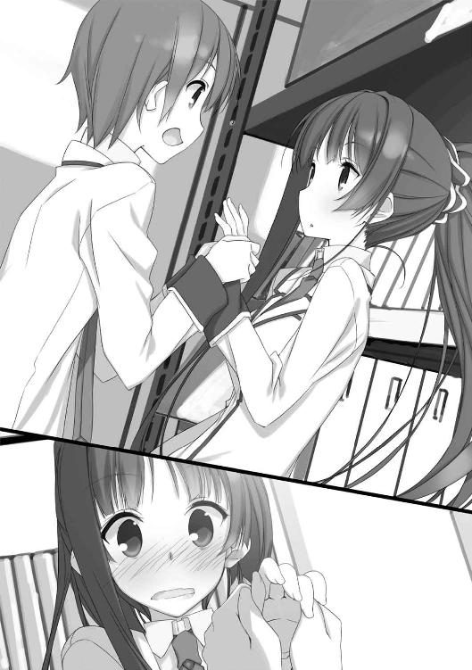

| 子ひつじは迷わない 騒ぐひつじが５ひき: 騒ぐひつじが5ひき (角川スニーカー文庫) | |
| 玩具堂 & 籠目 | |
| 角川書店(角川グループパブリッシング) (2012) | |
子ひつじは迷わない
騒ぐひつじが５ひき
玩具堂
角川スニーカー文庫
本作品の全部または一部を無断で複製、転載、配信、送信したり、ホームページ上に転載することを禁止します。また、本作品の内容を無断で改変、改ざん等を行うことも禁止します。
本作品購入時にご承諾いただいた規約により、有償・無償にかかわらず本作品を第三者に譲渡することはできません。
本作品を示すサムネイルなどのイメージ画像は、再ダウンロード時に予告なく変更される場合があります。
本作品は縦書きでレイアウトされています。
また、ご覧になるリーディングシステムにより、表示の差が認められることがあります。
CONTENTS
イラスト／籠目
デザイン／福田功（imagejack）
プロローグ１．佐々原三月
薄刃の歯車をでたらめな勢いで駆動させるような噪音が、蒼く引き締まった空に響き渡ってはさんばらと校庭に降り落ちていました。
あのギザギザした音色は、体育館の放送室で練習に励む軽音楽部のものでしょうか。ついさっきまでは、ブラスバンドの力強い音色がオーロラのように校舎上空を支配していたものですが、ミーティングに入ったのか、今はただ音楽室の方角から遠い嵐に似た動的な質量だけが感ぜられます。
その他にも無数、殺気のような活気が放課後の校舎の至る所に満ちていました。
そんな、文化祭も間近に迫った秋の日のことです。
わたしは、生徒会室のすぐ外、校庭の片隅で木の板を見下ろしていました。雲形にカットされた白木の板で、一二〇センチ四方はあろうかという大きなものです。
「お店の顔。よろしく頼むわね、佐々原さん」
生徒会室の窓から身を乗り出して声をかけてくれる会長にうなずき、わたしは傍らの筆を取り上げました。
大振りの筆を擦ったばかりの墨に浸し、一五年かけて身の内に作り上げた名前のない機械装置を走らせます。半紙に練習した通りに、でも筆運びの中で得た直覚には逆らわずに。
ものの数秒、とろけたような木目だけがあった白木の板に、
『子しつじ喫茶 らみーず』
の文字が書き込まれていました。会長の注文通り、毛筆の丸みを強調したデザインです。
「どうだ？ 良さそうに見えるけど」
対面にしゃがみ込んで、文鎮代わりに押さえてくれていた成田くんが板を立てて訊いてきます。わたしは目を細めて全体のバランスを確かめ──ふぅと、止めていた息を吐き出しました。
未熟なりに、まずまず満足できる出来映え......でしょうか。
「パーフェクト。いつもながら良い仕事だわ」
「わ、筆書きなのに、なんか可愛いね」
満面の笑顔で親指を立てる会長に続いて弾んだ声を出したのは、手芸部の春日さん。わたしと同じく一年生で、やや小柄な可愛らしい人です。今日は、手芸部に依頼中の衣装の件で生徒会室を訪れたところでした。会長と並んで、窓から顔を出しています。
「それが看板かー。楽しみですね、執事喫茶」
「うふふふ、当日は是非来てね。衣装の分、無料サービスするから」
そう、来る文化祭、我々生徒会役員は執事喫茶を営むことになっています。当初は人員不足で──多忙な三年生を除く役員は五名限りです──無謀かと思われた企画ですが、ある手段によりそれを克服し、今や実現一歩手前まで漕ぎ着けました。
この春日さんの協力を取り付けられたのも、その「手段」の一端です。
「あ、それなんですけど、衣装の数はこれで合ってますか？」
春日さんは手元のメモから顔を上げ、なぜか成田くんの方をちらりと見ました。看板を振って乾かしている成田くんは気付いていません。
「大丈夫よ、問題ないわ」
そう言い切った会長の笑顔は、さながら冬の旭日のごとくくっきりと屈託なく、それでいて抵抗を許さない気圧を放っていました。
わたしの目から見ても素直すぎるところのある春日さんは、会長の迷いなき眼に感心したような息を吐き、ぎゅっと固めた両拳を胸元に寄せました。
「解りました......頑張って可愛く仕上げます」
と、春日さんがその小さな手の内に何かの覚悟を握り込んだその時、生徒会室のドアがノックされました。
会長の半ば反射的な「はいどーぞ」のいらえを受けて、ノックの主は軽快に引き戸を開けます。窓から中をのぞき見たわたしと成田くんは、入ってきた人たちを目にして、同時に驚きの息をもらしました。
「あら、なんだか珍しい取り合わせ」
会長の言う通り、その二人組の来客は意外と言えば意外な組み合わせでした。
先に入ってきたのは文芸部の部長で三年生の東原さん、そして彼女に連れられる形になっている男子は二年の綿貫司さん──二人とも、子ひつじの会の相談で見知った顔です。
「やぁ、文化祭の準備でお忙しいところすみませんね。今日は、取り急ぎ子ひつじの会の皆さんに相談に乗っていただきたいことがあって参じた次第です」
大きな瞳が垂れてこぼれ落ちそうな純和風美人の東原さんですが、慇懃かつ飄々とした語り口も相変わらずでした。
対照的に、以前お会いした時よりも力弱く肩を落としているのが綿貫さんです。線の細いタイプの美男で、演劇部の花形役者という立場にも似ず控えめな性格の綿貫さんですが、今日は特に元気のない様子で、歩く姿もどこかぎこちなく見えます。
会長は、そんな綿貫さんを一瞥してから、東原さんにうなずきました。
「時期が時期だけに人数が集められないと思いますけど、それで良ければ」
「もちろん、それで結構です。
──実はわたし、文芸部の出し物の他に、演劇部の公演のヘルプにも入ってまして。その舞台を成功させる上で、どうしても解決しなきゃいけない問題が綿貫ちゃんに降りかかってるってわけなのですよ」
なるほど。東原さんが綿貫さんといっしょに来た理由は判りました。あとは──
「それで、問題というと？」
当然口に出る会長の問いに、東原さんは懐から抜き放った扇子をシュッと一振りして声を潜めました。
「剣豪、藤浪朝衛の編み出した必殺剣『負の太刀』の攻略です」
Part-A：「本日の相談」（「迷わない子ひつじの会」議事録より）
○相談者・綿貫司（２年Ｃ組）
ど、どうもお久しぶり〔※１〕......あ、でも、初めての人も居るみたいだから、一応自己紹介しておくね。演劇部の二年、綿貫司っていいます。よろしく。〔※２〕
（※１）子ひつじの会が綿貫さんの相談を受けるのは初めてのことではありません。何を隠そう、「迷わない子ひつじの会」の記念すべき第一号案件こそが、綿貫さんに送られた平凡な恋文にまつわるややこしい一件だったのです。
役者でありながら私生活では緊張しがちだという綿貫さんですが、春に会を訪れた時より少しだけ気安い感じになっていて、微妙にずれた既視感がなんだか心地良いような、不思議な感覚です。
（※２）そう言った綿貫さんの視線は、相談を受け付けた流れのまま、会長に引っ張られて会に参加している春日さんに向けられていました。生徒会や各種委員会のメンバーでない春日さんは、前回は当然出席していません。
中性的な美少年であるところの綿貫さんの柔らかな微笑みに、春日さんはうっすら頰を染めてぺこりと頭を下げました。
その節は本当、お世話になりました。
それで今日は──へ？ 鹿野さん〔※１〕とは最近どう......と言われても......
まぁ......あの、この間お宅にお邪魔しましたけど......
──い、いや、違うから！ 弟さんと妹さんがいたし、何事もなかったから！ 浅葱さんのお母様にあいさつしただけです！
......はぁ。もう、からかわないで下さいよ......〔※２〕
（※１）鹿野浅葱さんというのは、綿貫さんの前回の相談の結果、綿貫さんと交際することになった三年生の女性です。そうなるに至るまでにはとても迂遠な道のりがあったわけですが、その辺りは当時の議事録に詳しく載っています。
（※２）ニマニマと飴の鞭のような目で色男を眺める会長と宮野さんに、綿貫さんはコホンと一つ咳払いしました。さすが役者と言うべきか、非常に判り易い咳払いでした。
今日の相談は、前回と全然違って演劇部の活動に関してのことです。
......はい、さっき東原さんも言ってましたけど、とある剣術家の必殺技を破らなきゃいけないんです。まぁ、それだけじゃわけが解らないですよね。
順を追って説明します。
「よし、時代劇やんぞ」
と、鹿野千佳子先輩がむやみに力強く断言したのは、確か一月ほど前の事だったと思います。
御存知の通り、演劇部の鹿野先輩は部長でもないのに部の牽引役で、部員もあの人に付いていくのが当たり前みたいになってます。公演が近付いてくると宣伝と願掛けのために着ぐるみで行動する癖のある人なんですが、その日は「七難八苦」と書かれたダンベルを首に提げた鹿でした。
学内で一番小さいという身長を補うためか部室のパイプ椅子の上に凛然と立ち、懐から取り出した文庫本をみんなに示して宣言しました。
「あたしはこの本を読んで感動した。今の世に忘れられた、行住坐臥真剣勝負、きりりと清冽に精神を研ぎ澄ませた、男たちの世界だ。
この作品を骨のある舞台に仕上げて、曖昧な世相に活を入れてやろうではないか」
その本は『古十郎刀暦』という時代小説で、なんでも実在の剣豪の事績を元に書かれた娯楽作品だそうです。もう著作権も切れたような古い小説なんですけど、先輩はお祖父さんから薦められてハマったということでした。
僕も読んでみたんですけど、面白かったですよ。個性豊かなライバルとの決闘シーンなんかはダイナミックで読み応えがあります。
主人公の阿波古十郎は強いだけじゃなくて義理人情に篤い快男児で、可愛らしい見かけに反して男伊達なところのある先輩は、すっかり首ったけのようでした。
部長の菅野先輩も時代劇好きだったこともあって、『古十郎』の公演はあっと言う間に決まりました。
この問題の始まりは、配役の時からです。
僕も他の部員も、鹿野先輩は主役である古十郎の役を演じたがると思ってましたし、やるべきだと考えてました。演技力でも運動量でも先輩は群を抜いてますし、男性の役を演じた経験も豊富です。
何より、三年生の先輩にとっては、校内で演じる最後の舞台ですから。
しかし先輩が希望したのは、古十郎の敵手・首刈り朝衛でした。
首刈り朝衛──本名を藤浪朝衛。劇のクライマックスで古十郎と壮絶な一騎打ちを繰り広げる最強の敵です。
「首刈り」なんてベタな二つ名の通り、残忍な行いをする悪役なんですけど、クールで虚無的な言動からファンも多いキャラクターなんだそうです。だから先輩が演りたがるのも解らないでもありません。でも、瘦せ形ではあっても背の高い朝衛の役を、極端に小柄な先輩が演じるのはどうにも不似合いです。
そして先輩は同時に、僕を古十郎役に指名しました。
主役です。しかも鹿野先輩直々の指名。うれしくないわけがありません......が。
僕は元々アクションの類が苦手で、今までにもらった主役も文弱な青年や女性の役ばかりです。そんな僕に、精悍な英雄たる古十郎の役を振るなんていかにもミスキャストで、先輩らしくない配役でした。
監督の部長も疑問に思ったみたいで、珍しく鹿野先輩に真意をただしました。鹿野先輩は、いつになく静かな声で答えました。
「あたしたち三年は、文化祭の公演で事実上の引退になる。そうなると、役者要員の少ない二年でエースになるのは綿貫だろう。はっきり言って頼りない」
そこで先輩は、強い目で僕を見ました。僕よりずっと小柄な先輩なのに、背がすくみました。
「綿貫。お前に何より不足してるのは自信だ。何度か主役をこなした今でも、あたしや菅野の後ろでちょろちょろやってた頃の気持ちが抜けていない。
だから最後の手向けに、あたしを倒すチャンスをやる」
先輩の物言いはいちいち大げさなところがあって、その時も何か誇張した言い回しだと思いました。でも、よく聞いてみると......
そのままの意味だったんです。
「あたしは役作りのために『刀暦』と、その元になった剣客の一代記や周辺資料を読み漁って、藤浪朝衛の秘剣『負の太刀』の正体に行き着いた」
首刈り朝衛の必殺技「負の太刀」は、それを使った対戦相手全員を殺したことから、生きて正体を知る者なしという、まさに秘剣です。
ところで小説の『刀暦』は、古十郎と朝衛の決闘が始まる直前、緊張感が最高潮のシーンで終わります。古十郎は「負の太刀」について何か勘付いた描写があるものの、それがどんなことなのかは語られないままでした。
発表当時から賛否両論のあった結末なんだそうで、僕なんかは独特な迫力を残す読後感で好きなんですけど、結局のところ「負の太刀」の正体は藪の中です。
文庫本の解説にも「使い手があれだけ活躍しながら最後まで正体が判らない、小説中の剣法としては極めて珍しいケース」と書かれてました。ところが鹿野先輩は、そんなミステリアスな剣を原作や文献から読み解いてしまったというんです。
普通なら笑ってしまうところですが、役作りに入った先輩の集中力は半端ではありません。それに、僕は見せてもらえませんでしたけど、先輩の推理を裏付けるような資料をいくつか見つけているようです。
「綿貫、お前は古十郎の役に入り込み、『負の太刀』の正体と攻略法を考え出せ。そして、あたしと試合をして破ってみせろ。
史実では、古十郎は藤浪朝衛のモデルになった人物に勝っている──つまり、お前が古十郎の役作りに成功したのなら、朝衛を斬って捨てて、押しも押されもしない無双の主役になれるわけだ。
その代わり、もしあたしに負けることがあれば、お前は主役を降りて、別の役に代わってもらう」
──そんなわけで僕は、先輩......そして藤浪朝衛の必殺技を破らなくてはならなくなりました。〔※１〕
（※１）そこで綿貫さんは、なめらかな眉間を愁いに歪めてうつむきました。
......でも正直、途方に暮れています。僕には到底、鹿野先輩の求める古十郎役が務められるとは思えなくて。
原因の第一は、先輩に資料をもらって「負の太刀」の正体を見極めようとさんざん考えているんですけど、一向に埒が明きそうにないことです。
先輩が「負の太刀」の正体を導き出したという資料全てに目を通しても全くものになりません。剣術の素養がないのが原因かとも思って『日本の剣術』とかそういう感じの入門書みたいのも読んでみたんですけど、どうにもピンと来ません。
第二に、僕自身の資質の問題です。
資料を読み込むのと平行して、格技場の片隅を借りて鹿野先輩に剣道の稽古を付けてもらってます。先々代の部長が剣道をたしなんでいたとかで、先輩も以前、同じような訓練を受けたことがあるそうです。
黙っていれば妖精のような先輩が野暮ったい竹刀と防具で武装する様は、牧歌的な愛らしさに満ちていました......が、僕は一太刀の反撃もできないまま滅多打ちにされて、ものの半時間で足腰立たなくなりました。
正直、経験の差があるとはいえ、ああも一方的にぼてくり回されるとは思いませんでした。......こう見えても僕は、中学の時に空手の道場に通っていて、結果は出せなかったものの基礎体力だけは付けたつもりだったんです。肺活量や持久力だけなら、同門だった宍倉にも〔※１〕負けません。いくら先輩の運動能力が高くても、そうそう後れを取るわけがない......そう思っていました。
でも、蓋を開けてみれば、元から喧嘩っ早い性格で、数々の舞台で殺陣をこなした先輩の覇気の前に僕は全くの無力でした。体力以前、本能のレベルで捕食されてしまってるんです。
（※１）宍倉さんというのは、綿貫さんの紹介で子ひつじの会に相談しに来た事もある二年生の宍倉徹さんでしょう。部活にこそ属していませんが、それなのに体力測定のアベレージが学年首位だということで有名な人です。
数々の部活動に勧誘されながら、頑なに断っているそうですが、何か理由があってのことなのでしょうか。
......そんなわけで、現時点の見込みでは僕が先輩に勝てる可能性はゼロに近いんです。
でも僕は、なんとあっても、勝ちたい。
なぜって、先輩がこんな無茶な提案をしてきたのはきっと、僕ら後輩のためを思ってのことだからです。
体格に恵まれないながら特異な演技力とアクションセンスを持つ先輩は、地区のコンクールで何度も賞をもらって、今や部のカリスマです。そんな先輩がもうじき引退ってことで僕らは無意識の内に不安を膨らませてしまっていて、先輩はそれを感じ取ったんだと思います。
ここで僕が勝てれば、そんな不安を払拭して、何より先輩たちに心配を残さず送り出せます。だから、なんとしても先輩の期待に応えなきゃいけないんです。〔※１〕
さっき挙げた二つの問題の内、僕の体力や心構えのことは自分でなんとかするしかありません。
だから皆さんには、「負の太刀」の正体を考える手伝いをしてほしいんです。
これから考察に必要な資料をまとめた物を読み上げ......ようと思ったんですけど、演劇部の手伝いに来てくれていた東原さんが、子ひつじの会に行くなら説明役をして下さるというので......お言葉に甘えることにしました。前にも言ったように、僕は舞台や稽古以外じゃ口が回らない方だから。
──それでは東原さん、よろしくお願いします。〔※２〕
（※１）今でこそ鹿野さんとお付き合いしている綿貫さんですが、春までは問題の鹿野千佳子さんに恋をしていました。この件に関する綿貫さんの気負いには、そのことに対する何かも含まれているのかも知れません。
（※２）そう言って綿貫さんは、隣に座っている東原さんに頭を下げました。東原さんは「はいな。わたしも鹿野ちゃんには気持ちよく卒業してほしいですからね」と懐から愛用の扇子を取り出すと、膝の上に置いていたコピー用紙の束をパシンと一打ち。
まろやかさと深みを両全に備えた美声で、阿波古十郎と藤浪朝衛、二人の剣客の数奇な物語を語り始めました──
○語り・東原史絵（３年Ｃ組）
ァさて。
今夕これより語りまするは『古十郎刀暦』──今回俎上の小説の、問題に関係ある要点を抜き出したる特別編集版。
子ひつじ御一統には、このお話から『負の太刀』の正体を考えていただきます。資料のコピーは後でお渡ししますが、ひとまず御静聴願いまする──
まずは我らが主人公、阿波古十郎の人となりからお話し申し上げましょう。
阿波古十郎、幼名を蘭太郎、号を明鏡斎。裕福な郷士の次男に生まれた蘭太郎は、小兵ながら生来快活な質で周囲の若者の顔役的な立場になり、一五歳で近隣最強を謳われる道場の門を叩きます。
道場では最初、体格に劣ることを理由に侮られ、風呂焚きに甘んじました。その後、修行者や道場破りが来た時の小手調べ、あるいは嚙ませ犬として試合する役割を押し付けられましたが、風呂番はともかくこちらは喜んで引き受けたということです。
そんな風に格上との試合を重ねた蘭太郎はあっと言う間に道場一の使い手に上り詰め、二十歳を待たずに目録を授かるとともに古十郎を名乗るようになります。その頃には持ち前の豪放な性格から道場内の人望を集め、彼を慕う門下生が競って風呂焚きになりたがったといいます。
その後、各地を放浪しながら数々の剣客と戦い、墨心流なる独自の剣術を編み出すのですが、今回重要なのは古十郎の宿敵の方なので詳しいところは割愛します。
あふれる人的魅力を持った、正統派の達人であったことだけ記憶しておいて下さいな。
さて、お次が肝心。「負の太刀」を振るう剣客、藤浪朝衛についてのお話。
朝衛は古十郎より十ほど年長。貧しい農民の長子に生まれた彼は、上背に恵まれながらも貧窮から瘦せぎすで、村の者からは「ほね」などと呼ばれていたそうな。藤浪朝衛の名はずっと後になって名乗ったもので、農村時代の本名は伝わっておりませぬ。
生まれついての悪相にて、村の子供は皆、彼を見る度に「骨の鬼じゃ」と泣き出したと申します。しかしそのような外見に反して性格は穏やか。酒癖の悪い父親に殴られても蹴られても、ただなされるがままになっていたそうです。
一度などは熱した薬缶で顔面をしこたま殴られ、しばらく片目が開かなくなるほどの怪我をしましたが、その時ですら文句の一つも言わず、父の酒代を作るために働いたという健気。しかしそれにも理由がございました。
なんとなれば、「ほね」が耐えねば幼い弟に暴力が及ぶことになるからです。無邪気に自分を慕う弟だけが「ほね」の瘦せ衰えた心身の支えだったのです。
酒のみならず女癖も悪かった父親は多くの村人に憎まれ、その悪意は「がたがたぼね」「こわれてんびん」などという罵声になって「ほね」に降りかかりました。
しかしある時、「ほね」の留守中、酔った父親がなんのきっかけがあったのか幼子を激しく折檻しました。帰ってきた「ほね」が見たのは、部屋の隅に横たわって二度と動かない小さな骸でした。
激怒した「ほね」は稲刈りに使っていた鎌で父を打ち殺し、鉈で落としたその首を父の情婦の家に投げ込んでそのまま逃亡しました。山中まで追いかけた村人が見たのは、人よりも蜥蜴に似た動きで夜闇に駆け消える「ほね」の背中だけでした。
怒りのままに振るわれた鎌は父親の頭蓋に柄までめり込み、誰にも引き抜くことができなかったと申します。
「首刈り朝衛」の戦慄は、この親殺しの惨劇から始まったと言ってよいでしょう。
もっとも、その後の十数年、「ほね」の足取りは一切知られておりません。無頼の浪人に拾われて追い剝ぎをしながら剣を修めたとも、旅芸人の一座にまぎれ込んで投剣の曲打ちを学んだとも言われます。
ともかくも、藤浪朝衛の名が壮絶な剣客として知れ渡った頃の彼は、元の「ほね」とは別人のようになっておりました。
長身瘦軀は昔のまま、人を殺すための筋肉だけが全身にコブのごとく盛り上がり、常に眇めたような眼は子供ばかりか大の大人が腰を抜かす凶相を帯びて。
新陰流の達人に斬られて不自由になったと噂される左足を引きずり、常に樫の木の杖を手放さぬ姿が、逆に物凄いような風格となって朝衛を怪物じみたたたずまいに見せておりました。
その頃、吾来経無なる武芸者の勇名高く、兵法好きで知られる某藩の藩主公に武芸指南役として召し抱えられようとしているとの噂が流れておりました。
吾来は地元の浪人で、阿波古十郎とはともに技を磨き合った同輩。流行り病で家族を亡くし、失意の放浪をした後、ようやく気力を取り戻して故郷での再起を期した矢先のことです。藩からの使者にも喜んで受諾する意を返しました。
しかし、面白くないのが元来藩の指南役を拝命していた一党です。この輩どもは吾来を目障りに思い、金次第で人殺しを請け負うという藤浪朝衛に吾来の抹殺を依頼したのです。
朝衛は、吾来が道場から酒場に行く道に待ち伏せました。逢魔が刻、血の色の夕日におののき揺れる、背の高い草原の真ん中です。
「その練達した足運び、吾来経無殿とお見受けする」
「左様」
誰何を終えた朝衛は無言で杖を足下に倒し、刀を抜き放ちました。彼の得物は、鞘走りの音すら歪に響く、鈍器じみた段平。
吾来はすぐに、朝衛の左足が利かないことに気付き、誰だか知らぬが無駄に命を捨てるなと告げました。しかし朝衛は斜視気味の顔を横に振り、
「すまぬが金が要る。死んでくれ」
と地の底から響くような低い声で突っぱねました。今度は吾来が首を振ります。
「金か」
彼も永らく浪々の身、薄汚いことも身に覚えがないではない。責めるでもなく刀を抜き合わせました。切っ先を相手の眉間に合わせる清眼の構え。さすが音に聞こえた達人、いかにも隙がありませぬ。
それに比べて朝衛は、ただでさえ重そうな刀を大上段に振りかぶり、無事な右足を前に、動かぬ左足を後ろにした右上段の構え。誰の目にも隙だらけ。
しかしそれだけに不気味。殊に吾来は相手の尋常ならざるを感じ取り、まずは様子をうかがおうと距離を保ったまますり足して──その瞬間に朝衛が動く。
吾来、ひとまず身を退こうとするも草に足を取られたか朝衛の間合いから離れ損ない、そこに渾身の斬撃が見舞われます。
「あっ！」〔※１〕
と漏らす声もあらばこそ、儚くも吾来経無、一拍後には額を断ち割られて絶命しておりました。
（※１）と、そこまで抑制された声で語っていた東原さんの出し抜けの大声に、部屋全体がびくんとすくみます。会長や宮野さんはむしろ前のめりに聞き入りましたが、わたしなどは体を固めて隣の春日さんと肩を寄せ合いました。
翌朝、吾来の寄宿していた道場の門前に、蓋の釘付けされた桶が置かれておりました。
若い門弟がいぶかしんで蓋を引っぺがしてみると、そこには昨夜から行方知れずになっていた吾来経無の生首。これは門弟、ぎゃっと魂消て腰を抜かす。
騒ぎに気付いた道場主が吾来の首を取り出してみれば、断末魔の表情は整えられ、無茶苦茶に打ち砕かれた額を覆い隠すように、
『吾来経無殿
負の太刀にて
討ち取り申す 首刈り朝衛』
と、凍えたような筆でしたためられた手紙が貼り付けられておりました。
右に語った吾来殺害の模様は、偶然草原を通りがかった小僧さんの口から後になって語られたことでございます。
あの吾来経無が、かくも劇的な最期を迎えたことは瞬く間に知れ渡り、同時に「首刈り朝衛」の悪名も剣の世界に一点の黒いシミを落としたのでありました。
義心の剣客は敗者に無用の辱めを加えた朝衛への憤りから、野心の武芸者はただ功名のため、そして求道の武人は善悪を越えた探究心から、藤浪朝衛を追い求めました。
朝衛はと言えば暗殺の依頼をしてきた藩士の計らいで、吾来の殺害については武芸者同士の尋常な決闘であったとして咎を免れ、町外れ、すすき原の傍らにうち捨てられていた小屋で、何を備えるでもなくべんべんと暮らしておりました。家族と申せば飯炊きの下男と、自身と同じく左の後ろ足を患った老犬が一匹。
何人もの強者がその小屋を訪ね、朝衛に立ち合いを申し入れ、そして死んでいきました。
朝衛に斬られた者は皆、眉間や脳天を一撃で叩き割られ、無残の首となって市中に晒されたのです。
『これある某
果し合い所望なれば
負の太刀にて
討ち取り申す 首刈り朝衛』
残忍異形の殺人剣。首刈り朝衛と魔剣「負の太刀」の名が近隣に知らぬ者なき高みに上るのに、時はかかりませんでした。
こうして鮮烈な武名を得た朝衛は、自身は小屋に籠もってのんべんだらりと過ごしながら、下男を町の道場にやって小遣いをせびらせました。道場破りを恐れた道場主たちから賄賂を受け取っていたのです。その裏で人斬りを請け負い結構な金を集めたはずですが、生活は至って質素。いったい何に遣っているのか、小屋の床下にたんまりではないか、などと余人の憶測しきり......
時に、左京真策なる剣客がありました。体軀に恵まれ、総身の覇気が桃色の肌に噴き出した意気隆々たる壮漢。幾人もの武芸者と刃を交えながら肌一枚以上の傷を負ったことがないという剛の者です。
例によって朝衛を狙うこの男、ひょろ松という目端の利く小男を使って朝衛のことを調べさせました。まずは「負の太刀」の正体を見極めねば勝負にならぬ、と。
「どうだ、ひょろ松。『首刈り』めのこと、何か判ったかね。例えば誰の弟子だとか」
「奴に剣法を教えたのがどこのどいつなのかは判りやせんでした。ただ、一〇年ほど昔にこの辺りを回ってた芸人一座の中に、骨のような顔容で妙な歩き方をする男がいて、それがどうやら『首刈り』らしいって話です。
なんでも、投げ刀の曲打ちを芸にしていたとか。目隠しをしながら、飛んでくる皿に小刀を投げて打ち落としてみせたそうです」
「なるほど、手裏剣ならば足が悪くても使えるな」
「『負の太刀』に関係あるんでしょうか」
「いや、難しいな。俺の方でも当たってみたが、最初の吾来を斬った時も、その後何度か小屋の外で決闘をする様を見た者の話でも、『首刈り』の構えは両手を振りかぶった大上段。振り下ろす時も一息で、そして一太刀で相手の頭を割っている。受けようとした相手の刀をへし折ったことすらあったという。
それだけ全力の打ち込みをしながら妙な仕込みを放つ余裕はないはずだ。無論、刀を投げつけたわけでもあるまい」
「むむ......」
「......にしても、やはり奴の足が悪いというのは本当だったか。少々卑怯だが、これを突かぬ手はあるまい」
「やはり、と申しますと？」
「昨日、小屋のそばまで出向いて薪割りに出てくる奴の姿を見た。体幹の揺らぎ、杖の置き方、何を見てもあのずれを演技で装えるものではない、本物だ。俺とて場数を踏んだ武芸者、体の動きを偽っているならばすぐに見抜ける」
「な、なるほど。そう言われてみれば、あれだけ鬼畜の所業を重ねながら、ぼろっちい犬を可愛がっているのも解る。自分と同じ足を悪くしてるから......」
「いかさま、な......他に知れたことはないのか？ 下男とやらは何者だ」
「ありゃあ、ただの爺さんです。働き者の息子を亡くして途方に暮れてたところを野郎に拾われたそうです。くたびれちゃいるが律儀者で、身元に怪しいところはありやせん」
「む、む......やはり解せん。最初の吾来は片足が利かないと侮って敗れたのかとも思ったが、名うての剣客が次々と斃れているのは不思議だ。奴の剛力は疑うべくもないが、隙も大きい構えで必勝を期せるとは思えん」
左京は半月も思案投げ首した末、やはり隙を補うための手裏剣、あるいは口に針を含んで吐き出すなどの工夫をしていると断じました。それでなければ、片足の悪い朝衛が常勝を保てるはずがない。
その飛び道具の正体こそ絞りきれなかったものの、それを用心するだけで結果は大きく変わる......誰かに先を越されるかも知れない焦りもあったのでしょう、左京は考えうる全ての武器への対策を心に秘め、決闘を挑むべく朝衛の小屋を訪ねました。
小屋の外で薪を割っていた朝衛は、左京の足音に顔を上げ、茫漠と眺めました。左京が名と来訪の目的──斬り合いを望むことを告げると、無造作に斧を投げ捨てます。
そして立て掛けてあった刀を帯び杖を突き、すすき原の方へ歩き出しました。間近で見てもぎこちない動きで、杖がなければ三歩の歩みも覚束ない有り様。
「来い。ここでやると、家の中まで血の臭いがして敵わん」
左京は大人しく従いました。老犬は左京には一瞥もくれず小屋の前で丸まり、行儀良く主の帰りを待つようでした。
静かに刀を抜き、流儀を告げる左京に、朝衛はただ「藤浪朝衛、負の太刀」とだけ応えて杖を足下に倒します。
例によって大上段に段平を振りかぶる朝衛。
中段に構えて飛び道具に備える左京。
少し離れて見守るひょろ松......その手の汗が、じわりと粘りを帯びた頃。
夕影に呑まれて名も知れぬ鳥の哀哭が、すすきのうねりを間切って二人の剣士を隔てる空間を吹き過ぎ──左京が動きました。
刀を正面に構えたまま、突進。彼方に飛礫を放つ素振りがあればすぐに避けられるよう、小刻みな足さばきで瞬く間の肉薄。警戒した分、斬り込みとしては鈍い動きでしたが、片足に手負いの朝衛の死角から攻める必勝の足運び。朝衛にはかわすべくもありません。
切っ先が彼方の胴を薙ぐまで後四歩......三歩......
迎え撃つ朝衛。重心が揺らぎ、総身に踏み出しの気配が籠もるも──
間に合わねぇッ、旦那の勝ちだ！──ひょろ松の、声なき快哉。
しかし。
今まさに必殺の胴薙ぎを繰り出そうとした左京が突然、動きを止めました。そして、絶望そのもののうめきが彼の喉を震わせたのです。
「お、負の太刀......！」
その間すら一瞬。
動きを止めた左京の脳天に、岩のごとき一刀が振り下ろされました。
すすき原に、真っ赤な徒花。
悲鳴を上げて逃げ出すひょろ松を、朝衛はたった今人を殺めた者とは思えない平板な顔で見送っていたと申します。
左京真策の首が市中に晒されたのは、その翌朝のことでありました。
「首刈り」強し。
敗者への惨い仕打ちから悪名を上げた異形の剣客。正面からの立ち合いで勝てる者はないのか......道場の威信、剣士の誇り、様々な思惑で朝衛打倒が切望されたその時に。
我らが阿波古十郎が武者修行の旅から戻り、首刈り朝衛との決闘を宣言したのです。
古十郎はまずひょろ松を呼びつけ、左京や吾来の対戦の顚末を聞き出しました。左京に義理を感じていたひょろ松は、自分の知る洗いざらいを古十郎に告げ、どうか旦那の仇をと泣き崩れました。
「泣くな、泣くな、ひょろ松。俺としても吾来さんの仇は討らねばならん。
実はな、帰る途中で北の生まれだという行商人に出会い、藤浪朝衛の生まれた村の話を聞いた。奴め、呑んだくれの親父を殺して逐電したらしい。もっともそちらは、親父の方が非道の報いを受けた形らしいがな。
ともかくそいつに聞いた話とお前の話とで、どうやら『負の太刀』の正体が読めた。
......俺の勘が正しければ、左京真策は惜しかったな」
......さて、この後、古十郎が朝衛と相対する場面で小説は終わります。しかし、この古十郎の洞察は正しかったのでしょう。
小説では描かれなかったものの、史実では古十郎は朝衛のモデルになった剣士を倒して名を上げました。誇張もあるでしょうが、「負の太刀」という技が存在し多くの剣客を葬ったことも事実のようです。
役作りをいっそ魂の同化と言っちゃう鹿野ちゃんの考え方では、古十郎になりきれば解けてしかるべき謎、というわけですね。
ちょっと無茶なお願いという気もしますが、去年はあんなに頼りなかった綿貫ちゃんが張り切ってることですし、なんとか助けて上げて下さいな。
では、よろしくお願いします。〔※１〕
（※１）さっきまで乗りの良い巻き舌で剣戟を語っていたのが噓のように、東原さんは神妙な仕草で頭を下げました。三年生として、部活動の部長として、この飄々とした人にも思うところがあるのでしょうか。
Part-B：佐々原三月
綿貫さんのお話と、東原さんが扇子を刀に見立てた手振りまで付けて語ってくれた「首刈り朝衛」の伝説をノートパソコンに入力し終えて──わたしは、大きく息を吐きました。今回は時代劇ということで、独特な表現が多くて大変でした。
「お疲れ様......すごいね、いつも書記の人が入力してるんだ」
隣に座った春日さんが、眩しいくらい無邪気な感心顔で労ってくれます。
「悪いな春日、付き合わせちゃって」
と、これはわたしの前からパソコンを移動させながらの成田くん。いつも通り、わたしの入力にミスがないか確認してもらいます。
春日さんはあわてて首を振りました。謝られた側なのに申し訳なさそうです。
「ううん、いいの。それに、一度こっちに座ってみたかったから。えへへ......前はあたしが相談を聞いてもらったのに、なんだか不思議かも」
あの、取り澄ました顔の裏側にねじけた邪慢を荒ぶらせる松宮さんがコロリと惚れ込んでしまうのも解ろうという、ふんわりした笑顔でした。思わず頰が緩みます。
「でも、力にはなれそうにないかな......チャンバラとかよく解らないし」
「わたしもさっぱりです。時代劇はよく視るのですが」
「他の人はどんな感じかな？」
成田くんが議事録を読み終えるのに少し時間がかかりそうなので、部屋の中を見回してみます。急な招集だったので、いつもの半分くらいの人数しかいません。
そんな中、宮野さんが手を挙げました。特に挙手発言が定められているわけではないのですが、気分の問題でしょう。会長も乗っかって指名しました。
「はい、宮野さん」
「まず根本的なことを訊くけど、あたしたちが考えちゃっていいの？ つまり、古十郎が一人で答えを出したんなら、綿貫くん一人で解かないと......役作り？ にならないんじゃないの」
確かに根本的なことです。当然出るべき疑問に、綿貫さんは「あ、ごめんなさい」と説明不足を謝ってから答えてくれました。
「それは大丈夫です。実は古十郎も、懇意にしている碁敵の女性......千里眼の巫女とか言われるミステリアスな女性から試合の助言をもらうシーンが何度かあるんです。藤浪朝衛のことについても、その人に相談して、勝機を見極めてから挑みました。
だから、これはむしろ役に沿うことなんですよ」
なるほど、と納得すると同時に、首を傾げます。剣豪、巫女、碁敵......どこかで聞いたような......？ 気のせいでしょうか。
宮野さんは、そっかとうなずいて続けます。
「それじゃ、ちょっと整理してみよう。
まず大前提として、『負の太刀』ってのは鹿野さんでも......まぁ、威力はともかく形としては再現できる技ってことだよね」
「そうですね。何年もかかる専門的な訓練や、特異な身体的特徴がなければ使えないってことはないと思います。ただ、先輩はとにかく器用な人なんで、小手先の曲芸レベルなら少しの訓練で再現できるというのは気を付けなきゃいけないかと」
「となると、腕力が必須な技じゃあないのね」
会長の言葉に、綿貫さんは浅く頭を振りました。
「いえ、そうとも限りません。小道具の刀は本物より軽いですから、本来は剛力を必要とする技でも、ある程度は使えてしまうと思います」
綿貫さんが同学年の会長や宮野さんにも敬語なのは、相談会という「場」への気後れの表れでしょうか。ともかく、今のやり取りで解ったのは、「負の太刀」というのは小柄な鹿野さんの体格でも再現できるもので、でも腕力の制約は参考にならないということでしょうか。
それらを咀嚼したような間を置いてから、会長が首を傾げました。
「でも、お話を聞く限りじゃ、単に力任せの兜割りに思えるけど」
言いながら、コピー紙を適当に丸めたものを剣道の面の動きで振り下ろします。ビュンッッ──と、紙切れが発したとは思えないような魔風めいた音がしました。......なるほど、真剣でこんな打ち下ろしを受けたらひとたまりもありません。
成田くんが顔を上げて言いました。
「確かに会長みたいな馬鹿力なら、それだけで必殺の威力は出せるでしょうけど──」
「馬鹿力？」
会長が恐ろしくポップな笑顔で聞き返しました。成田くんはこめかみ辺りに冷や汗をにじませて言い直します。
「藤浪朝衛が繊細可憐な生徒会長猊下とは似ても似つかない暴力的なパワーの持ち主だったとして、それだけで名うての剣客たちを撫で斬りにはできないのではないか、と愚考いたします次第です」
「そうねぇ。引っかかるところと言えば、左京なんとかって人が負けた時、斬られる前に『負の太刀』と口走ってることかしら」
「直前で『負の太刀』の正体に気付いて、驚きで動きが止まっちゃったってことかね？ そうだとすれば、至近距離で初めて判るような技なのか」
宮野さんが継いだところで、しばし論が滞ります。今日は人数が少ないせいか、意見がなかなか連絡しません。そんな中、副会長が挙手して口を開きました。
「しかし、それでは間近で見た者の証言がない──つまり、見た者は斬り殺されるわけですから──今の話の中からでは、正体が知りようもないのではないでしょうか」
敬語であるところからして、東原さんに対しての質問のようでした。今回の主賓は綿貫さんなわけですが、特に不思議なことでもありません。いつもクールな副会長が、東原さんの出席する会議に限ってむやみに張り切ることは生徒会の常識になっています。今の発言も、普段ならまず聞くことのない、ガチガチに緊張したものでした。
東原さんはそんな純情に気付いているのかいないのか、普段通りののほほんとした居住まいで答えてくれました。
「そうは言っても、鹿野ちゃんはこういうことでハッタリを言う子じゃありませんからねぇ」
綿貫さんがあくまで真剣な様子なのに比べ、この人はどこか楽しそうにすら見えます。それにしても......聞けば聞くほどこんがらがってきました。議事録を入力している時は、斬り合いの情景を案外に詳しく知れたと思ったものですが、いざ考えてみるといろいろな考えが浮かんできて、でもどれも押し切れません。
会長や宮野さん、他の面々も東原さんを巻き込んで意見を交わしていますが、これというものはまだ出ていないようです。久しぶりの難物でした。
わたしも春日さんや成田くんと話し合っていると、いつの間にか綿貫さんが近くに来ていました。気付いてあいさつする成田くんに、綿貫さんは上級生らしい穏やかな笑顔を浮かべて、
「こうやって話すのは久しぶりだね。仙波さんとは仲良くやってる？」
？ 綿貫さんは仙波さんのことを知っているようです。前回の相談の時、成田くんが仙波さんの見解を聞いた上で綿貫さんをだまくらかしたという話は聞いていましたが、これは初耳です。
成田くんは、乾いた笑いとともに目をそらしました。
「え、ええ......まぁ、その......相変わらずです」
「はは、そうか。ま、応援してるから頑張ってよ」
何を応援して、何を......頑張るんでしょうか。気になりましたが、なんとなく口が挟めません。
「ありがとうございます......綿貫さんも、次から次へと大変ですね」
成田くんの同情に、綿貫さんは苦笑して、でも思いの外しっかりした声を出しました。
「うん......でも、ありがたくもあるんだ。君に手荒く背中を押されて、先輩への恋は思い切れたけど、尊敬する恩人であることに変わりはないから。そんな人に期待されるのは、やっぱりうれしいよ。
小学校の頃の僕は、イジメってほど深刻じゃなかったけど、よくからかわれたり避けられたりしてね。......女顔とか、なよなよしているとか、そんな感じで。それで中学では空手なんてやってみたけど、すぐにやめちゃった。どうにも気弱でさ、宍倉にも『優しすぎて向いてない』なんて言われちゃったよ。あいつとしては褒めたつもりで言ったんだろうけど、落ち込んだなぁ......
そんな宙ぶらりんで高校に上がった僕を、鹿野先輩は力ずくで引き上げて、演劇って全力で打ち込める舞台をくれたんだ。あの人は僕の恩人で、ヒーローで......大切な先輩だから、明確な形で期待に応えるチャンスをなんとしても活かしたい」
そう語る綿貫さんの顔は鹿野さんへの思慕にあふれながら依存心は感じさせず、春先に見られた頼りない印象はほとんどありません。そんな綿貫さんの様子を、成田くんは感慨と、何か思うところがあるような顔で見ていました。
しかし、次に彼が訊いたのは、綿貫さんではなく藤浪朝衛のことでした。
「ところで、首刈り朝衛が貯めていたってお金は、結局どうなったんですか？」
「ああ、それについては文庫本の最後に外伝という形で載ってるんだけど、ちょっとしたドラマがあってね。
父親に殺されたと思われた朝衛の弟だけど、実は殺されたのは別の子供だったんだ。『ほね』をからかおうと家に忍び込んできて、酔っ払いの父親に泥棒と間違われて殴り殺されたらしい。
生きていた実の弟は、どんな経緯か、とある商店の番頭に収まって朝衛と再会した。でも、その商家は経営が傾きかかっていて、朝衛は汚れ仕事で得たお金のほとんどを店を支えるために弟へ渡してたんだ。
朝衛の死後、その弟は古十郎を訪ねてきて、兄は決して望んで殺生を重ねたわけではない。全ては兄の好意に甘えてしまった自分が悪い。兄を斬ったあなたには、それを知っていてほしいと、涙ながらに訴えたそうだよ」
「欲得ずくの殺し屋じゃなかったんですね」
「そう。生き別れた弟のために、すぐに大金を手に入れるための方法を考えたんだ。不自由な体の自分にも殺しの依頼や道場を脅す威名が得られるように、わざと目立つ殺しに手を染めて、名を売って。それにしても不器用すぎるとは思うけど、裏側を知ってると見方が全く変わるよね。本当は思い詰め易い、弱い人だったのかも知れない。
からっとした性格で奔放な生活を送って、その自由闊達さがいろんな人を惹き付ける古十郎とは正反対の魅力って言うか......
小説の登場人物としても人気があるらしいし、先輩がやりたがるのもうなずけるよ」
鹿野さんの演じる役だからでしょうか、綿貫さんは朝衛を熱っぽく語ります。その声音には強い共感がにじんでいました。
成田くんは何か考え込みながらうなずきました。先ほどから、何か引っかかるところがあるようですが......
「何か思い付いたんですか？」
「いや、技の正体についてはお手上げだよ──」
成田くんはあっさり肩をすくめて、その視線を肩越しに背後に向けました。そこには壁が在って──壁の向こうには、物置と化している部室棟資料室が在ります。
「なんとか埒を明けないとな」
わたしは、同意と、それによって聞くことができるであろうあの人の話への期待を込めて、こっくり深くうなずきました。
その後、なかなか結論が出なかったのと、急ぎで会長の裁決が必要な書類が舞い込んだため、一五分の休憩時間に入りました。
成田くんとわたしは、他の人たちが相談についての議論や文化祭関係の雑談をしているのにまぎれて、部屋の隅の扉から隣の資料室へ入りました。席を立とうとした時、東原さんにウインクされたように思います。
そうしてやって来た、文化系の部活の「不要なのかどうかも判らない」物品が詰め込まれて狭苦しい部室棟資料室。わたしたちは、その混沌具合も見慣れてきた部屋の住人──仙波明希さんに会いに来たのでした。
成田くんのクラスメートで文芸部の幽霊部員であるところの仙波さんは、放課後は毎日のようにこの部屋に籠もり、図書室や文芸部室から調達した本を読みふけっています。だから今日も、部屋にいてくれたことはいてくれたのですが......
「ど、どうした仙波？」
成田くんがあわてるのも無理はありません。
今日の仙波さんは体操着姿で、部屋の真ん中にしつらえられた閲覧机の上にぐったりと横たわっていたのです。
小柄で瘦せ形の仙波さんの体は特段大きいというわけでもない机の上にすっぽり収まり、いつ見ても手入れの痕跡が見られないボサボサの髪が顔にかかって表情はよく見えません。
あんまりにも静かなので寝ているのかとも思いましたが、成田くんの声に反応して、物憂げな声が返ってきました。
「うるさい......静かにして」
眼鏡越しにも不快そうな目を成田くんに向けます。成田くんはその視線に怯みつつ、返事があったことに安心したようでした。そうしたら仙波さんが体操着姿──加えて言えばスパッツで取るには少々問題のある姿勢──であることを意識してしまったのか、にわかに目をふためかして視線の置き所を探しだしました。
わたしは手挟んでいた資料をぺしっと成田くんに押し付けて、仙波さんが上体を起こすのを手伝いながら訊いてみました。
「どうしたんですか、いったい」
「補習よ......梁井先生が文化祭前に済ませるって張り切って、走り回らされて......かれこれ三〇分くらい動けないでいたわ......」
体育の梁井先生は涼しげな容貌に似ず授業に熱心な人なので、補習といえど一切の手抜きなくシゴき上げたのでしょう。見るからに運動不足の仙波さんにはオーバーワークだったようです。
「相変わらず体力はからっきしだなぁ」
言いながら、棚の片隅からキノコ形のクッションを取り出して差し出す成田くん。仙波さんは返事せず、キノコをひったくって寄りかかりました。仙波さん愛用のクッションで、柄に当たる部分に楕円形の目が二つとωのような口が書いてあります。
仙波さんはクッションの感触に人心地を得たのか、疲弊にしかめていた顔を緩ませて言いました。
「で、何か用？」
「ここに三〇分もいたなら聞こえてただろ、綿貫さんの相談」
今も宮野さんと東原さんが放送部が新しく買った器具がどうのと話してる声が壁越しに聞こえてきているように、この部屋は隣の会議室の声が素通しになっています。
「何か考え付いたことはないか？」
仙波さんは成田くんに冷淡......というか心を凍結しているので普段ならまともな会話を形成するのに時間がかかるのですが、今日は疲れすぎているのか、とほんと眠たそうな声を返してくれました。
「あの人も懲りないわね......またどっかのバカにデタラメ摑まされるかも知れないのに」
声は眠たげでも舌鋒は健在でした。すでに露見したとはいえ綿貫さんに後ろ暗いことをした覚えのある成田くんはうッと詰まりましたが、
「だ、だからこそ、今度はちゃんとした答えを出したいんだよ」
仙波さんはまだ乗り気でなさそうでしたが、ふと視線を棚の一角──芯のないテープ台に留めると、小さく呟きました。
「あれからもう、半年か......」
「仙波さん？」
「......秘剣『負の太刀』。思うところはある」
何がきっかけなのか判りませんが──今日も仙波さんの話が聞けるようです。わたしと成田くんは目を見合わせて、お互いの目の中に同じ色を認めました。飢餓に似た好奇心。
「思うに、この話で一番重要なのは、なぜ藤浪朝衛は『首刈り朝衛』なのか、という点ではないかと思う」
わたしは反射的に、藤浪さんという人の悪趣味だと思いましたが、すぐに打ち消しました。綿貫さんの教えてくれた後日譚によれば、藤浪朝衛は弟思いで本当は殺生を好まない人だったということです。
そう思って顧みると、なるほど、いささか突飛な一事です。
「えぇと、それは多分、殺し屋として箔を付けるためじゃないか？ ただ斬って捨てるよりずっとインパクトがあるし、朝衛は弟のために金を得ようと必死だったんだ」
成田くんの推測に、仙波さんはうなずいて、でも否定しました。
「恐らくそれも、一面においては正しい。でも、それにしてはインパクトがありすぎる。そんな非道を繰り返せばいろいろな人間に狙われるのは目に見えているし、そうなれば金にも売名にもならない命の危機を被ることになる。そして、もし死んでしまったら弟に仕送りもできなくなる。
朝衛が本当に慈悲心のある男だったのなら、これは矛盾よ。名を売りたいだけなら他にも方法はあったでしょう」
「それじゃ、藤浪という人は、本当に残忍な殺人鬼だったんでしょうか？」
「そう考えるとそれまでだけど、名乗り出る必要のなかった弟が人柄を保証したなら、それなりに信用できるでしょう。
では、なぜ朝衛は『首刈り』をしたのか──いや、しなければならなかったのか」
仙波さんの眠たげで、でも思考の光の途切れない目を向けられて、わたしは何かが垣間見えた気がしました。なぜ遺体を損なうようなことをしてまで、敗者の首をさらしたりしたのか。首級というものが特別な意味を持つ時代とはいえ......いえ、だからこそ隠蔽になった......？
そこまで考えて、届きそうで届きません。その時、わたしと同じく考え込んでいた成田くんが、ぽつりと呟きました。
「首を目立たせれば......他が目立たない？」
その発想が示された瞬間、わたしの中で出来つつあった回路がつながりました。
「『負の太刀』は、相手の首から下に『証拠』を残す技ということですか？」
仙波さんはクッションを横抱きにして、埋まるようにうなずきました。
「そう考えれば、一見メリットのない首刈りを繰り返した理由にはなる。秘剣の秘剣たる所以は、誰にもその枢要を知られないこと。技の目撃者はもちろんのこと、斬った相手の傷口も太刀筋を追う手がかりになってしまう」
「待ってくれ仙波。それは解るけど、藤浪朝衛の決闘には何度か目撃者がいて、その人たちの証言も残ってる。それに、隠すも何も頭への一撃で勝負を決めてるじゃないか」
成田くんの反論ももっともです。少なくとも、目撃者の話が出てきた吾来さんと左京さんの場合、頭を割られて絶命したのは間違いないでしょう。
「確かに、致命傷となったのは頭部への一撃でしょうね。首刈りにはそれを強調する意味もあったと思う。でも、どこの馬の骨から剣を学んだとも知れない朝衛が、幾人もの剣客との立ち合い全てで相手の頭を捉えられたというのがそもそも異常なのよ。
──相手が都合良く動きを止めてくれでもしない限りは」
あっ、と思わず声がもれます。
「そう言えば、目撃された二件では、藤浪さんが刀を振るう直前で相手が動きを止めています」
左京さんに至っては、そのタイミングで「負の太刀」の名を出していました。
「朝衛が何か、相手の動きを止める策を弄したと見るべきでしょうね。
そして、『負の太刀』を見破ったとされる古十郎が『左京は惜しかった』と言うのなら、飛び道具を隠し持っていたという推測が有力になる」
仙波さんはのろのろと机から下りると、きょとんとするわたしたちをよそに、部屋の隅に立て掛けてあった図面筒──短めなので表彰状入れかも知れません──を取り上げて、両手で構えてみせました。藤浪朝衛をイメージしてでしょう、上段の構えです。
いつになくアクティブな仙波さんです。体操着のせいでしょうか。成田くんは戸惑った声を出しました。
「策を弄したって......でも、その体勢からじゃ何もしようがないだろ？」
「試してみれば？」
仙波さんの挑発的な視線には、どこか人をどきりとさせるものがあります。上げた両腕が早くもぷるぷるし始めているのが可愛かったりもしますが。成田くんが顔を赤くした後で露骨に咳払いしてごまかしたのは、どちらが原因でしょう。
「じゃ、じゃあ......いくぞ」
成田くんは資料のコピー用紙を丸めて棒状にすると、左京さんを真似てでしょうか、仙波さんの胴を狙いました。なにせ部屋が狭いので相手まで数歩もありません。しかし。
仙波さんが左足に突っかけていた上履きを蹴り出して、それが成田くんの脚に当たった瞬間、注意を引かれた成田くんの動きが止まります。そこにすかさず、微塵の手加減もなく図面筒が振り抜かれて。
スカコケン！ とやたら景気の良い音とともに、成田くんの額に赤い跡が付きました。
「......と、これが真剣だったら脳漿がぶちまけられてるわけね」
涙目になる成田くんを尻目に、仙波さんはパイプ椅子に腰を落としました。疲れきっていた先ほどまでに比べると、いくらか晴れ晴れとした様子です。
......妙に活動的だと思ったら、補習でシゴかれたストレスを発散したかっただけのようです。協力してくれる気になった理由も、衝動的に成田くんを殴りたくなったからとかそういうことかも知れません。
ともかく、言わんとすることは理解できました。
「なるほど、これで成田くんの首を切れば、ズボンに上履きの跡が付いていても注目されることはありませんね」
「佐々原は時々怖いことを言うよね......」
抗議の声が聞こえたような気もしましたが、いつもと違う仙波さんにどぎまぎしてあっさり斬られた人の声のするはずがありません。今回は、一度刀を抜いたなら死して屍拾う者なし、非情の世界のお話なのです。
「でも仙波さん、今みたいに何か蹴り出すとしても、そんな素振りを見せればかわされてしまうのではないでしょうか。なにせ相手は、ウッカリ成田くんではなく腕に覚えのある剣客たちですし」
「確かに、足下が丸見えの状態で放っても、よほどの間抜けにしか命中しないでしょう。でも、対戦相手には朝衛の足の動きはうかがえなかった」
靴下に包まれた左足をぷらぷらさせながら説明を再開する仙波さんに、おでこが赤いままの成田くんがぽんと手を打ちます。
「あ......そうか、吾来の時は草原で仕掛けたし、何人も返り討ちにした小屋の外はすすき原だ。どちらも足下が見通せないから、相手は朝衛が動くのまでは判っても、武器を飛ばそうとしてるとは思わない」
「そう。一見すると無為に暮らしていた朝衛だけど、その実、自分の決め手を十全に活かすための砦に籠もっていたのよ」
「しかし仙波さん、相手の足下が見えないのは藤浪さんも同じです。何か飛ばすにしても、狙いが付けられないのではないでしょうか」
「朝衛は芸人の一座にいた頃、目隠ししながら飛んでくる皿を打ち落とす離れ業を見せていた。それだけ明敏な感覚を持っていれば、すすきをかき分ける足音から狙いを付けることもできるでしょう」
「それにしても大きな問題があるぞ。何かを蹴り出すにせよ、右足一本じゃ上手くできないだろう。さっきの上履きくらいならともかく、殺す気で迫り来る猛者の動きを止めるほどの威力を出そうとすれば尚更だ」
仙波さんは、左の膝をぽんと叩いて、あっさり言いました。
「だったら話は簡単よ。藤浪朝衛は足を怪我してなんかいなかった」
え......と、戸惑いながらも、議事録に入力した内容を思い出して反論していました。
「待って下さい。左京という剣客が演技ではないと断じています。体技の専門家である武芸者がそう判断したなら、信用してもいいのではないでしょうか」
それに、人斬りになる以前、旅芸人の一座にいた頃からおかしな歩き方をしていたともありました。
「藤浪朝衛が若い頃から不安定な歩き方をしていたことは間違いないと思う。彼に剣客として身体的なハンデがあったのは事実でしょう。でも、だからこそ、練達の武芸者ですら欺くことができた。
朝衛が悪くしていたのは恐らく、足じゃなくて目よ」
目......？ と、わたしと成田くんはお互いの顔に心当たりの色を探しましたが、どちらも思い付きません。
「この疑いの端緒は、生まれ育った村にいた頃の朝衛のあだ名よ。『ほね』というのは瘦せすぎた風体を表していたんでしょうけど、その後に出てきた『がたがたぼね』や『こわれてんびん』というのはどういう意味か」
「その頃からもう、歩き方に癖があった......？」
それでいて、村から逃げる時は夜の山中を走り去っています。仙波さんはうなずいて、静かに続けました。
「外国の話だけど、義足の映画俳優が盲目の役をよく演じたという話がある。どこか共通した個性が出るのかも知れないわね。もちろん実際に足を怪我した人なら違いが判るのかも知れないけど、左京真策は身体強壮で大きな傷を負ったこともないらしい。
演技とは思えない独特の動きを目にして、足を斬られたという情報をぶら下げられたらつなげて考えてしまっても不思議じゃない。そして、下調べをしながら、技の正体を摑みきれないまま決闘を仕掛けた詰めの甘さが彼の性格を象徴している」
そこで仙波さんはキノコのぬいぐるみを抱き上げ、片目を隠すポーズを取らせました。
「朝衛は斜視気味だったと描写されていたから、全く見えないわけじゃなくて、左右の視力に差が出ていた可能性もある。父親に暴行を加えられていて、熱した薬缶で顔を殴られたともいうから、それで目を悪くしたのかも知れない。
そうでなければ、いかに動転したとはいえ、よその子供の死体を日頃から可愛がっていた弟と見間違えるわけがないと思う」
......言われてみればそうです。わたしなどは弟さんが生きていたという事実に兄弟の数奇な運命を感じただけですが、そういう意味を見出すこともできるとは。
さっきの目隠しして投剣をしていたという話も、元々目が悪かったから視力に頼らず物をこなせるよう感覚が研ぎ澄まされていた、ということかも知れません。
わたしと成田くんが今までの話を咀嚼する内にも、仙波さんの話はまとめに入っていきます。
「藤浪朝衛は、とにかく必死だった。
なんのきっかけで人斬りになったのかは知りようもないけど、目の利かない自分が殺し合いで勝ち続けるには、いかさまの限りを尽くすしかない。
まず、目のことが知れ渡れば圧倒的に不利になる。だから目の代わりに足が悪いことにして、新陰流の使い手に斬られたなどとまことしやかに広めた。後ろ足を悪くした犬を飼ったのも、自分は足が悪いと印象づける迷彩だったんでしょう。さらに独特な歩行は演技ではないのだから、これはそうそう見破れない。
いざ決闘になれば、茂った下生えにまぎれさせながら、相手にとっては動かないはずの左足から隠し武器を放つ。二重の不意打ちね。狙ったのは多分、もし遠巻きに見る者があっても気付かれないよう膝丈以下......確実に当てることを考えれば体幹に近い膝頭付近か。それで動きを止めた敵に、確実に一撃で終わらせるための兜割り。これはできるだけ派手な傷を付けて、『負の太刀』の肝を上段打ち下ろしの類だと思い込ませる意図もあったでしょう。
しかし事後、倒した相手の遺体を検められれば、頭への一撃で倒したはずの相手の足にも傷があることがバレてしまう。そうなればもう、秘を失した秘剣は地に墜ち、武名も収入も打ち止めだ。だから、首刈りという奇行に出て注目を頭部の無残な傷に集め、最も重要な『証拠』の残る足は胴体ごと密かに始末した──」
仙波さんはふぅと一息つき、クッションにもたれかかりながら続けました。
「それが、わたしの考える秘剣『負の太刀』の全貌よ。
その『負』の字にはきっと、自らが負った視力というハンデを逆手にとって武器に転じた妙、敵手を辱め世の人に憎まれようとも剣の秘密を守り通す覚悟、そして何より、命尽きるまで弟を守り通す誓いが込められていたと、そう思う。
綿貫さんに助言するとすれば、とにかく敵の左足の挙動に注意するってことかしらね」
..................
あの断片的な情報からここまでの理路を通されては、圧倒されるほかありません。東原さんのお話を聞いた時点では無感情な殺人鬼に思えた首刈り朝衛が、今では、技の露見する恐怖に怯えながらも弟のために必死で闘い続ける、狂おしいまでの人間的弱さに支配された迷い人に思えてきています。
拍手したくなりましたが、思いきり嫌がられそうなので我慢しました。成田くんも感心するのに忙しいのでしょうか......などと目をやって、首を傾げます。
成田くんは腕組みしてうつむいて、何やらぶつぶつと呟いていました。耳を澄ますと「......やっぱり、これじゃ逆だ......」とか「......でもどうすれば......」などと聴こえましたが、独り言なので意味は取れません。
仙波さんは「また始まった......大脳がうどん玉のようにこぼれ死ねばいいのに」などと毒突いていますが、わたしはちょっと心配になってきました。
反応のない成田くんの目の前で手など振ってみせながら、訊いてみます。
「大丈夫ですか？ まさか当たり所が悪かったとか──ひゃっ!?」
変な声が出てしまったのは、急に手を握られたからです。
何やら目を輝かせた成田くんが、両手でわたしの手を包んでいました。
そうして、例によって他人には全く理解できない、おせっかいの昂ぶりに弾んだ声を出します。
「それだっ！」

頭だとか、心臓だとか、何か真っ赤なものに支配されてパンク寸前のわたしの背後で、仙波さんが切り裂くような舌打ちをしたのが聞こえました。
Part-C：仙波明希
三日後の放課後、体育館のステージ前。
十数人のギャラリーに囲まれて、二人の剣士──と言うか演劇部員が対峙していた。
衣装がまだなのか二人とも借り物らしい剣道着姿で、竹刀を携えている。防具は着けていなかった。
一方は演劇部のシンデレラにして阿波古十郎役、綿貫司さん。男子としては長めの髪を後頭部で束ねていて、柔和が先にくる平時よりは凛々しく見える。......前に会った時も思ったが、やっぱり顔は良いな。中身はヘタレだけど。
対するは同じく演劇部の三年生、わたしよりも小さな体に無限大の活力を宿し、千変万化の着ぐるみで校内を縦横無尽に駆け巡る学園の暴れ鹿、藤浪朝衛役の鹿野千佳子女史。こちらは亜麻色の長髪をポニーテールにまとめて、小さな女武道といった出で立ち。藤浪朝衛の役作りということなのか木刀を杖にして、独特の重心で立っている。
それはそれとして。
「......なんでわたしが、演劇部内々の妙な儀式に立ち会わなくちゃいけないんですか？」
「まぁまぁ、ある意味劇本番よりも面白い一番ですし、付き合って下さいな。他の部員は文化祭の準備でつれないですし」
ほとんど部室に顔を出していないとはいえ文芸部員であるところのわたしとしては、東原部長の手を振り払うわけにもいかなかったのである。部室から無断で本を持ち出してるという負い目もあるし。
わたしと部長さんの文芸部組は一歩退いた位置にいて、他の観客の様子が一望できる。
決闘を取り囲むのは演劇部の関係者と子ひつじの会の数人。わたしが顔と名前を一致させられるところでは、佐々原さん、会長さん、ゴキブリ、それに春日さんの姿がある。
「あ......華ちゃんの彼氏だ」
春日さんの呟きで、また一人特定できた。綿貫さんのセコンドのような位置に立っている短髪長身の男子は、以前子ひつじの会に来たこともある宍倉さんのようだ。その時のしょうもない相談事がきっかけで、春日さんのクラスメートの中瀬華と交際しているらしい。今日は同門だったという綿貫さんの骨を拾いに来たのだろうか。
もう一人、当たりを付けるなら、鹿野さんの傍らにいながら綿貫さんに心配そうな視線を送っているこれまた長身の女性。この対峙が始まる前に成田くんに頭を下げていた──成田くんは成田くんで土下座せんばかりだったが──ことからして、三年の鹿野さんだろう。
と、そこまで見たところで、両雄の間に立ったやたら前髪の長い男子が咳払いをした。確か演劇部の部長だったと思うが名前は忘れた。
「それでは、演劇部の世代交代を占う決闘を開始します。双方、先に相手の胴体から二〇センチ以内の空間に竹刀を振り切ったら一本です。実際の演技と同じく紙一重の空振りをしてもらうわけだけど、防具がないのでくれぐれも注意してね」
「おう」
「わ、解りました......！」
可憐な見た目に反して傲然とうなずく鹿野さんと、露骨に声を震わせている綿貫さんの対照が著しい。......こんなんで勝てるのか、阿波古十郎。
「なんだ、震えてンのか綿貫。浅葱の前で恥をかきたくなかったら全力で来るんだな」
トンッと木刀を足下に落としながら挑発する鹿野さん。当の鹿野浅葱さんは「無理しないで」といった手振りで綿貫さんに呼びかけていたけど。
綿貫さんは、深くうなずいて竹刀を正面に構えた。
「必ず一本取って、先輩も浅葱さんも安心させます」
声はまだ震えていたが、それだけに力が籠もっている。鹿野さんはにやりと笑って、竹刀を大上段に差し上げた──負の太刀。
「よく言った」
演劇部長氏が一歩退がり、開幕の意を宿した手刀を上げて見せる。観客の間に緊張が走り、二人のにわか剣客の両腕に力がみなぎる。東原部長の扇子の立てたパチリという音が、不自然なほど大きく耳に響いた。
──そして、開幕の手刀が振り下ろされる。見る者の呼吸が止まり、剣士たちが疾った。
交錯は、ほんの一瞬。
先に駆け出したのは綿貫さん。鹿野さんは足下の木刀を器用に足で浮かし、蹴り出した──飛んだ先は綿貫さんの膝頭。
綿貫さんは、これを跳躍でかわした。足を狙ってくるのが判ってるなら、それで確実に避けられる。それに何より、左右に避けたり叩き落としたりして流れを止めては舞台上の躍動感が死ぬという判断だろう。
しかし、そこまでだった。
鹿野さんは跳んだ勢いのまま突っ込んでくる綿貫さんをあっさり避けて、あまつさえ、すれ違い様にぺちっと軽く、綿貫さんの後頭部に一撃入れたのだ。
普通に考えれば木刀を蹴り出した鹿野さんは小さからず体勢が崩れて回避は困難だったはずなのだが、この場合は身のこなしの格が違った。上半身の重心移動と片足のステップだけで、綿貫さんの斬り込みを悠々かわして見せたのだ。天性と呼ぶほかない、天狗じみた離れ業だった。
そして。
「当てちゃったけど......鹿野さんの一本、だね」
演劇部長氏の宣言で、息を詰めていた皆の時間が動き出した。
「ふぅ......子ひつじの連中に助言をもらって、下段の不意打ちを跳び避けたまでは良かった。だけど、やっぱり覇気に欠けるな。お前には、なんとしても敵を倒そうという武芸者の気概がなかった」
竹刀を肩に担いで宣告する鹿野さん。負けた綿貫さんの方はと言えば、手に竹刀をぶら下げたまま立ち尽くしていた。顔が蒼い。
「ま、舞台映えする形で『負の太刀』を破った工夫は認める。だから......ん？
おい、聞いてンのか綿ぬ──」
鹿野さんには、言い切ることができなかった。棒立ちになっていた綿貫さんの体がふと揺れたかと思うと、ゆっくりとその場に倒れ落ちたから。
「綿貫くん!?」
騒然とする皆の中から、鹿野さんが悲鳴を上げて駆け出てくる。しかし、最初に綿貫さんの体に取り付いたのは──成田くんと佐々原さんだった。
「綿貫さん！ しっかりして下さい！ ......あ、いけない。こんなに冷たくなって！」
「とても冷たいです」
「本当だ、冷たい......わ、綿貫くん......！」
続いて鹿野さんも綿貫さんの手を取り、その冷たさに驚いたようだった。いかにも気丈そうな顔を焦りと絶望に歪めて涙ぐんでいる。
「え......？ うそだ......だって、あんな......軽く打った、だけ、なのに......」
取り乱したのは鹿野さんも同様だった。いや、直前に自分が打撃を入れたという立場を考えれば、一番ショックなのはこの人だろう。
成田くんがいたたまれないような声を出した。
「当たり所が悪かったんでしょう」
「当たり所が悪かったようです」
「やめろよ。目ぇ覚ませよ綿貫......こんなのやだよぉ......あ、ホントに冷たい......」
容姿相応の舌足らずな声をもらし、鹿野さんが幼子のように綿貫さんの体に縋り付く。
一方、わたしと隣の部長さん......と言うか、ギャラリーのほとんどは微妙な顔でそれを眺めていた。誰も先生を呼びに行くなどの措置には出ない。子ひつじの連中は全く動じていないし、演劇部の面々は成田真一郎のわざとらしい言動に何かおかしいと感じ取っているようだ。（......と言うか佐々原さんは、復唱するだけなら参加しなくてもよかったんじゃ......）
そんな中。
倒れていた綿貫さんの竹刀がそろそろと動き出し、泣きじゃくる鹿野さんの頭をぽんっと打った。
「......ふぇ？」
呆然となる鹿野さんに、綿貫さんは申し訳なさそうな、しかしやり遂げた声を出した。
「一本、いただきました。これが僕の『負の太刀』です」
起き上がって鹿野さんと鹿野さんに一通り謝り倒した後、綿貫さんは今の茶番の真意を語った。
「僕の腕前や戦闘的な資質で先輩に敵わないのは解ってました。それは子供の頃から持ってた、僕の欠点の象徴でもあります。なよなよと弱々しくて、積極的に何かを奪いに行く闘争心がない。
でも、だから、その弱さを武器にできないかと考えました。
『負けて当然』で頼りない僕が倒れれば、直前に僕と戦っていた先輩は『強い自分のせいで弱い綿貫を怪我させた』と不安になり、隙ができるに違いありません。先輩は豪快なようでいてそういうことを感じられる人ですから」
昨日、綿貫さん版「負の太刀」のリハーサル試合をしてまんまと騙されたという宍倉さんが重々しくうなずいて「今にして思えば、俺が久山の男気を見誤ってただの不良と考えてしまったのも、傲慢にもそんな加害者意識から奴を見くびったからかも知れん。人を信用できないのが俺の心の弱さだ」とうなった。ずいぶんと古い話の反省をしている。相変わらず生真面目な人だった。
綿貫さんもまた、ひたすら真摯に言葉を続けた。
「後は演技力の勝負──これには僕も自信があります。
もちろん、人の動揺を引き出して騙し討ちにするなんて卑怯です。最低です。でも、弟のために首刈りの汚名を背負う覚悟をした藤浪朝衛に比べれば何ほどのこともない。僕は『演技』で先輩を倒して認めてもらうためなら外道にもなろうと決めました。それくらいの気概を見せるのが、何より先輩に安心してもらえることだと思ったんです」
藤浪朝衛が自分の身体的ハンデを利用して必殺技を成立させたように、綿貫さんも自分の欠点を演技に活かすことで鹿野さんをも出し抜くことに成功したわけだ。実際わたしも、子ひつじの会で成田くんがこの騙し討ちを提案したのを聞いていなければ、本当に倒れたと思ったかも知れない。
「ふン......称して『負の太刀』か。御丁寧に氷かなんかで腕を冷やす小細工までして。道理で、戦う前の震え方が極端すぎると思ったよ。
無念だ浅葱......この鹿野千佳子、演劇の中で演劇を忘れた」
無念と言いながら、どこか満足そうに吐息する鹿野さんだった。そんな先輩を神妙に見つめて、綿貫さんが切り出した。
「先輩、一つお願いがあります」
「ん、なんだ？」
「僕と役を替わって下さい」
『綿貫さんは、本当に阿波古十郎を演じたいんですか？』
子ひつじの会の日、わたしの話を聞いて会議室に帰った成田真一郎は問いかけた。
阿波古十郎は生まれながらに自由闊達、からりとした性格の伊達男というキャラクター。逆に藤浪朝衛は少年時代から様々な困苦とコンプレックスにまみれ、鬱屈に表情をかき削られながらも弟を守ろうという真情を胸に秘める男。正反対だ。
しかし、女みたいだのなよなよしてるだのからかわれ、それを気にして道場にまで通ってしまうような子供時代を過ごした綿貫さんはむしろ、藤浪朝衛に近いパーソナリティーの持ち主だろう。成田くんによれば、朝衛について語る綿貫さんの熱っぽい口吻からそう思えたらしい。
同時に、阿波古十郎の性情はいつも強気にみんなを引っ張る鹿野さんに近い。
鹿野さんとしては次代を担う綿貫さんに主役を割り振ってやり、自分はあえて敵役として立ち塞がるという親心だったのだろうが、体格を考えても綿貫さんが入魂できる適役は藤浪朝衛で、鹿野さんのそれは阿波古十郎だ。
そして何より、後輩・綿貫司としては、敬慕する鹿野さんの最後の舞台は主役で締めてほしかった。
だから、綿貫さんが負けて主役を降りるのは本来悪いことではない。しかしそれでは、鹿野さんは古十郎の役に就くのを嫌うだろうし、後輩の成長と意気地を見せて先輩への餞とするという綿貫さんの意志を曲げることになる。
ならば負けることで勝利する。己の弱みを認め、それを刃とする「負の太刀」は、この舞台には打って付けの技だった。
──綿貫さんの提案にそんな想いを汲み取ったか、
「しょーがない......どうせ古十郎のセリフは全部覚えてるし、あたしが勝ったらお前を主役から降ろすって約束だったしな。代わってやるよ」
鹿野さんは綿貫さんに背を向けて、照れ臭そうに承諾した。
「これにて一件落着、ですねぇ」
ぱさっ！ と扇子を開いて終局を宣言する東原部長。ほくほくと「鹿野ちゃんの泣き顔も見られて眼福眼福」などと口走っているのは聞き流すとして。
「そうでもないみたいですよ」
わたしの視線は、涙の跡を拭い終わった鹿野さんに向かっていた。にっこりと、笑っていた。
「時に綿貫や。今回はまた、随分と下卑た手口であたしをもてなしてくれたねぇ......いや、この外道ぶり、お前の差し金じゃあなかったりするのかい？」
「え......あ、はぁ......まぁその──」
まろやかな猫撫で声に不穏なものを感じ取ったか、綿貫さんは曖昧に視線をさまよわせた。
後輩思いの鹿野さんの純真を弄び、自分の良いと思う結果を引き寄せた下衆野郎──言うまでもなく成田真一郎だ──は、逃げ出しこそしなかったものの明後日の方向を見つめて無関係を装っていた。その横顔に、楽しそうな声がかかる。
「あら、どうしたのたまくん。あなたの提案した作戦が成功したんだから、もっと喜んでいいのよ？」
「はは......会長、はは......何をおっしゃ──ひッ!?」
泣き笑いの表情で振り返った成田くんの見たものは、鹿野さんではなく、綿貫さんの竹刀を肩に担いだ鹿野浅葱さんの姿だった。
前回の綿貫さんの相談の時に成田真一郎を処刑した鹿野さんは、後ろからゆらゆらとガニ股で歩み寄る鹿野さんと相まって、レディースの総長のような風格を醸し出していた。
「千佳子を泣かした馬鹿は誰かと思えば......また......
またお前か......！」
成田真一郎は、ふるふると力弱く首を振って供述を始めた。
「まさか泣くとは思わなかったんです......」
こうして──演劇部を席巻したとある秘剣をめぐる一件は、成田真一郎への「校内引き回しの上、百叩き」という頃日希な名裁きによって幕を下ろしたのである。
今日も学舎は、日本晴れ。
エピローグ１あるいはプロローグ２．成田真一郎
配役を変更して練習を再開した演劇部『古十郎刀暦』は、いろいろと吹っ切れた綿貫さんの頑張りもあって製作快調。件の立ち合いの少し後に練習風景を見せてもらったけど、あの完成度なら文化祭には十分間に合うだろう。
僕ら生徒会も負けていられないな。と、僕は奇麗な先輩方にたっぷり可愛がられて膨れ上がった顔をキッと引き締めたものだ。
さて、その我らが生徒会の催しは「子しつじ喫茶ラミーズ」。
......言うまでもなく、「子ひつじ」と「執事」を掛けた駄洒落だ。
もっとも、元となったのは、執事喫茶にハマった会計の宮野先輩が詳細な調査資料を引っ提げて自分のクラスの出し物に推したところクラス全体にドン引き＆却下されたというロスト・プランだ。宮野先輩のクラスメートでもあるところの会長が、これを生徒会の出し物として新生させた。
場所は特別教室棟の二階、理科実験室を確保できた。うちの学校は理系の部活があまり活発でなく、薬品の臭いが強いイメージがあったために他のグループからは敬遠されたようだ。
宮野先輩の指示で客席と調理スペースをカーテンで仕切り、最低限でそれっぽい飾り付けをしていく。この部屋は実験内容によっては半暗室にする便宜から遮光カーテンが標準装備になっていて、割りと手軽に薄暗い雰囲気を演出できたと思う。薬品臭はアロマキャンドルで上書きするということになった。
そうやって設えた部屋で働くことになるのは僕ら生徒会役員の五人──生徒会には他に三年生が二人在籍しているが、受験で忙しそうだし頼れない──に加え、子ひつじの会で出会った何人かへ協力を要請している。会長はこの方法で、根本的な人手不足を解消して喫茶店を実現してみせたのだ。
店名は執事喫茶だが、接客要員全てが執事服を着るわけではなく、半分はいわゆるメイド服だった。「うちの男子じゃどうにも集客力に難がある」という会長と宮野先輩の判断によって、女子は基本的にメイド服だ。例外として、店長・副店長の会長と宮野先輩は執事服を着る。
僕は裏方、ごく簡単な調理や運搬を担当すると聞かされているので、手芸部特製の執事服は着られない。ちょっと残念だけど............佐々原は接客だ。
佐々原のメイド服......和風給仕服の仙波は夏に見たけど、こちらはどんな感じになるだろう。
うん......楽しみだ。
──などと、浮かれていたのがいけなかったのだろう。
そうして迎えた、二日構成の文化祭の一日目。
その日僕は、人として大切なものを失うことになる......
Part-A：成田真一郎
「今日は学外からの来客もあります。くれぐれも羽目を外しすぎないよう注意して下さい。
......その上で、存分に楽しむように」
担任の先生のそんな言葉で朝のホームルームは締めくくられ、教室に喧噪が爆発した。自分の属する部活動や委員会の集まりに走る者、これからの予定を語らう者、とりあえず自分らのクラスで作った校門前のオブジェを見に出て行く者──
僕も理科実験室に行かなくてはいけないわけだけど......ついつい目が行くのは、斜め前方の席の小柄なクラスメートだ。
あの撫でると弾みそうなボサボサ頭は、ホームルームの間中、机に伏せっていた。今は起き上がってあくびを嚙み殺していることからして、単に眠たいだけのようだが、せっかくの文化祭だというのに全く活力がない。......まぁ、そのせっかくの的な考え方が嫌いなんだろうけど。
などと思っている内に、仙波はのっそりと立ち上がり、鞄を肩にかけた。この教室は使用されないのでいっそ寝ていても文句は言われないはずだが、静かに本を読める場所にでも行くのだろう。
......どうせ無視されるだろうけど、喫茶店、誘ってみようかな。
僕は仙波に声をかけようと踏み出した。しかし喉を連動させる前に、僕の方が声をかけられた。仙波のすぐ後ろの席の女子、クラス委員の樋口だ。
「あ、成田くん。クラスの出納の最終報告って休み明けで良いんだよね」
「あ、うん。僕にくれれば宮野先輩に渡しとくよ」
「ありがと。......あ、生徒会は執事喫茶やるんだよね。楽しみにしてるね」
「僕は裏方だから着替えないけどね」
「なんだ残念」と笑って、樋口は友達グループの輪の中に歩いて行った。その頃にはもう、仙波は教室を出て行くところだった。
もう遠すぎた。僕が、仙波に、話しかけるには。
仙波の姿が廊下に消える前の一瞬、目が合った気がしたけれど、僕の希望的勘違いかも知れない。
仙波と話せなかったことには一抹の無念が残ったものの、くよくよしても始まらない。僕にはやることがあるし、会長にも遅れないで来るよう言われている。
うちのクラスはホームルームが少し長引いたので、急がないと。
一度一階に下りてから特別教室棟に渡り、二階の理科実験室に向かう道すがら。パタパタと走り回る一団に、仮装を見せ合ってきゃーきゃー騒ぐ女子たちの姿に、普段はありえない廊下中に広がる食べ物の匂いに──祭りの始まりつつある空気を感じる。感じないではいられない。
一般客の入場は一〇時からで、ほとんどのイベントはそれ以降に始まるので、まだしばらくは学生たちだけの準備時間だ。夜明け前......なんて言うとカッコ付けすぎだけれど、あるいは今が一番盛り上がる時間だろう。
蓋を開ければ学芸会の延長レベルだったとしても、蓋を開ける直前の期待と不安とエトセトラは無限なくらいに膨れ上がって僕らを囃す。
胸でちりちりするこれは......心地良い焦りだ。
僕は、最後だけ三段飛ばしで階段を登り切った。目的地は目の前。
理科実験室......いやさ、ここは、入り口に立て掛けられた佐々原女史の潤筆に従ってこう呼ぼう──
子しつじ喫茶ラミーズ。
僕は思わず胸を高鳴らせて、戸が外されて紅い暖簾の掛かった出入り口をくぐった。途端に。
「「あ......」」
と、先方と呟きを重ねて、言葉を失う。
入り口のすぐそばに、佐々原が立っていた。それだけなら驚くことはない。クラスこそ違うが、生徒会に入って以来ほとんど毎日顔を合わせている相手だ。
驚いたのは、もう着替えていたからだった。手芸部オリジナルデザインのメイド服。
海外のドラマなんかで見る本式の物に比べると軽装で、なんと言うかシュミ的なシルエットではあったけれど、機能性は確保されている。そんな服だった。オーダーメイドだけあって佐々原の均整の取れた体型を出しすぎず隠しすぎず、下品にならないラインでコケティッシュに演出している。
うわ......肩、白い......
「ほら、呆けてないで、なんか言ったげなさい」
ハッとして見ると、いつの間にか宮野先輩が隣に来ていて僕の脇腹を肘で突いていた。こちらももう着替えていて、予定通り執事服だ。メイド服同様だいぶ簡略化されていて、宮野先輩のシュッとしたイメージと相まってカジノの女性ディーラーのようにも見える。
ようやく我に返って部屋の中を見回す。店内の装飾は昨日までに終わっていたので目新しさはないけれど、メイド服の佐々原の背景として見るとまた感慨深いものがあった。日替わりで試して選出したキャンドルの微かに甘い芳香も快い。
今客席側にいるのは佐々原と宮野先輩だけで、他は調理スペースにいるか隣の準備室で着替え中なのだろう。
必然的に、視線は佐々原に戻ってくる。いや、他に誰かいようが戻ったと思うけど。ジャイロの針のように。
佐々原は肩をきゅっとすくめて、上目遣いに僕の反応をうかがっていた。表情こそいつも通りの薄いものだったけど、少し不安そうに見える。佐々原は不安な時、いつもはぴんと伸ばしてる背筋がほんのわずか前にかがむ。いつの間にか知っていた、彼女のくせ。
どこぞの洋館と違って、この部屋には装飾の一環として持ち込んだ姿見がある。今の自分の姿はすでに見ているだろう。まさか......似合ってないとでも思っているのだろうか。
僕は口を開きかけてから、軽く咳払いした。宮野先輩のニヘラニヘラした視線が非常にやりづらい。
「佐々原」
「はい」
「ええと......上手く言えないんだけど」
「はい......」
「いつもみたいに背筋伸ばして、胸張って......そうすれば、その......
カンペキだと思う」
佐々原は何も答えなかったけど、深呼吸の早さで瞳が揺れた。ような気がした。
それから小声で「はい」と呟いて、きりと背筋を立てる。ポニーテールの黒髪がさらりと揺れて背中と平行に垂れて、ヘルベチカ・フォントのように整ったたたずまいを見せる。──これで、いつもの涼やかでどこか不思議な佐々原三月だ。
「あ、宮野先輩も似合ってますよ」
「ついでかよ」
宮野先輩は白けたように目をじとつかせたけれど、口元に残った笑みを見るに不機嫌ではなさそうだった。
「......ところで、他の人は？ 会長に『とりあえず来い』とだけ言われたんですけど」
詳しくは現場で指示するわ、とかなんとか。どんな仕事を押し付けられるのか知らないけど、今はなんでもやってやろうじゃないかという気になっていた。
「会長とか午前の接客組は着替え中。他はメニューの準備中」
宮野先輩の端的な説明に、カーテンで隔てられた調理スペースを見やる。火気の使用許可はややこしいことになっているので、メニューは電子レンジかホットプレートで調理した素材の組み合わせで完成できるものだ。僕もそちらに参加するのだろうか。
ちなみに、佐々原が書いたものをコピーしたメニュー表を見ると──
──────────
『しつじ風コーヒー』（アイス／ホット）
『しつじ風紅茶』（アイス／ホット）
『子しつじミルクコーヒー』（アイス／ホット）〔※１〕
『子しつじミルクティー』（アイス／ホット）〔※１〕
『しつじ風ケーキ』
『しつじ風オムライス』
『数量限定ブレンドコーヒー しつじたちの青い春は翔天の香り』〔※２〕
（使用しているのは羊乳ではありません、牛乳です）
（※１）お子様向けにとても甘くなっております。
（※２）当店副店長いわく「上級者向け、名称にピンと来た方は是非」だそうです。
──────────
──といった内容になっている。一番高いオムライスでも三〇〇円で、ドリンクと合わせてもワンコインで済む良心価格だ。
メニューの隅には蝶ネクタイを着けてどことなく執事風な山羊のイラストが描かれている。元は佐々原の落書きだが、気に入った会長によってマスコットに採用されたものだ。宮野先輩命名の「パンの大神」という名が隣に書いてある。
........................
......解ってる。メニューの最後にそびえ立つがごとき異世界の門がぽっかり口を開けていることは。でも僕は、宮野先輩言うところの上級者どころかビギナーですらなく、大河の彼岸に在って霧の向こうに透かし見るレベルの青二才なので、この件について定見を持つ域には達していないのだ。
などと現実逃避している間に、部屋の隅、準備室に通じるドアが開いた。今日の準備室は、カーテンで二つに仕切った、男女兼用の更衣所だ。反射的に目が行く。
「お待たせ......ちゃんと測ったはずなのにシャツが上手く閉まらなくて」
先頭で出てきたのは会長。宮野先輩と同じ型の執事服......だと思うが、ちょっと自信がない。体にぴったりした造りのせいか、個々人のボディラインでまるで違う服にも見えるからだ。だから、会長に続いて出てきた副会長の印象はいつもとそう変わらない。
会長の場合、普段から目立ってる場所がさらに目立ってると言うか......
「あら、たまくん。どうしたのいつにも増して微妙な顔して」
「いつもそこそこ微妙な顔してるみたいに言わないで下さい」
僕は抗議しながら会長から目をそらした。しかし会長は「ん～～～っ？」と笑みの温度で喉を鳴らしながら僕の顔をのぞき込んでくる。うなじの辺りで束ねた髪がふわりと揺れて、猫じゃらしよろしく僕の視覚をくすぐった。
「そう思うんなら感想の一つも聞かせてもらいましょうか、オトコの方であるところの成田真一郎くん」
オトコ、という時のイントネーションが独特だった。これが出ると僕は弱い。真夏にあったある一件以来、前以上に会長に頭が上がらなくなっていた。殴られたみぞおちと、それに胸が痛む気がするから。
「よく似合って......ると、思いますよ？」
「なんで自信なげなの？」
「いや、だから......よく似合ってますよ！」
「なんでキレてるの？」
くらりくらりと楽しそうに首を傾げながら訊いてくる会長には、今度こそ沈黙を返した。これ以上は無理だ。記憶の始まった時から知ってるような近所の女性の晴れ姿を冷静に評するなんて、僕にできようはずもない。
「そう成田をからかってやるな」
助け船は女性過半数の生徒会にあって僕とともに塗炭の道を行く副会長だった。生徒会の備品のデジカメでパシャパシャと内装を撮っている。会長は「はーい」と適当に返事して離れてくれた。
......助かった。会長のチャージは元より、佐々原と宮野先輩のカツオブシのように乾燥した視線も辛くなってきていたので、救いの神と言って過言でない。僕は心中で拝みつつ訊いてみた。
「副会長はこれから見回りですか」
「ああ。展示の類は朝から始めてるからな」
各グループの催しが申請にあったものから逸脱していないかチェックするのは、生徒会の仕事ということになっている。うちの学校は文化祭の実行委員というのを立てず、生徒会が各種委員会やクラス委員に協力を要請してまかなう方式で、この喫茶店が運営本部を兼ねていたりする。
副会長は午前中、巡回と資料写真の撮影を担当することになっていた。一人で回るので大変そうだが、朝はアクティブなイベントが少ないので昼や午後の時間帯に比べれば比較的楽なはずでもある。
「宣伝もよろしくね」
宮野先輩の言うように、わざわざ執事服に着替えたのは巡回しながら店の宣伝をするためだ。副会長は大儀そうに手を振って見回りに出て行った。
「......で、僕は何をすればいいんですか？」
「まずは着替えてもらうわ」
いかん、汚れる仕事とは聞いていなかったのでジャージは教室に置いてある。と、僕が思ったのを見て取ったのか、会長はにっこり笑った。世紀末な内面を塗り隠して温厚な生徒会長を演じる化けの皮に相応しい、柔らかな笑顔だった。
「大丈夫よ。着替えなら、ここにあるから」
会長は、部屋の隅に置いてあった紙袋の中からその着替えとやらを取り出した。
......ひょっとして、サプライズで僕の分の執事服も用意していてくれたのだろうか。ちょっとカッコイイ服なので着てみたくなっていたところだ。期待に胸が高鳴って──差し出された服に、心停止する。
それは、執事服と言うにはあまりにひらひらしすぎていた。
ゆったりとして、ウィッグまで付いて、そして可愛らしかった。
それはまさにメイド服だった。
僕はすっと腰を落とした。絶望に膝を屈したのではない、速やかな逃亡を成すために脚力を溜めたのだ。だが、唯一の出入り口はすでに宮野先輩によってふさがれ──......佐々原もいっしょになって立ちふさがっているように見えたが気のせいだろう──、踏み出しに失敗したのは致命的な蹉跌だった。
背後から首根っこを摑まれ、ぐいんと強引に引き寄せられる。僕は生け贄の雄鶏のごとく喚いた。
「勘弁して下さい！ 無理ですよこういうの！ ほ......ほら、僕だって一応、すね毛とかあるし──」
「そんな成田くんのために厚手のタイツを用意しておきました」
「佐々原は時々、致命的な形で僕を裏切ることがあるよな！」
くっ、外堀が......外堀が埋まってる......!?
しかしどれだけ四面楚歌の状況であろうとも、男には絶対に屈せない時がある。
「と、とにかく僕は着ませんからね！ どんなに脅されようと殴られようと──」
言いかける僕の耳に、会長の囁き声が忍び込んだ。
「着たくないなら着ないでいいのよ。
......でもそうしたら、真一郎があの館でわたしを襲った件の委細が、ちょっとばかり拡張した形で佐々原さんや仙波さんの耳に入ることになるけど」
「着ます」
こうして僕は、心の操を悪魔に売り渡した。
「あはははははははははははははははははははは！」
生まれて初めて肉視するかも知れない、人間の感情表現「馬鹿笑い」は、自分の姿に向けられたものだった。
死のう──そんな衝動が頭をよぎったが、ほどほど程度には僕を愛してくれているであろう家族のことを考えるとそれもままならない。
「そんなカッコで、なに悲愴な顔してんの？ ......ふ、はは......」
言葉の間だけ笑いを中断し、さっきから腹を抱えて僕をからかってるのは陸上部の二年生、鹿野桃子さん。僕と入れ替わりに準備室から出てきた午前の接客グループの一人だ。この人は生徒会とは無関係の人なのだが、子ひつじの会とは何かと関わりが強い。
......しかし桃子さん、笑うのはまだいいですけど携帯電話のカメラを狂ったようにパシャパシャ鳴らすのやめてくれませんか......
「うーん......パッと見、ぎりぎりセーフだけど、写真判定だと明らかにアウトって感じねぇ......ぷふっ......」
一方、辛うじて失笑をこらえている会長──肩がありえないほどぷるぷる震えてたけど──だが、その言いぐさには殺意を抱かざるをえない。
「そう思うなら着させないで下さい............！」
......さっき自分でも鏡を見たが、今の僕はメイドさんである。ウィッグとタイツ、それに会長にされた軽いメイクで多少カムフラージュされているが、ちょっとばかりがたいがありすぎ、仕草の端々が角張った異様なメイドさんである。会長の評は多分そう的を外していないだろう、それが一番腹が立つ。
あと、タイツのお陰でだいぶまぎれてるけど、スカートってなんかもう......
「いやいや、それは違うよ成田くん。意に染まぬ異性の衣装を着せられる屈辱に震える真一郎少年......そのくらいのバランスが一番美味しいんだから」
宮野先輩は爽やかな顔で何を言ってるんだろう。先輩のそんなに優しい表情は初めて見るんですが。
「あれくらいに堕ちちゃうと全然面白くないし」
一転吐き捨てるように顎で指したのは、僕と同じくメイド服姿の綿貫さんだった。......いや、同じく、と言うのは間違いに思える。演劇部で数々の女性役を経験し、そもそも中性的で美しい容姿の綿貫さんは、僕と違ってどんな精密判定でも女性にしか見えない。ふとうつむいた時に見せる襟足の白さなど、佐々原に匹敵するものがあった。
信じられるだろうか。これが午後には首刈り朝衛になるのだ。
世話になったことだし舞台のない午前だけでも手伝ってやれや、と鹿野さんに送り出された綿貫さんは、悟りきった儚い笑顔を僕に向けて、言った。
「慣れればどうってことないよ？」
「慣れたくないです......」
ダメだ、宮野先輩の言う通り、この人は不遇を分かち合える相手ではない。
鬱々の内海に打ち沈みかけていると、視線を感じた。タイツ提供者、佐々原だ。
「......笑ってくれていいよ」
「あ、いえ............可愛いと思います......よ？」
佐々原は憐れみのあまりか微かに目をうるませて、どこかぼんやりとそんなことを言った。お世辞とはいえ、女の子に褒められてこんなにうれしくない要素があろうとは。
「ぅふはは......可愛いだって......あははっ」
桃子さんはまだ笑っている。......さすがにイラッとしてきたな。
「......桃子さんこそ、なんですかその格好は」
僕の問いかけに、桃子さんは「へっ？」と自分の姿を見下ろした。昼過ぎまでは暇だということで接客要員に呼ばれた桃子さんの衣装もまた、メイド服だ。とかく活発な印象のある桃子さんだけど、こういう格好もギャップがあって悪くない......のとは別に、気になる物を着けていた。
「なんで猫耳ですか」
そう、佐々原や他の面々が普通の白い......ええと、カチューシャでいいのかな？ それともブリムって言うんだっけ？ ともかくメイドさんが頭にかぶる頭飾りをしているのに対し、桃子さんはなぜか猫耳風のシルエットのものを着けている。
「こ、これはだって」
だってなんなのかは口ごもり、桃子さんは一転恥ずかしげに頭を押さえた。
「あんたが三毛とか言うから......」
そう言えば......と、初夏の頃にとあるいきさつから学校のプールでいっしょになった桃子さんを「三毛桃子さん」と命名したのを思い出す。陸上部のユニフォームの形に日焼けした桃子さんは、肌と日焼けと水着の三色で、まさしく三毛と呼ぶに相応しい桃子さんだったのだ。しかし。
「今は三毛桃子さんと言うより、ただの猫さんですね」
「え？ わたしの桃子どこ行っちゃった？」
もうすっかり秋だ。他の人に比べればうっすらと日焼けしているものの、今の桃子さんの肌は色鉛筆の肌色に近い。むしろ、衣装のせいで剝き出しになった肩や胸元の鮮やかな血色が、目のやり場に困るほど、強い。
僕は、肌色についてのいろいろを意識しないよう努力しつつ指摘した。
「そもそも、高い所が苦手なくせに猫を名乗るとは片腹痛いですよ」
「な、名乗ってないし！ て言うか、いい加減に忘れてよそういうの！」
むきになって詰め寄ってくる剣幕は、会議室から逃げ出した挙げ句に木登りして口喧嘩した春の頃と変わりない。
「ったく......女装後輩のくせに生意気だなぁ。だから友達少ないんだよ」
憎まれ口をききながらも猫耳を外さないのは、案外気に入ってるからだろうか。
と、桃子さんをからかっている内に、下準備の必要なメニューの仕込みが終わり、調理スペースで作業していた人たちも手を休めて出てきた。一〇時の開店まで、あと一時間くらいだ。
「さて......これで一人を除いて、準備が終わったわね」
頰に手を当てて呟く会長に、目で「一人って？」と問いかけると、
「接客組じゃ、たまくんだけ練習してないでしょ？」
......そりゃそうだ。昨日まで、僕は雑用や生徒会としての仕事を回されると聞いていたのだから。
「佐々原や桃子さんが注文を取ったりコーヒーを運んだりする練習をするのは見てたから、段取りは大体覚えてますけど」
「ダメよ。わたしはクオリティにこだわる店長なの。時間のある内にリハーサルしておきなさい」
クオリティにこだわるなら女装メイドなんて使わなければいいのに......とは思いつつ、僕としてもぶっつけでメイド給仕なんてできる自信はないので、練習時間をもらえるのはありがたい。
「あ！ じゃあわたしがお客さん役演る！」
さっきの意趣返しを期しているのか、むやみにやる気の桃子さんが挙手する。佐々原が「あ......」と残念そうにもらしたのは、客役をしてみたかったからだろうか。
ともかくも、こうして接客のリハーサルが始まった。
まず、出入り口からやってきたお客さんに、会計を兼ねた受付がハンドベルを渡し、それが鳴らされると即座に店員──僕だ──が駆けつける。それから、できる限り先方の希望通りの座席に案内し、注文を取る。注文を調理スペースに伝え、ドリンクなら即座に、料理なら少し時間をもらって届ける。
そこまでは、接客マニュアル『宮野文書』に従ってなんとかこなせた。要所で差し挟まれる「ポーズが甘い！ ロマンが足りないわ！」とか「もっと女の子らしく歩いて！」などとうるさい会長の茶々に殺伐とした何かを募らせながらも。
普通の喫茶店とは違うので、給仕といえどお客さんが退屈しないよう会話しなければならない。ちょうど、助っ人に来てもらってるお礼をまだ言っていなかったことに気付いた。
「今日は、お忙しいところ御来店いただきありがとうございます」
「クラスは展示だし、陸上部のは当日忙しいの一年のコだからねー。夕方にはちょいとリベンジを申し込まれてるけどね、ちょうどいい舞台があるし」
桃子さんは、中指でトントンとテーブルを叩く手振りをした。
なんのことだろう......と思ったが、問い返す前に、桃子さんが悩ましげにうなった。
「うーん......なんかつまんないね」
「そう言われましても......ぉ、おじょうさま」
「テレビで見たメイド喫茶じゃ、メイドさんが料理を食べさせてくれたりしてたよ？」
にやにやと意地の悪い視線を受けて、気付く。桃子さんは店に不満があるのではなく、僕をからかうために言っているようだ。
「ほらほら。あーん、とかしてくれるんじゃないの？ んン？」
......どうせできなかろう、と困らせようとしているのが見え見えだった。しかし桃子さんは、僕という人間を見誤っているようだ。人生の大半に会長のちょっかいが絡んでいるような僕が、この程度で怯むと思ってもらっては困る。加えて今は、半ばヤケクソだ。
「これは気が利かず申し訳ありませんお嬢様。
──では、恐れながら食べさせて差し上げます」
僕はケーキを切り分けて、フォークですくい上げたその一切れを桃子さんに差し出した。桃子さんは目を丸くして変な声を出した。
「ふぇっ？」
「さぁ、どうぞお召し上がり下さい」
僕は笑顔を浮かべながら、ぐいぐいとケーキを押し出した。桃子さんはと言えば、予想通り、いざ食べさせられるとなると恥ずかしくなったらしく周りをきょろきょろ見回しだした。当然、スタッフたちの視線が桃子さんの挙動に集中している。
逃げ場のないことを認めて、桃子さんは顔を真っ赤にしながら目を閉じ、口を開いた。僕はフォークに載せたケーキを──
食べさせる前に懐から携帯電話を取り出し、雛鳥のようにケーキを待つ桃子さんの顔を撮影した。パシャリ。
「!? え、なに撮ってンの!?」
すぐに目を開けて抗議する桃子さんに、僕はあくまで婉然を旨として笑いかけた。
「先ほど、さんざんわたくしの写真を撮って下さったお礼です、お嬢様」
「なッ......く、そんなの消してよ！ 絶対変な顔になってるし！」
「さっきの僕の写真を全て消去して、もう撮らないと約束するなら消します」
公正な交換条件だ。悔しそうに歯嚙みする桃子さんの様子に、さっきから溜まりっ放しだったストレスが蒸散していくのが解る。やっぱり桃子さんいじめは日常のオアシスだ。
そんなことを思いながら、僕は携帯の画面に表示された写真に目をやった。面白い顔が撮れてるはずだけど......と思ったのだが。
照れ臭さに頰を赤らめ、そっと目を閉じて無防備に口を開けた桃子さんの顔は......変な顔と言うより、見方によってはなまめかしくも見えるもので......
いつの間にか、こっちの顔が熱くなっていた。......これは説得の成否にかかわりなく消去した方が良さそうだ。と、そう思うそばから、桃子さんがぼそりと口を開いた。
「......わたしが写真消したら、そっちも消すの？」
「あ、はい。約束します」
「わたしが取っといたら、そっちも取っとくの？ 写真」
「そうなりますね」
..................
桃子さんはちょっと黙った後、いきなりフォーク上のケーキにかぶりついて口中に消してしまった。面食らってる僕に、不機嫌な断言が飛んできた。
「......絶対消さない」
その後、意地になったのか桃子さんは黙りがちだったけれど、ともかく片付けから送り出しまでのプロセスは一通り確認した。僕のメイド姿が客観的にどれだけ不気味だったかは計り知れないものの、仕事の流れそのものには手応えが感じられた。
僕は達成感に吐息して、一部始終を見ていたみんなに向き直った。
「どうでしたか、僕の接客──......あれ？」
振り向いた先にいたのは、なぜかとてつもなく冷たい目をした佐々原だった。なんとなく「佐々原さん」と呼びたくなるような佐々原さんだった。色白の面輪を縁取るつややかな髪が優美な流線を描いて、黒い刀のように見えた。
「今のの、どこがどのように『接客』だったのでしょう？」
「ですよね......」
僕は早々に降伏した。こういう時の佐々原には、なぜか逆らえない。
正座とかした方がいいですよね、とも思ったが、この服で正座は難しそうだ。どうしよう、土下座できないや、と悩んでいると、ぽんっと肩を叩かれた。会長だ。一見にこやかだけど、薄刃のような目の光が佐々原さんのそれに似ている気がした。
「うふ、ふふふ......ふざけちゃダメじゃないたまくん。メイドさんは女の子といちゃつくお仕事じゃないのよ。
──商売ナメるのも大概にしなさいね」
僕にこの服を着せた時点で根本的にふざけてる会長に怒られる意味が解らなかったけど、握り締められた肩が砕け散りそうだったので謝った。さすがに調子に乗りすぎたという自覚はあったし。
それにしても、会長は最近、ちょっと怒りっぽくなった気がする。
──結局その後、会長と佐々原を相手に接客リハーサルを行い、なんとか合格をもらった。今度は一切ふざけず、マニュアル通り必死に頑張った賜物だったけれど、なぜか二人とも微妙に不満そうだった。
給仕に集中している内に、生理的な違和感で泣きたかったスカートに慣れてきている自分に気付いて、死にたくなった。
──こうして迎えた、午前一〇時、五分前。開店の時刻だ。
会長がパンパンと手を打って一同の注目を集め、会長もみんなを見渡した。子ひつじの会に参加しているメンバーがほとんどで見慣れた人たちだけど、今日は一様に面構えが違って見える。何人かが執事服、メイド服だからっていうのもあるけど、働く人々、って感じだ。
「みんな、準備御苦労様。それと、忙しい中わたしの我がままに付き合ってくれてありがとう。お陰で、この『子しつじ喫茶ラミーズ』は学園の末代まで名が残るクオリティになったと自負しているわ！」
ぉぉン......と男たちのマグマめいたうなり声が、女たちの不敵な忍び笑いが、どうしても冷めてしまう僕の溜息が、子しつじ喫茶となった実験室に充満する。火を付ければ爆発しかねない、カフェハウス・イズ・マイン。
続いて宮野先輩がバッ！とオーバーな動きで右手を掲げた。
「ライバルとなる喫茶店は水泳部の水着カフェ！ あざといを通り越して卑劣としか言いようのない風俗店まがいである！
そしてそれを率いるのは、彼の女子水泳部部長・川根澄子女史......言うまでもなく我々子ひつじの会に参加しながら敵となった憎むべきユダだ！ ふしだらな半魚人どもに鉄槌を！」
実際には水着の上にパーカーと、スカートに近いパレオを着込んでいるので露出はそれほどでもない（じゃなきゃ、申請の時点でアウトだ）。いずれにせよ、川根さんも執事喫茶（メイドもいるよ）の頭目には言われたくあるまい。第一、喫茶店の申請は水泳部の方が先だったし。
しかし、そんな事実をものともせず、
「我々は勝利せねばならない！
そう、学園の秩序と正義のために！」
会長の宣言一下、僕らの文化祭が始まった──
序盤の客入りには予想以上のものがあった。
事前の宣伝は規制されているため、催しのアナウンスは生徒全員に配られた「文化祭のしおり」の片隅だけだったのだが、やはり何かと目立つ生徒会長プロデュースということで注目を集めたのだろう。
一〇時前から入り口に詰めかけていたお客様がたがハンドベルをつるべ打ちにして、次々に執事・メイドを召喚する。最初の一〇人ほどは全員女子だった。メイドもいるということは告知していたのだが、男子が校内でそういう店を訪れるのはハードルが高いというのも解る。反対に女子はほとんど抵抗がないようで、好奇心に任せて来店しているようだ。
できる限り執事ｏｒメイドを選んでもらえるようにしているのだが、意外と「お任せします」というお客さんが多い。執事もメイドも、どっちも興味があるものらしい。
率先して最初の客──活発そうな一年生だ──に付いた会長がこなれたトークと上品な所作で範を示したのを始め、企画発起人の宮野先輩が、人懐っこい桃子さんが、なぜかメイドとして一番様になってる綿貫さんが──いつもとは違う一面を見せる子ひつじの面々が、次々現れるお客さんをもてなしていた。
人見知りするところのある佐々原までもが、練習の成果を発揮して円滑に仕事をこなしている。「人形のように奇麗な」という形容がぴったりの佐々原だけに、メイドの中でも人気のようだ。しきりに可愛いだの似合ってるだの声をかけられて謝辞に窮していた。
さて、僕はと言うと......調理スペースのカーテンから出られずにいた。
「どうした成田、働くがいい」
所属する園芸部の鉢植え販売会が諸般の都合で二日目限定になったため、今日は調理を仕切ってくれている緑化委員長の梶尾先輩に言われてしまう。......明らかにからかっている口ぶりだ。
「そんな簡単に思い切れませんよ......先輩だって、女装してるところを憩子さんに見られたらどうします？」
「まぁ死ぬな」
憩子さんというのは、梶尾先輩の恋人さんの他校生だ。今日も午後から来て、出会いから一周年の記念日を祝うのだとさんざんノロケられた。
「だったら理解してくれるでしょう。この格好が衆目にさらされることへの抵抗感」
「しかしお前の場合、一番見られたくない相手にはもう見られたわけだし」
？ どういう意味だろう？
「いえ、幸い、そいつにだけは見られる心配ないんですが......」
今になってみると、朝に誘えなかったのはむしろ僥倖だった。まぁ、僕が何を言ってもこういう場に出てくる奴じゃないだろうけど。
梶尾先輩は「ん？ そうなのか？」と訝しげな声を出したけど、深くは突っ込んでこなかった。
「まぁなんにせよ、そろそろ人手が足りなくなるだろうし、店に出た方がいいんじゃないのか」
正論だった。店の方に目を戻せば、ぼちぼち男性客も増えてきている。昼が近付くにつれドリンクだけの注文が減ってきたこともあり、順調だった店内の回転も鈍りつつあるようだ。
今出なければ、ここにいる意味がない。だけど、この格好を事情も知らない皆に見られれば、変態の烙印を押されて二度とこの校内で太陽を見上げられない身になるかも知れない。
激しく懊悩するその時、ある光景が目に入った。
新しく入ってきたお客さん。ネクタイの色から一年と判る、そこそこ整った容姿の男子だ。席が埋まっているため、入り口で空くのを待ってる状態なのだが、その視線は明らかに佐々原の姿を追っていた。
無表情ながら甲斐甲斐しく働く佐々原の横顔に注がれるその視線は、ただの客のものにしては強すぎる......気がした。
──頭の中で、何か甲高い金属音が鳴って。
僕はエプロンのポケットから、桃子さんの猫耳と同じく手芸部の用意してくれたオプション・伊達眼鏡を取り出した。これを着けていれば、クラスメート以外にはそうそう正体はバレないだろう。
「行ってきます......」
そうして僕は、戦場に踏み出した。梶尾先輩の忠告を背に受けながら。
「お、おい成田！ なんか目が据わってて怖いぞ！ 笑顔笑顔！」
宮野先輩がもてなしていた三人客が帰り、例の男子が受付から渡されたハンドベルを鳴らす。案の定、ちょうど手の空いていた佐々原を指差そうとしたその先に。
僕は満面の笑みを浮かべて割り込んだ。
「御指名いただきありがとうございますっ、御主人様」
声量を抑え、かつ可及的高音で話したので、ハスキーな女声くらいには聞こえたかと思う。
「え？ いや違くて、そっちの......」
「ただいまお席に御案内いたしまぁす！」
なおもしぶとく佐々原を指そうとする手首をがしッと引っ摑み、有無を言わせず空いた席に座らせる。客──いや、御主人様は丁寧に着席させてやったというのに目を白黒させてうめいた。
「あの......できれば、あっちの佐々原さんに──」
僕はすちゃッと眼鏡を据え直しながら遮った。
「その築四〇年アパートの台所の油汚れのごときしつこさ──失礼ですが御主人様はストーカーでいらっしゃいますか？」
「ホントに失礼だ!?」
「まずは所属と氏名をお名乗り下さいますか。話はそれからでございます」
「なぜ尋問調......まぁいいか。１年Ｃ組、流山雄太だけど」
......佐々原と同じクラスか。
「ちッ」
「なんで舌打ちするの!? 俺、なんかした!?」
「昼日中から執事喫茶に入り浸る高校生男子。寒い時代とは思われませんか？」
「当の従業員に正論言われちゃった......」
「では帰りましょうか」
「いやいやいや！ だからっ、なんで初対面の女の子にそんな邪険にされなきゃいけないんだよ!? 俺はただ──」
ぶちっ
「甘ったれるのもいい加減になさい！」
「ッ!?」
「初めてまともに話した女子に嫌われたり睨まれたり貶されたり関わりたくなかったのにとか言われたりコーヒー飲んでもらえなかったりテープ台ぶん投げられるなど世の常識、当たり前のことでございます！
そんな夜中にふと思い出して枕を濡らすような悲しい思いの一つも知らないで、うちの佐々原にコナをかけようなど言語道断！ 愚の、骨頂！」
「え、えええぇ......？ そうなの、かな......？」
「左様でございます。彼女は常識的でしっかりしているように見えて、その実、ユニーク極まりない不思議かつ繊細な子。ぼ......わたくしごときの御奉仕にうろたえる御主人様の手に負える相手ではございません。
お解りですか？」
「と、とりあえず、君が佐々原さんを大切に想ってるのは解ったけど......」
..................
顔が熱くなり、喉が詰まるような感があったが、背水の状況が僕を押し進ませた。
「......わたくしのことはどうでもよいのです。
ともかく、御主人様はコーヒーでも飲んで目を覚まし、出直すのがよろしいかと存じます。コーヒーでよろしいですね？」
「は、はぁ......」
流山某は、僕の剣幕に圧されてかくかくと首を縦に振った。まったく、にやくやとはっきりしない男だな！
僕は手早く調理スペースに行くと、テキトーにコーヒーを淹れた。様子をうかがっていた梶尾先輩に「お前最低だな......」と戦慄気味に言われながら客席に戻り、まだ呆然としている流なんとかの前に置いた。「どうぞ」
「あ......いただきます」
なが......ええと、確かイニシャルがＮだったはずの生き物がコーヒーをすする間、じッとその挙動を見つめ続ける。この期に及んで、部屋の反対側で他の客の応対をしている佐々原にちょっかいをかけようとするならば、その時はひと思いに......などと期しながら。
しかし、Ｎはもう、そういったストーカーの本性を表に出すことなく、僕の方をちらちらとうかがいながら大人しくコーヒーをすすっていた。
やがてコーヒーはカップから消え、Ｎの物問いたげな視線が僕に向けられた。「で、これからどうなるの......？」という問いだと理解して、僕はにっこり笑って答えた。
「コーヒーの切れ目が縁の切れ目でございます」
こうしてＮ──Ｍだったか？ まぁどうでもいい──は帰っていった。
帰り際、奴は言った。
「今日は正直、ちょっと可愛いなと思ってた佐々原さん目当てで来たんだけど......君に会って、なんだか世界が変わった気がするよ。こんなにずばずばと物を言って、それなのにしっかり見守ってくれる女の子なんて初めてだ」
意味が解らなかったので「はぁどうも」と返すと、Ｎ（仮）は「それじゃ、またね」と爽やかに歯を光らせて廊下に消えた。
戻って来ないことを確かめて店に戻ると、佐々原と行き会った。彼女は不思議そうに首を傾げた。
「今のはわたしのクラスの......長山くん。何か話が弾んでいたみたいですが、知り合いだったんですか？」
あ、そうそう、長山だ長山。と思い出しながら、僕は吐息した。
「いや、知ることもなかろう人だよ」
──結局。
その後も佐々原目当てだったり、体型のくっきり出た会長の姿に露骨な目を向ける男性客をインターセプトし続けた結果、僕は午前中のフロア成績トップに輝いてしまった。客が客だけに容赦なく長居させなかったのが回転率につながったようだ。（ちなみに、二位は綿貫さんだった。............なんで執事喫茶の成績ワンツーが女装メイドなのだろう？）
途中から大回転すぎて自分でも何をやってるのか解らなくなっていたのだが、意外にも僕の仕事は好評だったらしい。全く覚えていないが、宮野先輩によればリピーターすらいたという。
途中で帰ってきた副会長から「なんか執事喫茶じゃなくてツンデレ喫茶だった、という評判を耳にしたんだが......」と聞いて宮野先輩は納得していたが、僕にはよく解らない。
まったく......妙な眼鏡女に冷たく罵られるのに通い詰めるなんて、そんなまさか。
変態じゃあるまいし。
ま、何はともあれ。
「だ、大活躍ねたま子ちゃん......ぷッ！」
壁を叩いて失笑をこらえる会長を咎める余裕もないほどに、疲れた......
＊
そんなこんなで午後一時過ぎ。僕と副会長は調理スペースの隅で打ち合わせしていた。
「へぇ......案外なところが好評なんですね」
副会長によれば、午前中に視察した中では将棋部の「将棋盤自由開放」が人気だったという。平たく言えば、毎年一面ずつ部費で買ったそこそこ高級な将棋盤を一般客に開放して、自由に打ってもらうというものだ。
場所はこの理科実験室の真上で、格技場から予備の畳を借りてきて敷き詰めているらしい。自分で打たなくても小休憩がてら見物する人が多いようだ。
......そういうのなら、仙波も興味あるかもな。
「やる気が空回りしているところよりは、放任の方が居心地が良いからな。
で、視察だが......展示や無料で備品を開放している系統の、終日やってるものはおおむねチェック済みだ。後はリストとタイムテーブルを見ながら回ってくれ」
「解りました」
今は、生徒会の方の仕事──午後の催しが適正に行われているのかを視察、資料写真を撮る件の詳細を聞いているところだ。僕と佐々原の書記二人で当たることになるのだが、佐々原はちょうど新規の女性客グループの給仕に就いたところだったので、僕だけで説明を受けている。
一番なにか起こりそうな体育館は終日先生方がチェックしてくれるので回る必要はないが、それでも全部の出し物を確認するためには無駄な時間は費やせない。スケジュールに基づいて、早め早めで回っていかないとな。
「しかし成田......本当にその格好で回るのか」
副会長が案じる通り、僕はまだメイド服姿だった。憂鬱な息が漏れる。
「はい。会長に着ていけと厳命されましたし......なんかこれ、堂々としてれば意外とバレないみたいなんで」
現にさっき、朝の宣言通り店を訪れた樋口ともろに目が合ったが、全く気付いた様子がなかった。ウィッグと伊達眼鏡の隠蔽力は思った以上に有効のようだ。悲しい話ではあったが、正体がバレて変態の烙印を押されるよりはいくらかマシだった。
「佐々原のアシスタントの一般女子で通します」
答えながらリストを確認していて、ふと気付く。
「あれ？ 文芸部は確か文集の発行と展示でしたよね。チェックが付いてないですけど」
図書室の一角に仮寓して展示しているはずなのだが。
「図書室へは行ったんだが、原稿がぎりぎりになってまだ製本ができていないというので内容を確認できなかった。......東原部長もその関係で外出中だったしな」
会えなかったのか副会長......親しく会話するチャンスだったのに。
文芸部つながりもあってか、なんとなく仙波の仏頂面が思い出されたが、それはともかく、文芸部のチェックも忘れないようにしよう。
チェックリストとデジカメを預かり、さぁ出発しようと客席側に出た途端、困難が転がっていた。
視察の大使である佐々原が、めんどくさそうな客に捕まっている。
校外から来た一般客の男三人。年の頃からすれば他校生だろうか。いわゆる強面というわけでもないがカルい感じで、メイド服の佐々原を物珍しそうに囲んでいる。
......不味いな、佐々原は一見落ち着いているし、当人たちに悪意はないのかも知れないけど、佐々原の性格からすると面識のない相手複数に取り囲まれるというのはかなりなストレスだろう。
なんとかしないと......
「真一郎......自然な動作でフォークを握り込むのやめて。恐いから」
いつの間にか隣に来ていた会長の声にハッとして我に返る。
「あっ、岬姉、どうしよう？ 佐々原が」
我ながら端的すぎる訴えに、会長はくすりと息を抜いて、僕の肩をポンと叩いた。執事服のせいか、いつもより大人っぽく見えた。
「解ってるから落ち着いて。
そうね......とにかく自然な感じで連れ出して、そのまま視察に行っちゃいなさい。手間取ると仕事に障るし、後はわたしたちでなんとかするから」
「ああ、解った......じゃなくて、はい。了解しました」
そうだ......こういう時こそ落ち着かないと。
僕は深呼吸してから、佐々原に向かって歩み寄った。わざと足音を大きくしたので佐々原もすぐに気付き、こっちを見て唇を「あ」の形に開いた。
よし......ここまではいい。後は客を刺激しないよう、できるだけ自然に、フレンドリーに......
「お待たせ！ あ、申し訳ありません御主人様この子これからちょっと別の仕事があるので失礼させていただきますホント申し訳ありませんあしからず御容赦下さい」
勢い任せにまくし立てたので、男たちは戸惑った顔になった。内容を聞き取れなければ、強引に会話をつなぐこともできない。
その間に僕は佐々原の手を取った。そして、自分の思う「友達に話しかける女子」の口調で言った。
「さぁ、行こう、三月」
「ぇ」
......しくじった。呼びかけた途端、佐々原はぎっと動きを止めてしまった。見開かれた目がこちらを見ている。いきなり名前で呼ぶのは混乱させてしまっただろうか。
しかしその想像は杞憂だったようで、佐々原はすぐに僕の意図を察して動いてくれた。
「は、はい......たまちゃん」
すっ転びそうになった。が、よろけた先で壁に頭を打ち付けて我に返り、なんとか立て直した。
男たちは何か言おうとしたようだが、こちらが離れる方が速い。さらに、会長が入れ替わりで接客に入って席へ誘導したので完全に追うタイミングを失った。
実験室を出てしばらく歩いたところで手を放し、僕は深く息を吐いた。
「ふぅ......なんとか円滑に済んだな」
「あ、すみませんでした、仕事の前に手間をかけてしまって」
的外れなことを謝ってくる佐々原に、僕はぷらぷら手を振って歩き出した。佐々原も自然に隣へ並ぶ。
「佐々原が気にしなくてもいいよ。......でも、こればっかりはこの格好に感謝しなくちゃいけないのが無念かな」
「どういう意味ですか？」
「ああいう場合、男が割って入ったら角が立ったろうからさ」
佐々原が「なるほど」とうなずいたところで、しばし会話が途切れた。
いつもは本館に比べて静かな特別教室棟だが、祭りの今は個々の部屋の大きさから人気の借りスペースとなっている。視界の中の生徒やお客さんのものだけでなく、部屋の中や階上階下から伝え聞こえる雑多な「人の音」が心地良く全身に沁みる。
その豊かな雑音に混じって、ぽつりとオルゴールのさ揺らぎのような声が耳に入ってくる。喧々囂々の議論の中でも聞き分けられるくらいに聞き慣れた、声。
「......さっきの」
「ん？」
「さっきの、助けてくれた時の話し方、良かったです。あれなら誰にも、成田くんだって判りません」
「いや、佐々原......その太鼓判は安心かも知れないけど全然うれしくない」
「せっかくだから、視察巡りもさっきの話し方でいきましょうか」
「勘弁して......」
......なんだろう、いつになく上機嫌だなと盗み見ると、佐々原は胸元に手を当てて小さな声で呟いていた。
「メイド服に感謝、ですね」
その声ははっきり聴こえた。しかし意味は上手く取れなかった。佐々原と話しているとそういうことがよくある。でも。
それでいい。それが、いい。
Part-B：佐々原三月
さて。
わたしたちは今、図書室を訪れています。
生徒会による、各イベントの実態確認。その手始めとして、子しつじ喫茶と同じ棟で行われている文芸部の作品展示を見に来たのです。
普通の教室二個半分ほどもある図書室は本棚と読書・自習スペースが半々、今日は後者が文芸部の歴代文集の展示に使われていました。
たま......いえ成田くんは、文芸部ということで万が一あの人がいるのを恐れたのでしょう、ウィッグの前髪で顔を隠すようにしながらわたしの陰に隠れています。......なんだか新鮮な立ち位置で、自然と胸を張ってしまいます。むん。
見たところ、滅多に見ることができないという妖怪毛羽毛現のように神没鬼没なあの人の姿はありませんでした。今日もまた、部室棟の資料室に籠もって読書に耽っているのでしょうか？
普段は資料の閲覧に使われる長方形の大きなテーブルの上に歴代の文集が三部ずつ並べられて、入り口から手前にはまばらなお客さんが、奥側には管理や解説をする文芸部員の人たちがいるようでした。
今、テーブルの向こう側にいるのは二人で、一人は見知った顔でした。
「赤谷さん、お久しぶりです」
その辱知の一方は以前に子ひつじの会へ国語のテストに関する相談を持ち込んできた、赤谷さんでした。うっすらと染めた無造作な髪と愛嬌のある顔立ちがどこか座敷犬を思わせる、二年生の男性です。
この人は文芸部員ではないはずですが、ここに居るのは特に不思議ではありません。なんとなれば──
「やぁ、君は子ひつじの会の時に会った子じゃないか。そうか、あの会で執事喫茶をやってるとは聞いてたけど、こんな素晴らしい黒髪メイドさんに会えるなら俺も行けばよかっ──ぐぇ!?」
「ホントにバカだね赤谷は。おおむね全方位にバカだけど一番バカなのは何度バカを修正してもバカだから懲りないバカなところだね」
「くっ、苦しいよ弥生さん！ 俺が悪かった......俺は弥生さん一筋だから！」
軽薄なことを口走った赤谷さんのネクタイを引っ張り、さらにぎゅぅぅぅと締め上げている羽賀弥生さんが文芸部員だからです。赤谷さん御本人も言っていたように、一筋に愛されている赤谷さんの恋人さんです。
実際に顔を合わせるのは初めてですが、黒髪に並々ならぬ執着を示す赤谷さんが惚れ込むのももっともな、深い黒髪の持ち主でした。
「あ......こいつの言うことは気にしないでね。赤谷はバカだから」
その羽賀さんは、こほんと小さく咳して間を整えるとわたしに向き直りました。微かに声が震えている気がするのは、緊張しているからでしょうか。赤谷さんのネクタイは握ったままです。首輪のリードにすがるように。
「あなた、確か生徒会の人だよね。ひょっとして、文集の確認に来たの？」
わたしはうなずいて、朝に副会長が確認できなかったことを伝えます。その間、成田くんはパシャパシャと資料写真を撮っていました。赤谷さんはその姿に「あれ......？」と首を傾げましたが、成田くんのウィッグが黒でなかったせいかすぐに興味を失ったようでした。セーフ。
「部長は今、演劇部の手伝いに行っちゃってるけど今年の文集はできてるよ」
と、羽賀さんはハードカバーで素人離れした装丁の文集を差し出してくれました。ふむふむ、申告のあった経費相当の出来に見えます。
写真を撮り終えた成田くんと並んで、文集を開きました。
詳しく読む時間はないのでパラパラ見ることになるのですが、わたしには何を置いても読みたい一作がありました。
『 宇宙怪獣エヌマジクの脅威（落日篇）
原作 伊東太一
原作編集 榎戸滋
作 和辻清彦 』
巻中にイラスト付きで載っているそれは、数十年前に文芸部の文集に載り損ねたクイズ小説の解答編です。出題編もその直前にあるのですが、そちらは解答編では原作となっている伊東太一さんの筆によります。
伊東太一さん。後の筆名を菱維淘汰とおっしゃいます。何十年も前の卒業生で、後に有名作家となったものの若くして亡くなった、不世出の偉才と聞いています。
その人が在学中に記した作品が永らく解答編不明の状態になっていたのを、後輩の手で完成させようというプロジェクトが春の頃に持ち上がり、子ひつじの会や仙波さんも関わったのです。
その顚末が議事録に記された当時を思い出しながら完結編を読んでいくと......
国連軍の超巨大ロボットがエヌマジクをジャーマンスープレックスで海に投げ込むスペクタクルになっていました。
この作品の肝は具体的な解決ではありませんし、東原さんが好きそうな路線ではありますが、隣で成田くんが「大丈夫かこれ......？」とうめくのも解ります。この作品は校長先生も楽しみにしているはずなので。
しかし、
「......やっぱり鳴き声は『ヌマ～』なんだな」
そこは、なんとかボツにできなかったのでしょうか......？
どうしても読みたかったものはチェックできたわたしでしたが、ページを繰っている内に、もう一つ気になるものが出てきました。
他の作品に比べるとだいぶ短くて、すぐに読んでしまえそうです。しかも作者はあの東原さん。
わたしはなんとも抗い難いものを感じて、その掌編を読み始めました。
『 々人事件
東原史絵
山田カインくんは機械いじりの大好きな高校生。
弟の山田アベルくんは料理が大好き。
カインくんとアベルくんは仲が良くも悪くもない、ごく普通の兄弟。
でもある時、二人は同じ女の子を好きになってしまいました。
その女の子は帆場さん。御近所の誰もが憧れる素敵な女の子。
目前に迫った帆場さんの誕生日、カインくんとアベルくんはそれぞれプレゼントを上げることにしました。
カインくんは奇麗な花束を、アベルくんは丹精込めたお料理を。
帆場さんは食いしん坊だったので、アベルくんの料理ばかりを喜んで、カインくんの花束には見向きもしませんでした。まさしく花より団子な帆場さんでした。
面白くないのはカインくんです。うっとうつむいて、怒りに拳を震わせます。アベルの奴め、どうしてくれよう。
そんな彼に、帆場さんは言います。
「どうしたの、そんなにムスッとして。お祝いに来たのならもっと笑って」
なんという言いぐさでしょう。せっかくのプレゼントを無視したのは帆場さんではありませんか。
カインくんの中で急に帆場さんへの想いが冷めて、あっと言う間に消え去ってしまいました。
帰り道、アベルくんはカインくんに言いました。
「帆場さんって、会うたびに言うこと違うよね」
それはカインくんを気遣っての言葉でした。カインくんはその心遣いに感謝しました。
でも、その程度の好意しかないのに帆場さんにへいこらするアベルくんはちょっと情けないと思いました。
カインくんとアベルくんの兄弟は、それまでと変わりなく、兄弟なりの仲で、平和な暮らしを続けたそうです。
（祭りを想って） 』
............
これは、なんでしょう？
『々人事件』なる不可読のタイトルと、登場人物の変わったネーミングを除けばなんの変哲もない文章です。あえて言えば、変哲のなさすぎるのが奇妙でしょうか。
小説にせよなんにせよ、表現というものは、自分の中からはみ出すほどの欲求、その表明ではないでしょうか。しかしこの文章には、一切の活力がないように思えます。恋が消え、愛がなく、情が弱く......そして何より事件がありません。題にはあるのに。
とても、あの東原さんが書いたものとは思えません。
ふと思い出したのは、夏休みの一夜、鏡のない館で聞いた白雪姫の物語です。あれも、一見おかしなところのない内容の裏に、突飛な事実が織り込まれていました。これもあの話と同じように、何かミスリードが含まれているのでしょうか。
......そう思って読み返してみてもしかし、代名詞や指示語の交錯はなく、深読みしようのない平易な文章に見えます。
「ひょっとして、部長さんの短編かい？」
同じページをじーっと見つめていたせいでしょう、赤谷さんに指摘されました。
「はい。なんだか......不思議なほど起伏のない文章ですね」
隣では、同じ部分を読んでいたらしいたまちゃんもうんうんとうなずいています。
「だよね。俺もよく解ンない。弥生さんは見当が付くって言うんだけど、意地悪して教えてくれないんだよ」
「別に、意地悪ってわけじゃ......」
大げさに嘆く赤谷さんに、羽賀さんはそっぽを向いてごにょと言葉を濁しました。赤谷さんからは「教え魔」と聞いている彼女にしては珍しいこと......なのでしょうか。
む......一点だけ異形をなしているタイトルに意味があると思うのですが......最後の「祭りを想って」というのはどういう意味でしょう？
そんな風に考え込んでいると、
「佐々原......そろそろ行かないと。時間が押してる」
面識のある赤谷さんに声を聞かれないようにでしょう、小声です。その分、顔が近くなるわけで。
わたしは声を返せずに、ただうなずきました。
羽賀さんと赤谷さんにあいさつをして、わたしたちは視察を再開しました。
室内で行われているクイズ大会や宝探しなどの様子を見て、成田くんが写真を撮って、わたしがチェックリストに所感を記入していきます。
展示系のチェックは副会長が済ませてくれていたのでスムーズなものでした。特別教室棟から、各クラス教室の在る本館に入り、校庭へと出ます。
そこで、意外な人たちに出会いました。
その内の一人は、ソフトボール部の出し物に挑戦中でした。ストライクゾーンを九分割した的にボールを当てて落とすというものです。資料によれば、全ての的を落とすと賞品として校章マーク入りのスポーツタオルがもらえるとのことです。
木材や古くなったホームベースなどを材料に自作した的はなかなかの出来映えで、明快かつ手軽なゲームだからか盛況な様子でした。殊に今は、盛り上がりの最高潮のようです。
「あの子すげぇな......残り一球だけど、あと二枚まで来たぞ」
「て言うか、あの格好はなんだ......？」
順番待ちの人たちが言うように、今まさに九枚抜きの偉業に指がかかったところなのです。現在落ちているのは七枚、ただし残り二枚は隣り合ってるので中間に当てれば二枚同時に落とせるでしょう。
そこまで漕ぎ着けたのは、的から十数メートル離れたピッチングスペースで仁王立ちになっている、女の子。
なぜか和装......白衣に緋色の袴の、巫女服でしょうか？
動き易いように袖をからげてはいるものの、あの格好でボールを投げてあそこまで的を落としたというのは驚異的でした。
「げっ......」
成田くんが端的なうめきをもらしたように、見覚え強烈な女の子です。
──初夏の頃、子ひつじの会へオムライスにまつわる相談事を持ち込んだことから始まって、以降何度となく顔を合わせることになった中学生のサトウさん（仮名）でした。
外部開放された文化祭なので来ていることにはなんの不思議もないのですが、それにしても毎回変わった格好をしている人です。
そんなことを思っていると、不意に横合いから声をかけられました。
「......やっぱり、あの時の代打の子よね」
その相手に気付いて、成田くんがびくっと身を縮め、わたしは思わず声を弾ませました。
「朝里さん」
前髪を視界に入らないよう留めているために額が目立つ、きりっと凛々しい感じの女性です。ソフトボール部のエースピッチャーで、以前、いろいろあって子ひつじの会と試合をしました。
とても真っ直ぐで芯の強い素敵な先輩なのですが、今日の朝里さんは奇妙なオプションを携えています。
「その猫はどうなさったんですか？」
ユニフォーム姿の朝里さんの腕の中で、カプチーノみたいな色合いの猫が丸まっていました。
「ちょっと前から校庭をうろつき回ってたんだけど、首輪が見えたから捕まえたのよ。飼い猫の割りに人慣れしてないのかな、怯えちゃってて......」
あまりそういうイメージはなかったのですが、猫の扱いには慣れているようで腕の中は揺り籠のように静かです。ただ、猫は時折顔を上げて、周囲と朝里さんの顔をうかがっています。
朝里さんは、自分を見上げる猫に顔を近付けて──ほにゃりと相好を崩しました。
「んー？ どうしたのぉ？ すぐにお家の人を見つけてあげるからねぇ」
........................
気付くと、わたしは成田くんと目を見合わせていました。彼女のような彼は朝里さんやサトウさんから隠れるのも忘れて、ぽかんと口を開けていました。
わたしも同じような顔になっていたのでしょう、気付いた朝里さんがあわてた声を出しました。
「ち、違う。家にも猫がいるし、ずっと友達いなかったから話しかけるクセが付いちゃって......だから、違うのよ？」
何がどう違うのか全く不明でしたが、事情はよく解った気がします。成田くんなどは口元に手を当ててもらい泣きの嗚咽をこらえていました。
今でこそ格好いい運動部員然とした朝里さんですが、ソフトボール部に入るまでは孤独な人だったと聞いています。そんな彼女に手を差し伸べて救い出した人なのですから、朝里さんがちょっと尋常でないくらいに顧問の梁井先生を慕うのも納得というものです。
「と、ともかく、わたしはこの猫ちゃんをどうするか先生と相談して来るから」
明らかにまだ動転したままの朝里さんが校舎の方に歩き出した、まさにその時でした。
ピンポンパンポン
と、校内放送のジングルとともに、聞き慣れた会長の声が聞こえてきます。
『あー、あー......生徒会からのお知らせです。
現在、お客様のナガタショウイチくんが連れてきた猫が迷子になっています。白と茶の毛で赤い首輪を付けています。見かけた方は、ショウイチくんが待っているので特別教室棟・理科実験室の文化祭運営本部まで御一報下さい。
少々暴れん坊の猫です。うかつに捕まえようとはせず、まずは御連絡をお願いします』
「......先生を探す手間は省けたわね」
朝里さんは苦笑して、腕の中で大人しくしている猫に「良かったねぇ」とささやきました。さっきとは違って、素直に微笑ましい光景でした。
『なお、理科実験室にて催されている「子しつじ喫茶ラミーズ」では、間もなく時間限定ウルトラスペシャルメイドとして保健体育の梁井湧子先生の御奉仕を開始いたします。
当店店長の熱誠を尽くした交渉によって実現した本日限りの究極サービス。この機会を逃せば絶対永遠に体験できません！ 是非御来店下さい』
ピンポンパンポン
しんと──校庭に静寂が落ちました。
猫のこと、理科実験室のこと、時間限定ウルトラスペシャルメイドのこと......それらの情報が頭に染み渡る頃。
ふつふつと、弱火で焙られた煮釜の泡のように、周囲の生徒たちに言葉がわき出します。
「......お、おい。梁井先生だってよ。ちょっと恐いけど美人だよな」
「聞いた美奈？ 梁井先生がメイドさんだってよ！」
「あのね芦田......何を喜んでるの、メイド喫茶だったらうちのライバルでしょ？」
「美奈だって授業で先生のスゴい水着姿見てるでしょ。あれがメイドさんになるんだから、行かない手はないよ！」
「ああもう......」
「な、なんだ......何がそんなにスゴいんだ？」
「行けば判る──行けば判るさ！」
これほど意思統一された群衆の姿というものを、わたしは初めて見たかも知れません。雄叫びに似た靴音を響かせながら、校庭中から生ゴミに群がる銀蠅のごとく制服だったりジャージだったり何かのコスプレだったりする男子生徒たち──男性教諭や女子生徒も混じっていましたが──が、昇降口になだれ込んでいきました。
対照的に──目の前の朝里さんは、無表情に校舎を見つめていました。腕の中の猫さんが震え出したように見えるのは気のせいでしょうか。
店長......つまり会長が梁井先生を口説き落としたのなら、その交渉材料は先生から持ち込まれた相談事を子ひつじの会が解決した件でしょう。律儀な梁井先生のことですから、あの件で恩を着せられては断れなかったものと思われます。
しかし朝里さんとしては、崇拝する梁井先生をメイドさんにした会長は悪魔にも等しいわけで。
「猫を届けるついでに、ちょっと生徒会長と......おまけで腐れ腰巾着のバント男を殺してくるわ」
恐ろしく平坦な声で宣言して、男子たちの後から校舎へ歩いていきました......
「ま、またこの服に救われるとは......」
朝里さん言うところの腐れ腰巾着のバント男──今はメイド男の成田くんは、顎の下の汗を拭う仕草をしてうめきました。
さて、朝里さんが行ってしまったので、わたしたちは先に注目していた相手に目を戻しました。
──が、件の巫女サトウさんの姿はすでに投手ポジションにはなく、ついでに的も九枚全部落ちていました。
とはいえ、わたしたち以上に目立つ格好です。見回せばすぐに見つかりました。袖を解いて賞品のタオルで汗を拭うサトウさんは、小走りにこちらへやってくるところでした。
いえ。
小走りが。
近付くほど。
勢いを増して。
全力疾走になって。
「佐々ッ原さぁぁぁぁーん！」
「ひぉっ!?」
思いっきり抱きつかれてしまいました。成田くんが支えてくれたので転ばずに済みましたが、驚きのあまり変な声を上げてしまいました。サトウさんのくっつき癖は知っていたのですが、いつもは抱きつく対象が会長だったので油断していました。
「やー久しぶりー、メイドさん似合ってるよぉ」
ぐりぐりと胸に頭を押し付けられても、会長ほどの人間力を持たないわたしには返事ができません。ただ棒立ちになって抱擁を受け入れるままです。
「ど、どうも......サトウさんもお元気そうで」
「ぇへへへ......」
「かなり気持ち悪いですよ。離れなさい」
続いてサトウさんの肩越しに聞こえた声は、柔らかで、涼しげで、そして聞き覚えのあるものでした。
「ぁっ......」
サトウさんをやり過ごそうと黙り込んでいた成田くんが思わず声を上げたものです。............ずいぶんと、うれしそうな、声に、聞こえました。
「あ、芳花ちゃん」
ぱっと離れてくれたサトウさんの隣に立って、
「お久しぶりです」
その所作を言い表すのに「優雅」と言う以外の措辞が思い浮かばないような、そんなお嬢さんがぺこりと頭を下げました。
寄絃芳花さん。夏休み、とある山中に在る不思議な館で知り合った旧家のお嬢様です。人となりに差異がありすぎてあまりそうは見えませんが、サトウさんの中学校の同級生で親しいお友達ということでした。
館で会った時は黒い洋服に黒い着物を重ねるという奇妙な着こなしでしたが、今日は暗灰色をベースにした、ワンピースの制服を着ていました。中学校のものでしょうか。黒衣のイメージの強い芳花さんにはよく似合っています。
「こんにちは、芳花さん。遊びに来て下さったんですね」
「はい、お邪魔しております」
ほろりと微笑む芳花さんの仕草はいちいち儚く、可憐で、雑駁な現世に迷い込んだ物語の姫君のようです。隣の成田くんが、隠れるのも忘れてふにゃふにゃ崩壊した顔になっているのも解らないではありません。
芳花さんはそんな挙動不審なメイドを一瞥して、一瞬だけ視線を止めましたが特に触れず──成田くんだと気付かなかったのでしょう──サトウさんの方へ向き直りました。
「ところで、何か急いでいたのではないの？」
「あっ、そうだ！ 早く猫を探さないと！」
再び走り出そうとしたサトウさん。あわてて呼び止めます。
「さっき放送していた迷い猫なら、もう捕まって今頃は飼い主のところに届いているはずですよ」
「おぅ？ よく捕まえたね。すっごい凶暴で、わたしも何度か引っかかれそうになったんだよ、オムライシュ」
......オムライシュというのは猫の名前でしょうか。そう言えば、オムライス殺獣事件の時に犯猫を引き取った小学生はショウイチくんといいました。ひょっとしたら、朝里さんの腕の中にいた猫があの時の小動物ハンターだったのかも知れません。
「時に、その格好はどうしたんですか？」
急ぐ必要のなくなったサトウさんは、巫女服の胸をぽふっと叩いて誇らしげに答えてくれました。
「せっかくのお祭りだからなんか変わった格好をしたいって言ったら、芳花ちゃんが用意してくれたんだよ！ お祭りと言えば巫女さんだからね。舞うよ、舞っちゃうよ！」
「よく似合っていますわ」
......何か違う気もします。しかし、サトウさんも芳花さんも楽しそうなので問題はないでしょう。
「──あ、そう言えば！」
しばらく巫女服をふりふり見せびらかしていたサトウさんでしたが、不意にハッと目を見開いて、きょろきょろと周囲を見回しました。
「今日はあの変態といっしょじゃないの!?」
へんたい......？ と、わたしが首を傾げると、サトウさんは自分の体を抱き締めるような仕草をしました。
「あの成田とかいう破廉恥漢だよ！」
「ぇ？」
思わず聞き返したのは成田くんでした。そこで初めて気付いたように、サトウさんの視線が彼（メイド風）に向かいます。
「あれ？ こちらの眼鏡メイドさんは？」
わたしは噓にならないよう、簡潔に答えました。
「これは友達のたまちゃんです」
「よ、よろしくお願いします......」
成田くんは二人の目を見ないようにうつむいて、蚊の鳴くような声であいさつしました。
「そうなんだ、よろしくね！」
「ふふふ。よろしく、ですか。諒解いたしましたわ。
わたしは寄絃芳花と申します。どうかお見知りおきを」
不安になるほど素直なサトウさんと、どこかしら不安になる笑みを浮かべる芳花さんです。成田くんの顔には脂汗が浮いていました。
それには気付く気配もなく、サトウさんは声を潜めてささやきました。
「佐々原さんもたまちゃんも、くれぐれも気をつけた方がいいよ。あの男は人の良さそうな顔をしてるけど、その中身は世にも汚らわしい色情鬼だからね。
油断も隙もあったものじゃないよ、あのむっつり変態めが！」
サトウさんは、夏頃からなぜか成田くんを警戒するようになっています。それ以前は、むしろ近付きすぎて落ち着かないくらいだったのですが。
「そんな風に言うものではありませんわ」
芳花さんが、あくまでまろやかにたしなめました。
「たとえば、女装していて、それがメイド服で、あまつさえ野外に出てきて衆目にさらされるお遊びをしている人がいたとしても、『変態』などと言ってはいけません。普遍的、多数派の嗜好から見て『変態』と感ぜられても、少数派がすなわち悪ではないのです。だから、現代日本において差別的に響く『変態』などという表現をみだりに使ってはなりません。
──たまさんもそう思われませんか？ 『変態』だなんて。ねぇ？」
「......................................................................................................ですよね」
サトウさんへの訓戒の後、笑顔で問いかける芳花さんに、成田くんは自殺しかねないような顔色でがくがくとうなずきました。
「第一、成田さんはそんなにふしだらな方ではないでしょう？」
「それは......芳花ちゃんとか佐々原さんはお姫様扱いしてるから、猫かぶってるだけだよ。わたしだけいつも扱い悪いし......だから無神経だし......こっちだけ気にしてるのがバカみたいじゃん......」
口元に手を当てて、ぶちぶち愚痴を漏らすサトウさんです。段々意味が判らなくなってますが。
それにしても......お姫様扱い、されているでしょうか？ と、成田くんの方を見ると、小声で「僕、そんなにこいつの扱い悪いかな？」と訊かれてしまいました。わたしに訊かれても知りません。
む～、とうなり続けるサトウさんを何か意外そうに見守っていた芳花さんですが、ふと腕時計に目を落としました。
「あら、そろそろ急いだ方がいいかも知れませんわ」
「何か御予定ですか？」
「ええ。演劇部の劇が古十郎さんを題材にしたものだというので、これは是非拝見しなければと思っておりまして。開演にはまだ時間がありますが、その前に会長さんへ御あいさつをしておきたいので」
古十郎さん、と、ずいぶん親しげな言い方をすることからして、芳花さんは『古十郎刀暦』のファンなのでしょうか。奇遇なものです。隣でぎょっとした顔をしている成田くんは、ちょっと驚きすぎだと思いますが。
「なるほど。会長は理科準備室にいますが、場所は判りますか？」
「ええ、子しつじ喫茶ですね」
「姉の鞄の中でくしゃくしゃになってたのを持ち出してきたからマップはばっちりだよ」
いつの間にか笑顔に戻ったサトウさんが、袖の中から文化祭のしおりを取り出してぴらぴらやっています。迷う心配はないでしょう。
「わたしたちはまだ戻れませんが、もし道に迷ったら昇降口に案内の先生がいるので訊いて下さい」
「御親切にありがとうございます。......さ、行きましょうか」
「うん。じゃあ、またねー」
「それでは、失礼いたします」
しずしずと全く頭の揺れない歩き方で去って行く芳花さんと、彼女の半歩後から控え行くサトウさんは、衣装のせいか神託の巫女とその従者のようにも見えました。
そんな二人を見送って、成田くんは深く──本当に深く息を吐きました。
「なんか、すごい疲れた......」
解らないでも、ありません。
精神的な疲労ばかりでなく、朝から何も食べていない空腹もあって、わたしたちは小休止を取ることにしました。校庭に出ている屋台から食べ物を買うことにします。
しかし今日は、その食料調達すらも仕事の一環です。実態確認。
校庭に出ている屋台の一つ、そば飯屋は、１年Ｄ組の出し物です。チェックリストには、焼きそばと御飯を和えた物、という風に書いてありますが、事前に試食したのが会長と宮野さんだったのでわたしたちは食べたことがありません。
どんなものでしょう、楽しみです。と屋台の軒に入ると、店員さんと目が合いました。
「いらっしゃいっ......ませ」
前半の愛想の良さと語尾の露骨な不機嫌の落差は、どんな名投手のフォークボールでも追いつけないでしょう。
わたしはチェックリストの備考欄に強い筆圧で書き込みました。
「接客態度に難あり、と」
「......買わないならさっさと消えてくれないかしら。辛気くさい顔が目障りだから」
「さらに、ありえない罵詈雑言を受けました、と......あ、そこの酷く態度の悪い店員の証拠写真を撮っておいて下さい」
「あ、あの、佐々原......さん......？」
成田くんが小声で何か言っていますが、わたしは不良店員の監査をするのに忙しいのです。
ふてぶてしくも腕を組み、物憂げにこちらを睨め付けるその店員──面従腹背、人面獣心、麗人の仮面の下にどす黒い悪意の渦を荒ぶらせる女子生徒・松宮楓さんは、なまじ顔が整っているだけに嘲弄が露骨に出る笑みを浮かべました。
「あら、あなたが自分の意見を言ったの初めて見たわね。よくしつけられた飼い犬みたいに、大人しく飼い主に引っ張られてる姿しか知らなかったから」
「ちょっと甘えて鳴くだけで可愛がってもらえるからと媚びて楽することばかり覚えて、さも自分は特別でございますと気取っているつもりで結局は卑屈な道化でしかない野良猫のような松宮さんには言われたくありません」
「............へぇ、今日はよく喋るじゃないの。真一郎が隣にいると強気なのね」
「バレてるし......」
成田くんはあっさり観念して、地声でうめきました。
「よく判ったな......クラスメートにも見破られなかったのに」
「その間抜け面が間抜けな女装くらいで隠蔽できると思ってる間抜けさ加減が間抜けなまでに表れている間抜け面を見間違えるほど間抜けじゃないからね、わたしは」
成田くんは無言でしゃがみ込みました。
松宮さんは、その様を見下ろして満足そうに吐息しました。少し落ち着いたようです。なんとおぞましい嗜虐本能の持ち主でしょう。
「......で、わたしがちょうど『店番している間に客が来なければいいのに』と思った矢先にやってきたあんたたちは、ひやかしということでいいのよね？ さっさと消えて」
......相変わらず、本性を知っている相手には冷淡を通り越した邪悪な応対です。成田くん以外には意外とフラットな仙波さんとはそこが差と言えるでしょう。
わたしとしても、こんな人の作ったものを食べるのは気が進まないので帰りたいところでしたが、
「そう言うなよ楓......朝から食べてないんだ。二皿頼む」
いつの間にか復活した成田くんが、注文してしまいました。
松宮さんは大儀そうに息を吐きましたが、保温状態になっていたホットプレートに火を入れて簡易そば飯の準備を始めます。
こうなってはわたしも口を出す理由がありません。成田くんが続けて口を開きましたが、わたしと松宮さんを会話させないためかも知れません。
「屋台で一人って珍しいな」
「本当なら春日さんと二人だったけど、どっかの衣装がトラブったとかで呼び出されちゃったのよ。Ｄ組は部活やってる人が多いから、シフトがカツカツだしね」
松宮さんは、憤懣をぶつけるようにヘラで焼きそばをズタズタにしています。成田くんはその、本性のにじみ出た凶暴な手付きを見ているようで......いえ、彼の視線の先はどうも、ブラウスを腕まくりした松宮さんの小手を見つめているように、見えました。
シミ一つない、つるりと奇麗な腕です。
「......そう言えばお前、昔はやたらエプロン欲しがってたな」
松宮さんがブラウスの上からかけたエプロンは、飾り気はなくポケットは多く、いかにも実用性重視の物でした。自前の物でしょうか。
松宮さんは、目だけ上げてぎろりと成田くんを睨みました。
「うるさいわね......小学生の時の話でしょ」
「家の母さん感動してたぞ。やっぱり女の子の方が可愛いって」
「うるさいってば......早く大人になりたかったのよ。それでなんでエプロンなのかは忘れたけど」
「いざ着てみると普通のお母さんって感じだな」
焼きそばと御飯をかき混ぜていたヘラが、カチャコチャと甲高い音を立てました。
「............メイド服の男に知ったようなこと言われたくない」
「い、いや、これはだな......」
「ふン......どうせあの生徒会長に着せられたんでしょ。
あの女は昔から、あんたの洗濯物に自分のシャツまぎれこませて『あいつバカだから気付かずにあれで学校来るぞ』とか頭の悪い遊びしてたから」
「あれはわざとだったのか!? 初耳だよ！ ......て言うか、知ってたなら止めてくれよ」
「ごめんね。でかでかと女児向け衣料メーカーのロゴが付いたシャツを着て学校に来て、クラスの女子にくすくす笑われる真一郎があまりに面白くて言えなかったの」
「人間不信になりそうだ......」
「あ、ちなみにあれ、あんたのところのお母さんも解ってて着せてたから。──そうね、確かに、女の子の方が可愛いって言ってたわ」
「孤立無援だよ！」
..............................
ずいぶんと、楽しそうにお話が続いています。
仲の良いのは、良いことです。
わたしは、成田くんが手に持ったまま遊ばせていたカメラをかすめ取って、屋台の写真を撮りました。
「あ、僕が撮るよ」
「いえ、ここはわたしがやります」
言いながら、今撮った写真を再生して見ると、液晶に映る画像はぼんやりと、にじんだようにブレていました。
わたしはその写真を削除しようとして、これを消し去ったらちょっと気持ちいいかも知れないとも思って、でも削除の操作は教えてもらっていないことに気付いて、でも訊けなくて。
まっさらな空の写真を一枚、撮りました。
屋台に別のお客さんが来たこともあって、休憩は校舎の片隅、あまり目立たないベンチで取ることになりました。ここなら成田くんもくつろげるでしょう。
「ふぅ......さすがに疲れたな」
言いつつも、成田くんの視線はわたしを見ていました。気遣わしげな、ような。さっきからあまり喋っていないので、心配されているのだと思いました。
「そうですね......少し。でも、平気です」
「そうか」
成田くんはまだ何か言いたそうでしたが、それ以上は言わず、眼鏡を外して胸元に引っかけました。誰が来るか判らないからかウィッグは外しません。
その、いつもとは違う横顔を盗み見て、不思議な気分になります。
今日のメイド成田くんは自分を偽って、人の間に隠れて、自分の変なところが露見しないように緊張して、おっかなびっくり動いています。
それは、どこかで見たような──などと考えるまでもなく、わたしの生活の仕方と似ています。
松宮さんもうそぶいたように、わたしは自分の感情や考えよりも周囲の意見を優先して、溶け込んで、それで身の安全を得ているようなところがあります。女装して、黙り込んで、男子であることを隠してびくびくしている今の成田くんとそう変わりません。
だから、二人で文化祭を回るとなった時、今日はわたしが成田くんの前に立って、引っ張ってみようと思いました。
でもやっぱり、わたしは行く先々でお店の勧める物を断れなかったり、辞去の潮時が見つけられずにずるずると居座ってしまったり、結局最後は成田くんが切り口上で離脱するのに従うのがパターンでした。
いつもなら当然のようになっていることなのですが、メイドさん姿の成田くんに引っ張られるわたしは、なんと言うか............我ながら、酷く情けないのでした。
でも、今日はたまたま成田くんが御覧の有り様というだけで、わたしは普段から、つまりは本質的に、そんな情けない女なのです。場打てするままに流されて、流されて。
......それに比べれば、どんなに小賢しかろうと腹黒かろうと、自分の意志で事を決する松宮さんの方がずっと立派です。だから、たまにしか会ってないはずの成田くんとも遠慮会釈なしで自然に話せるのでしょうか。
そう思うと、はぁ......と、溜息が一つ、こぼれます。
「佐々原？」
「なんでもありません」
うつむいて割り箸で皿を突きながら、思い出されるのは一学期の終わり頃、松宮さんに言われた言葉です。
『真一郎は、都合の良い奴なのよ』
少なくともわたしにとっては、忌々しいほどに正鵠を射た、呪文。
結局のところ、成田くんはわたしにとって一番身近で、恐くなくて、でも時には強引に時計を進めてくれる、都合の良い存在なのでしょうか。松宮さんと親しく話している時に感じてまだ胸にくすぶっているこの気持ちは、嫌いな人に便利グッズを奪われる不快感でしかないのでしょうか。
解き終わらなかった夏休みの宿題が今も、わたしの首をくたりとうつむかせます。
「あ」
声に顔を上げるのと同時、髪に触れられる感触。
成田くんが、わたしの前髪を一房、手に取っていました。
「ぇ？」
と、混乱に喉を詰まらせますが、理由はすぐに知れました。うつむいたせいで、髪が皿に触れそうになっていたのです。成田くんは髪が汚れるのを防いでくれただけです。
それなのに、すぐにはお礼を言うこともできず、固まっていました。あの髪はわたしの髪で、成田くんがわたしの匂いだって言った髪で、いつかの時「自分の髪の匂い嗅ぐなんて、奇妙なクセを付けましたね」と母に言われた髪で──それが成田くんの手の中にあるのです。
硬直したわたしを見て、驚かせたと思ったのでしょう、成田くんはあわてて言いました。
「あ、ごめん。汚れちゃいそうだったから」
そうして、持っていた髪を肩の後ろに流してくれました。
「いえ、ありがとうございます」
ようやくお礼を言いながら、泣き出しそうになりました。
こんなことじゃ、宿題、終わりません。
「......松宮さんは、混乱しないのでしょうか」
気付くと、こぼしていました。成田くんはそば飯を頰張ったばかりで喋れず、視線だけを返してきました。
「基本的には損得ずくの人付き合いをしていて、その中で春日さんみたいに特別な友達を作って......こんがらがったりしないんでしょうか。
区別が付かなくなったら......どうするんでしょう？」
成田くんは口の中の物をペットボトルのお茶で流し込んで、箸を置きました。
「どうだろうな......あいつ、割り切ってるようで不器用なところもあるから。それで春日が子ひつじに駆け込むことになったんじゃないかな」
......では松宮さんも、わたしのように迷った末に落とし所を見つけたのでしょうか。
「でも、後から思えばそれで良かったのかも知れないな。あんな風に思い切って絶交して、その後で仲直りできたから、楓も春日との関係が『本物』だって思えるようになったんだと思う。
......してみると、悩みにぶち当たったら、とりあえず一通りぶっ壊そうとしてみるのがいいのかもね。それで壊れなかった物の中に答えがあるって言うか」
すわ、成田くん一流の暴論が飛び出しました。この人はいつもそうです──とりあえず、やってみよう。
今日は、前に子ひつじの会に来た人や関係者に何人も会いましたが、そんな成田くんの小細工で運命の変わった人もいたように思います。綿貫さんや宍倉さん、春日さんなどは、一歩間違えれば相談前より状況を悪くして破滅していた可能性もあったでしょう。
この人の行動力を羨ましく思っているわたしですが、行き過ぎたそれは見ていて不安になります。
特に、異性に対してもそれを発揮して、うかつに、そして無自覚に踏み込む様には義憤すら覚えます。
あと、時々わたしを子供扱いして妙に過保護なことをするのも不満です。
そう言えば書記のくせに字が下手......と言うか勢いが余って一字ごとに大きさや字体が変わるのもいらいらします。
ワイシャツがほつれて小さな穴が開いているのに繕わず、これくらい平気だと着続けるルーズなところにも首を傾げます。
そのくせ「また会長が強引に話を通して、もう」だとか「また仙波がだらしない格好して、もう」だとか言ったりするのです。もうもう、もうもう、牛ですか。
............ふと。
わたしは、ふと、不意に。
気付きました。天啓のように、気付きました。
実は成田くん、あんまり都合の良くない人なんではないか、と。
それは天から降ってきた涼味走った光のように、わたしの目の前を照らし出しました。
もちろん、わたしは成田くんに引っ張ってもらうと楽ですし、助けられているところも多いです。でも、もし、それよりも嫌なところ、わたしにとってマイナスなところが勝っていて、それでもさっき髪を梳かれた時のような、喫茶店から出る際に名前を呼ばれた時のような感覚があるのなら。
それは、本物かも知れません。純粋なアレだと同定できるかも知れません。
「......そうです。この発想はありませんでした！」
「？ ど、どうした佐々原？」
いきなり大声を出したわたしにびくっと肩をすくめる成田くんに、わたしは勢い込んで宣言しました。
「成田くんは思ったより嫌な人だったんです」
「え？」
「お陰で助かりました。そのままの成田くんでいて下さい」
「えええ!?」
「だから......これからも、よろしくお願いします」
「え......ゃ、はい。うん、よろしく......？ あれ？ え？ え？」
舌をぐんにゃりした疑問符に搦め捕られたように言葉をさまよわせる成田くんに、わたしはぺこりと頭を下げました。
それから、少しためらって、でも、彼の手を取りました。握手です。成田くんはさらに混乱して目の色をふためかせましたが、申し訳なくは思いません。これは、くせにしていいと言われたことですから。
手を握っていたのは数秒、すぐに放して、わたしは放置していたそば飯に向き直りました。
これから時間をかけて、閃いたばかりの証明式を完成させなければなりません。
『都合の良い奴』──松宮さんの損得勘定論に埋もれたわたしの気持ちを掘り出すために、成田くんのダメなところを徹底的に収集するのです。なかなかに遠大な作業と予想されます。そのためにはまず腹ごしらえでしょう。
「......佐々原、なんかよく判らないけど、変な島に着地してないか......？」
ようやく落ち着いたらしい成田くんが怖ず怖ずと何か言っていますが、正直上の空でした。
わたしは、今まさに始まろうとしている自分の心の発掘作業が楽しみで、楽しみで、仕方がないのです。
わたしは、「孤立無援だよ......」などとぶつぶつ呟いて沈み込む成田くんを眺めながら、改めて言いました。
「では、いただきます」
Part-C：仙波明希
お腹が減った。
午後二時頃か。朝に妹の手で口に押し込まれたトーストはとっくの昔に血肉となって、我が消化器は新たな生け贄を求めてくきゅるるるると物狂おしげに鳴いている。
いつもの部室棟資料室。今日のわたしは、朝からずっとここに居た。
お祭り騒ぎは好きでないし、幸いなことにクラスの出し物は事前に作ったオブジェの展示だ。準備はほどほどに手伝ったが、当日にすることは何もない。
遠くの方から聴こえるのは吹奏楽部だかの演奏だろうか。体育館と文化部部室棟は敷地の両端になるので、読書の邪魔になる音量ではない。むしろ、このくらいの雑音ならあった方が捗が行く。人にもよるだろうが。
その他にも、ちょっと前に客の猫が逃げ出したのどうの......それと梁井先生──体育の補習では辛酸を嘗めさせられているわたしの天敵だ──がメイドをやってるだの、会長さんの全校放送が聞こえたが、それ以外は静かなものだった。部室棟で出し物をやっている部もあるのだが、この階は無人だ。わたし以外。
今日は佐々原さんや成田真一郎も来ないだろう。生徒会の仕事やら喫茶店やらで忙しくしているはずだ（クラスの展示物の準備中、訊いてもいないのにぺらぺら喋っていた、あれが）。
そんなわけでなんの心配もなく快適に過ごしていたわけだが、ちょうど一冊読み終えたところで、書中流離の酔夢から覚めた腹の虫が鳴き出した、という現状だった。
さて、どうしたもんか。寄りかかったぱやきのさんを肘でぐりぐりしながら、考える。
一階の購買部は開いていたと思うが、今日は生徒だけでなく外の客も利用している。今から行って買えるだろうか。
......外に出て誰かに会うのも面倒だし、一食くらい抜いてもいいか。うん、そうしよう。
そうと決まれば次は......
と、図書室や文芸部室から持ち出してキープしておいた本の山に手を伸ばした、その時。
「これがいわゆる参観日だよ明希ちゃん！」
ぱたーん！ と勢いよく引き戸を開けてやって来たそれに、わたしは振り向き様近場にあったテープ台を投げつけた。
投げつけられた妹は「うわぁ!?」と悲鳴を上げつつも直撃寸前にテープ台を受け止めていた。......ちッ。
「舌打ちした!? 非道い！ 約束された孤独死的な姉の身を案じて様子を見に来たいじらしい妹に対する、この仕打ち！ 人としてありえないよ！」
「姉の学校の文化祭に怪しげな巫女服でやってくる女の方がよっぽどありえない」
──そう、わたしの安らぎの部屋に現れた、わたしよりがたいの大きな妹は、何をトチ狂ったのか妙な巫女服を着込んでいた。
わたしとは見た目も性格もまるで違う、年子の妹。わたしは世の姉のように妹を疎ましく思いそれなりに扱っているつもりだが、この妹はそれに対して反抗ではなく行き過ぎた世話と甘えを返してくる。なんとも扱い辛い妹だった。
「まぁまぁ、妹さんも明希さんを慕うあまりのことですから」
「芳花さん......」
妹の背後から姿を現した娘の姿に、わたしの喉は困惑した声を出した。
寄絃芳花さん。妹の友人だとかで、わたしも夏休みに厄介になった。恐ろしく奇態な旧家の御令嬢だ。
今日は落ち着いた色味の服──妹の学校の制服だ──を着ているが、濡れ羽色の長い髪と相まって、館で見た時と同種の暗闇めいた雰囲気を醸している。その闇の中、ぽっかり浮かぶ白い顔、円鏡のような瞳が、わたしに向けられていた。
......ある意味では、成田真一郎よりも苦手なタイプだ。
「悪いわね、愚妹の相手をさせちゃって」
芳花さんはふんわりと、質量の感じられない仕草で微笑んだ。
「とんでもない。わたしが連れてきてもらったんです」
「お嬢様がこんな猥雑な場所に来るもんじゃないわ。ついでに、どこの馬の骨とも知れない、ちょっと何かあると変な服を着たがる小娘との縁も切るべきだと思う。これは年長者としての忠告よ」
言ってから、この人に年長者を気取るのは馬鹿げたことだと思い当たったが、なんにせよ芳花さんは静かに微笑むばかりで従ってくれる様子はない。ちなみに妹は「え？ 芳花ちゃんそんな知り合いがいるの？ 不良？」と訊いていた。
......この手応えのない会話には、なんとなし成田くんと佐々原さんを相手にする時に似た徒労感がある。わたしは溜息を吐いた。
しかし、わたしの憂鬱など一向に斟酌しない妹はぐいとわたしの手を取った。
「明希ちゃん。こんなしみったれた部屋に籠もってないで、いっしょに遊びにいこう」
わたしはぱやきのさんを振るって妹を殴った。
「失敬な。人の部屋を見てしみったれたとは何事か」
「......ここ明希ちゃんの部屋じゃないでしょ」
──結局、妹の多弁な腕力と芳花さんの無言の圧力に負けて、わたしは楽園から引きずり出された。
「あら、お帰りなさいませ、お嬢様がた」
最初に引っ張ってこられたのは、いとわしき子ひつじの会の営む喫茶店。
店内に入って真っ先に行き会ったのは、校内では成田真一郎に次いで顔を合わせたくない相手だった。「女性であることを強調する男装」になっている執事服姿だが、中身の性質の悪さは変わるまい。
言うまでもなく、諸悪の煽動者、生徒会長だ。
「ぉ......ぉぉぉっ姉様！ 御無沙汰してました！」
妹は涎でも垂らさんばかりの勢いで抱きついていたが。根底の波長が合うのか、異常なまでに懐いている......と言うか、いっそ調教されている。
「ふふふ、今日は巫女さんなのねぇ」
女性執事とインチキ巫女の抱き合う異様な光景に、入り口付近の客の視線が集中するのが解る。わたしはさり気なく距離を取って他人のふりをした。
「芳花さんもようこそ。こんな学校だけど、楽しんでいってね」
「お久しぶりです。さっそく校庭で佐々原さんにお会いして、とても面白いものを見させていただきました」
如才なくあいさつを交わす会長さんと芳花さんの声を意識の片隅で聞きながら、店内を見回す。
盛況、と言っていいだろう。男女問わず様々な客が、普段は実験に使っているテーブルに着いて異装の店員たちと話したり、あるいは働き回る姿を眺めて飲食している。
さっきアナウンスのあった梁井先生もいた。一見淡々と、無表情に給仕をこなしているが、女子たちに「先生かわいー」などと声をかけられる度に肩を震わせていた。どうも腋の見える衣装が落ち着かないようだ。......まぁ恥ずかしかろう。
解らないのは、その梁井先生の衛星のごとく動いている朝里さんだ。あの人は子ひつじの会に出席したことはないはずだが......なぜかメイド服の上に、猫耳形らしきカチューシャまで付けて働いている。近くを通りかかった時に聞こえた「クソ生徒会長、クソ鹿野......ついでにバント野郎、先生を守り抜いた後で殺す・殺す・コロす......」という怨嗟の呟き──眼光に宿った殺意はまぎれもないホンモノだった──に謎を解く鍵がありそうではあったが、考えても無意味なので考えない。
............あの二人の姿は見当たらない、か。
「ごめんなさいねぇ。この通り順番待ち状態だからもてなすわけにもいかなくて。他に行きたい出し物があるなら、まずそっちに行った方がいいと思うわ」
「いえ、お気になさらずに。急にお邪魔したこちらが悪いのですから」
「うう......サプライズが仇になったね」
幸いなことに、ここに長居することはせずに済みそうだった。知り合いだからと横入りをさせないところは、腐り果てても生徒会長といったところか。
その会長さんは、珍しく感心しているわたしに近付いてきて、ささやいた。
「仙波さんもごめんなさいね。せっかく来てくれたのに、出かけてて」
「あん──」
な奴はどうでも......と言いかけて、気付いて、言い直した。
「誰のことですか？」
会長さんは、白々しく笑った。
「はて。ともかく、たまくんと佐々原さんは外回り中。あ、でも、写真撮ったからメールしとくわね。たまくんのメイド姿」
............メイド姿ってなんだ？
「やめて下さい。そんなものを見たら吐瀉物をまき散らしながらのたうち回りますから......いや、それ以前に、わたしのアドレスなんて知らないでしょう」
母親や妹が買い物のメモを送ってきたり、心配性な父さんが時々安否確認に使うだけのメールアドレスなど、家族以外が知るわけがない。それすらも最近は使っていないから、わたしの携帯電話は鞄の奥底に沈んでいる。
「それが知ってるのよ、なぜか」
......そうか、会長さんの視線を追うまでもなく、妹はこの女の信者だった。
わたしは、今日何度目かの嘆息を喫した。
──妹よ、個人情報の保護に関する調教はヘビーになりそうだ。
芳花さんたちの予定では、演劇部の公演──芳花さんにしては珍しく、いたく執着しているようだった──の時間まで喫茶店で時間を潰すつもりだったようだが、当てが外れた形だった。
だったら大人しく体育館で開演を待てばよかろうものを、例によって思いつきと実行の直結した妹がたわけを言い出した。
「じゃあじゃあ、明希ちゃんがお世話になってるって文芸部の人にあいさつへ行こう！ ふつつかな姉が迷惑をかけてないか、常々心配だったんだよ」
「文芸部は文集の展示ですか。面白そうですね」
当然逃げようとしたわたしだが、妹と芳花さんに片腕ずつ摑まれてままならない。妹の腕力はわたしの数段上だし、芳花さんを振り払って万一怪我でもさせた日には彼女の兄上に殺されかねない。
わたしは、中学生二人に連行されるままに図書室へと連れ込まれた。普段は心躍るスポットであるそこも、今は、試練だ。
「え？ 仙波？
...............珍しいわね」
わたしの顔を見た羽賀先輩の第一声は、それだった。喜ぶでも怒るでもなく、ぽかんとしている。無理もないけど。
現在、図書室はあまり人気がない。校舎の各所でイベントが行われている時間帯だ、いつでも読める文集を見に来る人はそういない。
ここに居る部員も、留守番の意味合いが強いのか羽賀先輩一人だった。ただし、わたしも声だけは聞いたことのある部外者が一人、その隣に座っている。羽賀先輩の交際相手（らしい）二年の赤谷さんだ。
その赤谷さんが、羽賀先輩とわたしの顔を見比べて首を傾げた。
「？ 弥生さん、この子は誰さん？」
「部員よ。ほら、一年生の仙波明希。わたしも、二学期に入ってからは初めて見たけど」
「ああ！ 東原さんがいつも言ってる子か。確かにちっちゃいな！」
......部長さんは普段、わたしについて何を吹聴してるのか。気になったが、どう考えても藪蛇なので質問は控えた。
「御無沙汰でした。のこのこ顔を出せた分際ではないと解ってるんですが」
「いや......遠慮なく顔出してよ。今は演劇部を手伝いに行っていないけど、部長も寂しがってるし」
その部長さんが一番苦手なのだが。
「今日は、連れがどうしても来たいと言うので」
「連れ？」
と、わたしの肩越しに二人の中学生を見て──赤谷さんは、ガタンッとパイプ椅子を倒しながら立ち上がった。愕然と、うめく。
「な......そんな、バカな......」
視線の先にいるのは妹ではなく、芳花さん。あまり突然の出来事に、さすがにきょとんとしている。
「──完璧だ！ 例えるなら、蒼い流星が夜の運河を滑るような......一点の瑕疵なき黒髪！ 俺はこんな黒髪に会うために生まれてきぐぱっ!?」
何か途方もない戯言をほざいて芳花さんに飛びかからん勢いだった赤谷さんは、羽賀先輩の地獄突きで黙らされた後、足払いで床に叩き付けられ、とどめに腹をスタンピングされて動きを止めた。
「赤谷さ......バカはいいけど、度し難いバカは......嫌いになるよ？」
「ひ！ そ、それだけは勘弁して！ 後生だから！」
「そう......一週間、わたしの髪に触らないで過ごせたら許してもいい」
「そんな......俺は、俺は、一時の気の迷いで取り返しの付かない......」
「......ま、まぁ、ちゃんと反省してると思ったら、三日くらいで櫛は入れさせてあげてもいいけど」
........................
先輩がたに対して、なんだけど。
こいつら、殴りてぇ。
心の底から思うわたしの背後で、妹と芳花さんが朗らかに言い交わしていた。
「面白そうな部だねぇ」
「そうですわねぇ」
空きっ腹だというのに胸焼けを誘われる痴話喧嘩には無視を通すとして。
わたしたちは、文芸部の文集に目を通していた。今年のものだ。今日ではなくても、いつかは読もうと思っていたので、来てしまったからには読むにやぶさかでない。
......例の怪獣の話の解答編は、書き方によっては二ページくらいで終わってしまうので、この膨らまし方もありと言えばありなのだろうか。今年の目玉なので数ページというわけにも行かなかったのだろう。見た目の荒技ぶりとは裏腹に、書いた和辻先輩の苦悩が見て取れる文章ではあった。残念ながら顔を思い出せないが。
それより気になったのは、部長さんの文章だった。受験生だし他の部の手伝いなどもしていたようだから忙しかったのだろうが、酷く短い。
『々人事件』
山田カインくんと山田アベルくんの兄弟が、帆場さんなる女の子に憧れたり弄ばれたり冷めたりするだけの話だ。途中、カインくんがアベルくんを妬んだりもするが、帆場さんへの想いが消えるのと同時にそれもなくなり、日常へ帰って行く。
それだけの、本当にそれだけの物語。
「......部長さんらしい悪趣味な文ね」
「？ この短い、山田カインくんの奴？ これってなんの意味があるの？」
妹も──短かったからだろう──目を通したようだが、その反応は間違っていない。普通に読めば、全くなんの興趣もない文章だ。
「さっき来た生徒会の子たちも気にしてたわね。
──仙波は解る？」
パイプ椅子に座り直した羽賀先輩が訊いてくる。出題者の目だった。
「見当は付いたと、思います」
「そう。わたしも考えてみた」
羽賀先輩はうなずいて、傍らで正座していた赤谷さんに声をかけた。
「答え合わせするから、外に出てて」
「ぇ？ なんで？」
「いいから出てて。終わったら呼ぶから」
重ねて言われて、赤谷さんは不承不承、正座で痺れた脚を持て余しながら出て行った。
？ あの人を除外する意味が解らなかったが、羽賀先輩に説明するつもりはないらしく、少し緊張した口調で言った。
「どうぞ」
......どうも、わたしが答えねばならないらしい。
わたしにとって半年ぶりくらいの、部活動らしい活動が始まった。
「まず、このタイトルですが『さつじんじけん』と読むのではないでしょうか」
「『々人事件』......？ でも、殺人どころか喧嘩の一つも起こらなかったよ？」
妹のストレートな指摘に、わたしは素直にうなずいた。
「そう、その通り。だから一文字目が踊り字になってる」
「踊り字ってこの......堂々だとか益々だとか、同じ字を重ねる時に使う片仮名のクみたいな字のことだよね。
そうすると、元の題名は『殺々人事件』ってこと？」
「だと思う......いえ、この文章の内容なら間違いないでしょう」
「いやいや明希ちゃん。だからさ、サツでもサツサツでも、そんな事件は起きてないよ」
「いや、きっちり殺されてる」
わたしは頭を振って、言った。
「『殺人事件』が」
妹はまだ意味が取れないようだった。羽賀先輩と芳花さんは無言で続きを待っている。
どう説明したものか......と迷ったが、まずは土台から話すことにした。
「この話の内容は、明らかに旧約聖書にあるエピソードをパロディしたものだ。
アダムの息子カインとその弟アベルがいっしょに神にお供え物をしたけど、神はアベルの物ばかりに目をかけてカインの供物は無視した。そのことに怒ったカインが、アベルを野原に連れ出して殺してしまうって話。最古の殺人とも言われるわね」
「なんか聞いたことあるかも......しかし嫉妬深くて神経質、カインはまるで明希ちゃんのようだね！」
わたしは無言で妹の首にチョップを入れた。
ケホケホと咳き込む妹を見下ろして、思う。身体壮健で性格も明るく、なんだかんだで皆に可愛がられるこの子は、確かにアベルだ。一つ違いの姉妹でありながら、モヤシのお化けみたいな、出来損ないのわたしとはまるで違う。
わたしも昔はカインだった......などと脱線して黙りかけたが、羽賀先輩の怪訝そうな視線に気付いて話を戻した。
「......ともかく、部長さんの文章が、その人類史上最も有名な殺人の一つをモデルにしていることは間違いない」
「でも、似ているにしても──いえ、似ているからこそ赫々と際立つ、決定的な相違点がありますわね」
指摘する芳花さんに、うなずく。
「そう、つまり、殺人がない。カインとアベルという名前、話の内容、そして『事件』と冠したタイトル。それらで殺人を連想させておきながら、あえて事件を起こさない。これはそういう文章よ」
「だから殺々人事件か......でも、それがなんで悪趣味なの？ 誰も死なないなら結構なことだと思うけど」
ぐぇほぐぇほっと大きく咳して復活した妹が、まだ目の端に涙を残して訊いてくる。
「......この文章が殺人を讃えているからよ」
「どういう意味？」
「物語における殺人というものは、必ずしも人を殺す物理的な動作を描きたくて起こるわけじゃない。
近代における人間の生命は共同体や法律によって十重二十重に保護されて、極端な話、本人の同意があってすら損壊するのが難しい。それを敢えて殺そうとするのには、強烈なエネルギーを必要とする。
それをせざるをえなくなった経緯、想像を超える意外な動機、罪の追及を免れるためのトリック、あるいは普遍的な条理から逸脱した狂気......そういう奇矯でダイナミックな人間のうねりをこそ、有意の物語は描こうとする。
そして、その激流こそが読者の興味を引き込み、強い満足を与える」
「ヴァン・ダインの推理小説二〇則でも、殺人以下の罪じゃ読者の関心を維持できないと言ってるわね」
羽賀先輩が補足してくれる。その二〇則は一世紀近く前の物なので、現代の多様化した作品群には必ずしも適用できない意見だが、殺人事件という犯罪がそれだけ特別視されるに足る求心力を持っているということだろう。
「その事実は翻って、人間がどれだけ生命を評価しているかを表している。なんとなれば、人の命を奪うことが簡単で、誰もが人の生き死にに関心を持たず放置する世界だったら、殺人にまつわる物語もただのつまらない日常になってしまうから。
つまり、秀逸な殺人物語は、同じくして生命賛歌なのよ」
「でも、この話では、その殺人事件が起こってないんだよね？」
「そう、だからこの文章自体は、果てしなく退屈で無意義だ。推理小説ではないからヴァン・ダインの証明とは行かないけど、この短さでなければ読者は飽きて投げ出すでしょう。
だからこれは、殺人礼賛の作品なのよ。奇妙なタイトルと、カインとアベルという登場人物で殺人のイメージを煽っておいて、結局殺人事件は起こらない。読者がそのことに肩すかしを、脱力感を感じたのならそれは、それだけ殺人事件に期待してたってことになる。飢えていたと言ってもいい。
与えることではなく、与えないことでエサのありがたみを教える」
妹は、愕然とした。
「明希ちゃんがわたしにつれなくするのも、そんな心理効果を狙ってのことだったんだね......！」
ほぅ、あんたがわたしをありがたがってるとは初耳だ。
じっとりと睨みつつ、続ける。
「残酷な展開や陰惨な描写を作者が押し付けても、読者の本体にダメージはない。ちょっと眉をひそめるだけで潔白、良識の徒でいられる。
でも、この文章を読んだ時のように、惨劇の書かれない事に不満を覚えてしまったとしたら......逃げ道がない。読者は思い知らされる。自分が、本来おぞましいはずの人殺しやそれに準じる犯罪、暴力や過激な展開を期待している、そういう業の深い欲望を持っているということを。
読者の普段隠れている対象のない悪意や加虐心を引き出して突き付ける、ある種最低の悪趣味だって、そう思うわよ。......まったくもって、部長さんらしい回りくどいブラックジョーク」
羽賀先輩を見る。満足そうにうなずいていた。
「なるほど。わたしも、大筋でおんなじように考えた。
ただその解釈も、もう一ひねりネジを回せばまた裏返って命の大切さを語るものになる。そんな、価値観の果てしない転倒を書きたかったんじゃないかな」
その辺の考え方の相違は、羽賀先輩とわたしの、東原部長への評価の差がそのまま出ている気がする。
「では──」
芳花さんが、ひらりと挙手する。舞の一部のように自然で優雅で、不思議と目を奪われる仕草だった。
「最後の、『祭りを想って』というのは、どういう意味なのでしょう？」
構図上、客人に質問されれば文芸部員として答えねばならないだろう。羽賀先輩と目を見合わせる。また促された。溜息を混ぜながら、続ける。
「......民俗学などの考え方に、ハレとケというのがある。
ハレとは正月や盂蘭盆なんかの年中行事や、何かのお祝いみたいに特別な日。ケはそれ以外の、いわゆる『日常』。余暇の娯楽にあふれた現代と違って、昔の日常は単調そのものだったから、人々はハレという特別な日を切って生活にリズムを付けた。
例えば今日は、学生生活におけるハレの日ね」
「文化祭だからねぇ。でも、殺人事件とお祭りじゃ、全然関係ないじゃん」
「それは......『日常』とは何か、それを考えてみると解り易い。
今時のぬるい学生生活を送ってるわたしたちには実感しにくいけど、昔の人にしてみれば生活や仕事は選ぶものじゃなくて、生まれた時から決まっていて、それをなぞることでだけ安定した暮らしを送ることができた。
つまり、彼らにとって『日常』は生きるために必要なことで、もっと言えば生きることそのものだった」
「なるほど。そう定義した場合、『日常』でないところの『祭り』は──」
言いかけて言葉を切る芳花さんを見つめ、うなずく。
「生活の反対──いわば、死なして殺すと書いて死殺の日になる」
「はぁ？ なんでお祭りが死なして殺す日なのさ!?」
「毎日お祭り騒ぎして働かなければ、収入もなく自給もできずに、死ぬからですわ」
素っ頓狂な声を出す妹に、芳花さんがおっとりと、でもどこかしら厳然とした声音で説明を加えてくれた。見飽きたような素っ気なさ、とでも言おうか。
「『日常』という生存のレールを踏み越える『祭り』という行為は、極めて広く、極めて浅い殺人に他ならない。ハレの日とは、退屈な日常──つまり自分たちの生命活動そのものを激しいカタルシスとともに殺して、生まれ変わって新しい日常を始める儀式とも言えるのよ。
──もう解ったわね？ 部長がこの、殺人の素晴らしさを逆説した『々人事件』に『祭りを想って』という末文を付したのは、この退屈な文章の読者が感じる不満や鬱憤、反動で生み出される凶暴な衝動、そういう強烈なエネルギーこそが祭りの本体なんだっていう、そんな洒落っ気からだと思う」
ようやく口上を終えて、深く息を吸いながら周りを見回す。羽賀先輩はうなずきつつも「こんなに喋る子だったっけ......」とやや鼻白み、芳花さんは両手を合わせて拍手の手真似をし、妹は眠たそうにあくびをしていた──......このっ......！──
妹の折檻は後にするとして......とりあえず、羽賀先輩や芳花さんには満足してもらえたようで、少しホッとする。他人の評価を気にするわたしではないが、好んで失望を求める趣味もない。（ちなみに、わたしに対してそれをするのが成田真一郎だ）
「今日も大変面白いお話を聞かせていただきました。......でも、これを書かれたのが今年卒業なされる方だと思うと、少々切なくもありますわね」
「どういう意味？」
聞き返すわたしに、芳花さんはおよそ年齢に似つかわしくない、ほろりと溶け消えるような笑みを浮かべた。
「これはあくまでわたしの所感ですが、作者がこの文章に込めた祭りへの憧れと愛惜は、やがて去り行くこの学校に向けたものでもあるのではないでしょうか。
──ここは、とても楽しい場所のようですから」
「..................」
芳花さんの言葉に、わたしは口では応えず、心中で毒突いた。......部長がそんなに殊勝な人か。
雪女の美貌にぬらりひょんの言動。気まぐれなようで計算高く、いつもとろんとしたような笑顔で、わたしを構い付けてかいぐりしてくるあの人の顔を思い出すだに、芳花さんの所感とやらはとんだ見当違いに思える。
あの人なら、大学に行こうと社会に出ようと、今と同じようにふわふわと笑っているに決まっている。
その後。
中学生二人は演劇部の公演を観に行くと言ったが、わたしは今度こそ断固として辞退した。わたしが人混み嫌いなのは妹も知っているので、なんとか納得させられた。
図書室を出る前に、なんで赤谷さんを外に出したのかと羽賀先輩に尋ねてみると、恥じらいにあふれた声で「いいの。赤谷にはわたしがゆっくり教えるから」との答えが返ってきた。訊かなきゃよかった。
何か暴力的な鬱憤を抱えながら、とぼとぼと我ながら見すぼらしい足取りで校舎を歩き、購買に寄った。パンも弁当も売ってなかった。さっきの『々人事件』の逆説ではないが、食料を得られなかったひもじさに食物の尊さを思う。
せめて飲み物でも買おうと自販機を見るも、コーヒー以外が見事に売り切れていた。
──ロングなのに一〇〇円の缶コーヒー。......論外だ。わたしはコーヒーを飲まない。
鬱憤が憂鬱に切り替わり、資料室に帰るべく歩き出す。
そろそろ昼が終わり、夕方の始まりつつある時間帯。生徒はもちろん、外部客の姿もまだまだ見えるが、さっき妹らと歩いていた時にはまばらに見かけた子供の姿はほぼない。
通りがかりに見かけた「１年Ｂ組 ポタクリ風まんじゅう」──大ヒットしたゲーム『ポータブルクリーチャー』のキャラクターを象ったまんじゅうのようだ（サンプルを見る限り、あれだけ似てなければ権利関係には触れまい）──の屋台など、早くも店をたたみ始めていた。
「ちょっと久山、ちゃんと片付け手伝ってよ！」
「うるせーな、やってるだろ......」
「落ち着きなよ双葉、部長もクラスの出し物優先って言ってたでしょ」
「絃子は落ち着きすぎ！ 早く帰って手伝わないと、生徒会の店に負けちゃうじゃん！」
店舗をやってるグループはラストスパートの時間だ。ずいぶん殺気立ってる。
剣呑、剣呑。真剣になるのが悪いとは思わないが、少なくとも関わりたくはない。そういう意味では、今日のわたしはベターな過ごし方をしている。妹らに拉致されなきゃベストだった。
......今日は、成田真一郎にもかかずらってないわけだし。
同じクラスなので、朝に一瞬だけ目を合わせてしまったが、今日はそれだけで済んでいる。
学校に来ているのに、あの男に会ってない。結構なことだ。
いつもなら小うるさく話しかけてきたり、頼んでもない世話を焼いてきたりでうざったいことこの上ない。さっきの『々人事件』の問答だって、成田くんがあの場にいたら、わたしたちの言うことにいちいち感心して、自分の意見を差し挟んできて、妙なはにかみ顔でわたしの顔を見ていたんだろう。その隣では佐々原さんが、解ったような解らないような顔をして、そのくせ頭の中ではぐるんぐるん考え込んでいる。
..................
わたしは首を振った。頭の中に結ばれた像をぶち壊すように。
あんな奴の顔なんて、思い浮かべただけで癇に障る。虫唾と呼ばれる何かを観測するには絶好適な試薬ではあった。
......顔と言えば、会長さんがメールを送るとか言っていたがどうしたろうか。どうせ速攻で消すのだからどうでもいいと言えばどうでもいいし、そもわたしの携帯電話に充電が残ってるかどうかも怪しいのだが、汚らわしいデータの載った電波がわたしの持ち物を狙って滞空しているという事実に戦慄を禁じえない。
ピンと来ないのなら、自分の携帯電話にゴキブリの写真が送りつけられてきたとしたら、と想像してみるといい。
またしても、憂鬱が募る。
今日はほとんど見ていないのに、なおも忌々しい顔。会わなければ会わないで、梅雨時の黴のようにしつこくこびり付いて、消えてくれない。
かくして、帰還した。
客語は自然にして省かれる。校内でわたしが落ちていく場所は、部室棟の一角、資料室と決まっている。自ら規定した、居場所。
あわただしく出たので、ぱやきのさんは出しっ放しになっていた。机の上で寝そべった顔（）が、迎えてくれているようにも見える。
ただいま代わりにぱやきのさんにジャブを入れ、倒れ込むようにパイプ椅子に腰を落とす。綿のぺしゃんこになった椅子は尾骨に痛みを感じるほどに固いが、もうすっかり慣れた。
思い返してみれば子供の頃から、公民館や図書館の固い椅子にばかり座っていた気がする。
両親ともに読書家というわけでもなく、そのくせ体の弱かったわたしは本に耽溺して、家の中の本はあっと言う間に読み終わってしまった。だから昼間は公共の施設に入り浸って、閉館前に父さんに迎えにきてもらう日が多かった。
今はもう、弱いなりに一人でどこへでも行けるし、帰ることができる。
迎えはいないし、要らない。それが当然、当たり前。
物思い。なんとなく新しい本を取る気にならず、ぱやきのさんを引き寄せて上体を埋めた。固い椅子には慣れても、クッションはやっぱりありがたい存在だ。これにも慣れた。だから、手放せない。
............
寝てしまおうか。
今日は、帰りのホームルームで点呼を取るというわけでもなく自由解散と言われている。いっそこのまま帰ってもいいくらいだったが、なんだかとにかく億劫で、それも気が進まない。
寝込んでも、どうせ校内放送か何かで起きられるだろう......などと皮算用をすると、一気に眠気が襲いくる。
目蓋と一緒に意識が落ちて、わたしは薄赤く染まりつつある日の光の中、ぬくいまどろみに身を任せた。
＊
目が覚めたのは。
『さぁ、入って入って』
『す、すみません、文化祭の途中なのに......』
『いいのいいの、困った時のわたしたちだもの』
......隣から聞こえてくる声と物音のせいだった。
ガチャガチャ、ゴソゴソと、部屋を使う準備をしているようだ。安手のパイプ椅子に体重をかける時のギッシ・クッキャという独特な音が幾連なり。
これはまるで──あれの始まる前の音だ。
しかし、窓外の空の色を見る限り、わたしが眠ってから一時間も経っていないだろう。文化祭の真っ最中にやるわけがない......こともなさそうなのが、あの人で、あの会なのか。
『マイク持ってきてくれた？』
『はい、無線で放送室経由の全校放送できます』
『ＯＫ、携帯と合わせればトラブル対応もばっちりね。あっちには安宅先輩たちもいるし』
......どうやら本気で始めるようだ。
タイミングがタイミングだけに、この間の演劇部の秘剣破りの時よりさらに気配が少ないが、とりあえず会長さんと佐々原さんがいるのは間違いない。
しかし、それより気になるのは、壁越しに聞こえる相談者らしき声に聞き覚えのあることだった。
今と同じように壁越しに聞いたこともあれば、体育の補習で何度も見かけてひぃひぃと弱音をこぼしまくってもいた。
そうして、次に聞こえてきた会長さんの声が、わたしの予想を裏付けた。
『さて......それじゃあ始めましょうか。
あなたの相談を聞かせてちょうだい、中瀬さん』
エピローグ２あるいはプロローグ３．成田真一郎
各イベントの確認作業が終わり、子しつじ喫茶に戻ってきた時にはもう夕方だった。
その間、佐々原が購買でメモ帳を買って『貸借対照表 Ｎ』と名付けたり──意味は教えてくれなかった──、演劇部の劇の後半だけ見られたり──ワイヤーアクションで追い剝ぎどもを斬りまくる古十郎（鹿野さん）の姿に目を丸くする芳花さんは新鮮だった──、まぁいろいろあったわけだが、いろいろありすぎて記憶が整理できない。
僕は僕で、女装したまま祭りの雑踏を行くという苦行でメンタルをすり減らしていたのだ。昼食を食べて以降の佐々原が妙に積極的になってくれたお陰で楽ができたけど、そうでなかったら途中で心労が限界に達していたと思う。
佐々原と楓は不思議なほど仲が悪いけど、ある意味ではお互いに刺激し合ってるのかも知れない。僕としては、険悪な関係を乗り越えて、いい友達になってくれればと思うのだが。
喫茶店に入って早々、珍しい顔に出会った。
「安宅先輩、お久しぶりです」
「おう。邪魔してるぞ」
佐々原のあいさつに応えた通り、三年生で去年の生徒会長、今は生徒会監査という役に就いている安宅先輩だ。無精髭の目立つ、のっそりした風貌の人だが、隠者めいた落ち着きがある。
なんでも結構な難関大学を受験するとかで忙しくしていて、一年生の僕らはほとんど会ったことがない。ただ、現会長のようにエセでない真面目さと胆力を両備した人で、僕は素直に尊敬している。
敬意を込めてあいさつすべき場面だが......このメイド服ではそれもままならない。
「協力できなかった分、少しくらいは金を落とさんとな」
「へへへ、奇麗所でサービスしますぜ旦那、様」
執事じゃなくてポン引きみたいになってます宮野先輩。
ううむ......このままじゃ不義理だ。やっぱり早く着替えないと──
と思ったところで、物凄い目付きをした朝里さんとすれ違った。
会長を殺しに来たはずだが、なぜかメイド服と耳付きカチューシャ──どちらも桃子さんが使っていた物に見えた──を着けて給仕している。佐々原が口を半開きにしてそれを見送った。
「朝里も真面目だねぇ、梁井先生はもう戻ったんだから義理もないだろうに」
事情はよく判らないが、一度受けた頼み事は半端なところで投げ出せない性格なのだろう。会長か桃子さんに何か挑発されたのかも知れない。朝里さんは周りを威圧しつつも、淡々と仕事を続けている。ただ、近付いてくる度に「殺す......殺す......」と呪詛のような呟きが聞こえてきた。
............着替えるのは、もう少し後にしよう。今着替えたら、高確率で八つ当たりにさらされそうな気がする。
僕は、苦渋の決断と安宅先輩への申し訳なさに唇を嚙み締めた。
ふと視線を感じて隣を見ると、例のメモ帳を開いた佐々原が、
「......特に目上の女性が絡むと、プライドより保身を優先するようなところがある。ただし、それによって他に被害者が出ない場合、と......マイナス四ポイントくらいでしょうか」
などと呟きながら何事かしたためていた。
......すごい、気になる。
ともかく、会長に仕事の首尾を報告しようと店内を見回すと、一番奥の席で、女子生徒の相手をしていた。
その女子は、僕には......と言うか、子ひつじの会では見知った顔だった。一年の中瀬華。子ひつじの会に一度相談に来て、二度扱った生徒。春日の友人でもあるらしい。
小作りな体に齧歯類の尻尾を思わせる短いポニーテール。気の弱い小動物のような印象で保護欲をそそるタイプではあるのだが、過去にやらかしたことを考えると、それだけの女子ではない。なんと言うか......思い詰めると何をするか判らない、難儀な子という感じだ。
佐々原ともども近付いてみると、どうも様子がおかしい。中瀬はまがりなりにも娯楽施設に来ているという顔色ではなく、今にも泣き出しそうだった。会長は会長で、喫茶執事としてサービスしていると言うより、一人の女性として相談に乗ってる感じだ。
......いつかのように、野菜が食べられないとかそういう話ではないようだが、
「どうかしたんですか？」
思わず、口を開いていた。しばらく喉を使ってなかったせいで自然と小さな声になったので、中瀬には気付かれていないだろう。
会長は、僕らを見るなりパッと顔を輝かせた。
「お帰りなさい二人とも！
書記が帰ってきたことだし、ようやく始められるわね！」
始める？ 書記？ と、佐々原と目交ぜするが当然意味が判らない。
しかし会長は、そんな僕らを置き去りに話を進めていく。
「さすがに最低限の員数になるけど、このお祭りを楽しめていない生徒を放っておいたら生徒の雑巾たるべき生徒会の名折れ、存在理由の崩壊だわ。
特に、乙女のクライシスとあらばッ！
ズバッと参集、ズバッと解決！ 御悩相談千客万来、それが──」
がっしと中瀬の肩を摑み、明らかに怯えている彼女に、力強く告げた。
「『迷わない子ひつじの会』よ！」
○おさらい 『走るひつじが１ぴき』／第二話．ＶＳ三国志
学内のネット掲示板に、二年の宍倉さんが悪行三昧だというような記事が投稿された事件だ。宍倉さんに悪意を持つ者の仕業と思われ、宍倉さん本人も後輩の中瀬と調査したが犯人は判らない。
そこで子ひつじの会に相談が持ち込まれたわけだが、仙波の出した結論は、恋する宍倉さんを悪のヒーローとしてプロデュースしようとした中瀬の仕業であったというもの。
結局、宍倉さんも中瀬を好きだったりしたため、真相が明るみに出つつも事は丸く収まった......はずだったのだが......
Part-A-1：「本日の相談」（「迷わない子ひつじの会」議事録より）
○相談者・中瀬華（１年Ｄ組）
お、ぉぉ......ぅぉ久しぶりです......１年Ｄ組で、漫画研究会の中瀬です。
その節はお世話になりました。お陰で、今では野菜もなんとか......食べてる間は人が変わってるとか言われながらも食べられるようになりました。
スーパーの野菜売り場でキャベツを見ると、爆発して中から緑色のイカに似た生き物が生まれてくる幻視をすることがありますけどへっちゃらです。だって野菜は不味いの反対ですから。
あれ、なんて言いましたっけ？ ヨグ......ニャルラ......あ、そうそう、オイシイでした。大丈夫です。ヤサイ・オイシイです。〔※１〕
家の庭で採れる野菜もようやく食べられるようになって、母も感激してました。〔※２〕
そ、それはさておいて、今日の相談です。
あの、ここは秘密厳守なんですよね？ 絶対に外には漏れないんですよね？
──は、はい。信じます。前のネット掲示板の件も丸く収めてもらったし。
それじゃ、事の起こった最初から話しますね。
あれは一週間ほど前。文化祭の出し物──漫画研究会の原稿の締め切りも迫った日のことです。
思い返すと、あの日はとにかく不吉な日でした。朝御飯の目玉焼きは焦げてたし、登校中に銀杏並木で転んだし、階段でも転んだし、購買のダブルあんパンは買えなかったし......
極め付きは放課後、原稿の入った封筒を抱えて部室棟を歩いていた時のことです。
人とぶつかりました。でもって転びました。何が悪かったって、転んだことよりも、ぶつかった相手です。
わたしより小柄な女の子で、一年生です。ネクタイの色もそうなんですけど、体育の補習でしょっちゅういっしょになって、同じ種目をしているので同学年なのは間違いありません。名前はなんて言ったかな......
なんかボサボサの髪をしてて、いつもかけてる眼鏡も飾り気なくて、やる気がなさそうで、でも目付きが凄く悪いんです。わたし、目が合うといつも睨まれてる気がして、だからどこで会っても絶対に目を合わせないようにしてます。〔※１〕
その時も、転んだのはわたしなのに舌打ちせんばかりの目付きで睨まれました。あれはきっと、「チッ......鈍くさいのに巻き込まれた。七転び八倒れて死ねばいいのに」とか思ってたに違いありません。あれはそういう、人に非道いことを言うのに慣れきった目です。〔※２〕
わたしよりちっちゃいくせに、そういう態度、どうかと思います。うちのクラスの松宮さんなんて、奇麗で大人っぽくてなんでもできるのに、気取らなくて優しくて......ホント、あの眼鏡の人にも見習ってほしいです。〔※３〕
（※１）会長がブッと噴き出し、後に続く笑いをこらえて肩をぷるぷる震わせた。僕はちょっと笑えなかった。壁の向こうからゴンッ！ と鈍い音が聞こえてきた気がしたからだ。......居る、な。
佐々原は、中瀬を止めようにも止められずおろおろしていた。
（※２）だいたい合ってる。
（※３）......今度は佐々原の機嫌が目に見えて悪くなっている。中瀬、ちょっと黙れ。
ま、まぁ、わたしも早く原稿の続きを描きたかったり部長の意見を聞きたかったりで急いでて、不注意ではあったんですけど。
で、転んだ時にその原稿落としちゃって、眼鏡の人に謝りながら拾って......
その時はそれだけで、眼鏡の人も謝るわたしに「別に......いいから」〔※１〕とか、なぜか上から目線で──わたしよりちっちゃいくせにですよ？──言って、どっかへ行っちゃいました。あの人、部室棟でよく見かけるけど何してるんでしょうね？〔※２〕
いえ、あのちびっ子眼鏡はどうでもいいんです。今度会った時にガツンと言っておきますから。
そんなついてない日、漫画研究会は部室で文化祭に展示する作品の選定をしました。
実際、今も部室で、その時選んだ部員の漫画が展示されてます。
......今日の相談事は、その時わたしが持って行った作品に関係があるんです。
あのうっかり眼鏡にぶつかられた後、わたしは部室へと急ぎました。ところがその時、またしても予想外の人に会ったんです。
二年生の宍倉徹さんです。
この会に来たことがあるので知ってると思いますけど、背が高くて、顔立ちがきりッとしてて、声がシブくて、運動神経抜群で、正義感が強くて、大人っぽくて、落ち着きがあって、普段は物静かなんだけど一度その拳が振るわれれば大地が割れ大気の鳴動が世界を揺るがす武道の達人の、あの人です。〔※１〕
それで、その......春の一件がきっかけで、仲良くしてもらってます......
その日も、部活が終わったらいっしょに帰る約束をしていました。
宍倉さんは、その才能を世に出すことで太極のバランスが崩れてしまうのを怖れてか特定の部活には入っていないんですが、お友達が演劇部にいるので時々手伝いをしています。だから、お互いの用事が終われば同じくらいの時間に帰れるはずでした。
でも、その日は演劇部の稽古が大詰めで遅くなりそうだから先に帰っていいと、わざわざ言いにきてくれたんです。強いだけでなく、きめ細やかな優しさも備えている......それが宍倉さんです。今時携帯電話を持ってないというのもなんだか萌えます。
そこまでは、いつも通りの幸せな時間でした。わたしは笑って言いました、「気にしないで下さい、わたし待ちますから」って。
言った瞬間、直前に落としたせいで破れかけていた封筒の底が抜けて、原稿がぱらぱらと廊下に散乱しました。〔※２〕
いやぁ......頭の中で『今日の日はさようなら』が流れ始めましたね。
床にぶちまけられた作品は、題を『英雄たちが一晩中』。固い友情で結ばれた英雄たちの物語です。
一人は精悍でストイック、たくましい肉体を武器に襲い来る敵を打ち砕く勇者ルート。
いま一人は中性的で優雅、華麗な舞で邪悪を鎮める美しき踊り手カッサ。
最初は反りが合わず対立していた二人の男が様々な危難に立ち向かい、ともに旅をする内に熱い友情を育み──ついにはそれが愛に変わる、というお話です。〔※１〕
端的に言いますと、最後の方は絡むのですよ、二人が。半裸で。
でもって、わたしが硬直している間に拾おうとしてくれた宍倉さんが真っ先に手に取ったのが、まさにそのページだったんです。
あ、そのページの点描気合い入れたんですよ......などと、とっくの昔に現実から敵前逃亡した脳味噌がへらへらとそんな言葉を結節しましたが、脳波が神経と遊離していて、幸いにも口は動きませんでした。
宍倉さんの動きが固まったのは一瞬のことでした。でも、確かに漫画の内容を見たし、その内容に何かを感じ取ったはずなんです。自分で言うのもなんですけど、そこそこ似たと思いますし、あのカット。
........................
......えへへ。ここまで言っちゃったんで洗いざらい話しますけど、その絵で絡み合ってる二人──ルートのモデルが宍倉さんで、カッサのモデルが演劇部の綿貫さんなんです。〔※２〕
宍倉さんは何事もなかったように原稿を拾って渡してくれました。わたしも受け取って......でも、今日は先に帰りますって、機械仕掛けみたいに口を動かしてました。〔※３〕
あ、いえ、展示はみんなペンネームで出すので、誰が何を描いたのか判らないようになってるんですよ。だからこそ、みんなフリーダムでアナーキーな作品を発表できるっていうのが、この学校の漫研の伝統なんです。
わたしもどうせバレないだろうと描いたら、あんなことになってしまって......結局、わたしは今年、作品を出品しませんでした。点描頑張ったけど、出しませんでした。
......その事があって以来、なんとなく宍倉さんとぎくしゃくしちゃって。
宍倉さんが何か言ってきたわけじゃありません。むしろいつも通りに振る舞おうとしてくれてます。ただ、わたしはどうしても、原稿見られた件が気不味くて普通に話せないんです。
今日だって、演劇部の劇はいっしょに観ましたけど、その後は「良い機会だから雪辱をする」とかってどこかに行っちゃいました。何をするかも教えてくれませんでしたし、付いてくるかとも訊かれませんでした。
嫌われちゃったのかなとか、そもそも好かれてなかったのかなとか、心細くて......一人でいたくなかったから子しつじ喫茶に行ってみたら、会長さんに声をかけてもらって、今に至ります。
......あ、あの、誤解しないで下さいね。わたし、実際に宍倉さんと綿貫さんにくっついてほしいなんて思ってません。むしろそんなことになったら自殺すると思います。
ただ......二人が顔を寄せ合って親しげに話してるところを見たり、演劇部の柔軟体操で組み合ってるのを見たりすると......そう！ 創作意欲がわき上がって止まらないんです！ これは創作者としての病気なんです！ 仕方がないんです！
そんな葛藤は周りにも伝わるらしくって、友佳ちゃん......友達の春日友佳さんにも心配されちゃいました。
このままじゃわたし、どんどん沈み込んでいって、その内に宍倉さんとの距離も離れていってしまうと思います。
この状況......いったいどうすればいいんでしょう......？〔※１〕
（※１）そこで話を切って、中瀬はがくりとうなだれた。途方に暮れているのは強烈なまでに伝わってきた。きた、が......
Part-B-1：成田真一郎
......どうしたもんか。
これは、「迷わない子ひつじの会」始まって以来の難題かも知れない。少なくとも僕にはそう思える。
宍倉さんの胸中は想像を絶するものがあるし、中瀬に至っては業が深すぎる。僕ごとき、ちょっと半日ばかりメイド服を着たことがある程度の平凡なカルマではとてもフォローできるものではない。
とりあえず、女子の意見を聞いてみよう。
「......佐々原はどう思う？」
少し考えたような間を置いて、答えてきた。
「お話を単純化すれば、知られたくない趣味を知られてしまった......ということでしょうか」
「まぁそうだな。加えて言えば、社会的にマイノリティな趣味だってことが問題か」
「難しい問題ですね......わたしも、自分の考えが通じない時はありますが、特別な趣味というのはありませんし」
「僕もだよ」
「え？」
と、佐々原は今の僕の格好を上から下まで眺めた。
僕は佐々原の頭をぽんと叩いて訂正した。
「......これは趣味でも僕の意志でもないからノーカウントだ」
僕らがそんな締まらないやり取りをしている間に、会長がいつになく遠慮がちにうなった。
「あえて言えば、当人同士がじっくり話し合うのがいいんでしょうけど......」
向かった視線の先には、お通夜のごとく憂愁に沈む中瀬華。以前、春日が人見知りなところがあると言っていたが、その上にこの状態だ。
「それも難しそうな感じね......これは、何かしらの意識改革から始めるべきかしら」
「......ここは、わたしに任せてもらいましょうか」
そう言って立ち上がったのは、子ひつじの会の御意見番・宮野先輩だ。
今日は特に、執事服のせいもあってか未だかつて見たこともないような迫力をまとっていた。言うなれば、突兀とそびえるがごとき覇気。
宮野先輩はすがるような中瀬の視線を受け、優しく語りかけた。
「お嬢様は一つ間違っておられます」
え？ 執事キャラなのは何かのこだわりですか？
「間違い......？」
「そう。お嬢様は男性同士の交わりに興趣隆々である御自分を恥じておられるようですが、それはとんでもない間違いでございます。
たとえば、今もなお語り継がれる数々の偉人を生み出した戦国時代には、名のある武将たちが戦場に愛する小姓を伴いました。これは、陣中に女人を連れていけないために溜まる欲求を晴らすためだとも言われます。
──そんな事情で発生した男性同士の関係は、もはや戦の一部。女性を守り庇うための『戦い』でございます。この夏、赤と黒のエクスタシーでございます。古き良き日本男児の心意気でございます。
ならば我ら大和撫子には、彼らの熱く激しい魂の昂ぶりを、目を背けることなく見つめる義務があるのではないでしょうか。
ええ、みんなで見つめましょうよ！」
熱弁だった。最後なんか、清き一票でも募らんばかりの熱弁だった。
......いや、なんか勢いで納得しそうになったけど、かなり我田引水な理屈ではないだろうか。特に否定する理由も思い浮かばないけど。
しかし、中瀬はこんなことでは......
「目から鱗が落ちるようです......」
「え？ 納得すンの？」
思わず地声でツッコんだが中瀬には聞こえなかったようで、宮野先輩に続けた。
「その、バカにすると偉い人たちに怒られそうな有名人を盾に取ることで正当化を図る目の付け所、紳士的かつ熱っぽい語り口......あなたはもしやネット界隈で有名な──」
「おっと、そこまででございますお嬢様」
「ハッ！ ......そ、そうですよね、ごめんなさい。なんてマナー違反を」
......なんだこの会話。
全く意味が解らなかったが......ひょっとして、これで万事解決なのだろうか。あっけない気もするが、平和裏に終わるならそれに越したことはない。
しかし。
「でも......問題はそういうことだけじゃないんです......」
中瀬の悩みは、まだ終わりではなかった。
「もう一つ、考えてしまうことがあって──」
Part-A-2：「本日の相談」（「迷わない子ひつじの会」議事録より）
それは、わたしという人間が物語やフィクションに依存してるってことなんです。
わたしは中学生の頃から、自由な時間のほとんどを、漫画や映画を見るのに使ってきました。物語の世界を思ったり、その中のキャラクターと過ごすことを考えるのが、現実の会話をするよりもずっと多かったと思います。
同じような趣味の友達は何人かいました。今は新聞部にいる先輩とか。友佳ちゃんもその一人なんですけど、今くらい仲良くなったのは高校に入ってからです。それまではクラスメートともろくに話してませんでした。
わたしは他人が恐いんです。お店の人とか、そういうちょっと話したら二度と会うこともないような人となら話せるんですけど、誰かと深く関わるのとか、ダメです。怒られたらどうしよう、もし本当は悪い人だったらどうしようって考えちゃって......そうなると、もう。
だからどんどん口数が少なくなって、その内上手く声も出せなくなって、思い切って話したら変な声が出て周りの人に笑われて。
今も時々、舌がもつれます。
そんな悪循環が続いたら、物語の世界に浸かってる時間ばかりが長くなりました。
小さな頃はそんなことなかったんです。むしろ活発すぎてお父さ......父や母に怒られていたように思います。手足に擦り傷の絶えない子供でした。
わたしは、とにかく自信満々な子供でした。怪我も争いごとも恐がらないで、今では信じられないけど、男の子とケンカすることもしょっちゅうだったって母は言います。本当に痛い怪我なんて知らなくて、誰と戦っても負ける気がしませんでした。
そんな子供になった理由は多分、祖父の影響だと思います。
と言っても、乱暴で喧嘩っ早いお祖父ちゃんだったというわけじゃありません。それは、厳しくて頑固で、悪いことをした時はすごく恐い人でしたけど、普段は優しくて、いつもわたしを膝に乗せてくれました。
祖父はお医者さんで、それも何人もの偉い先生を弟子に持った大先生でした。休日になると貫禄たっぷりのおじさんとか頭の良さそうなお姉さんが何人も出入りして、お祖父ちゃんに頭を下げていくんです。わたしはよく解りませんでしたけど、当時の政治家も何人か来てわたしにオモチャをくれたそうです。
何人もの命を救って、何人もの立派な人に慕われて、偉ぶることのない人格者で、そしてわたしにいろんなことを教えてくれて......絵に描いたような、自慢のお祖父ちゃんでした。
わたしはこのお祖父ちゃんの孫なんだから、お祖父ちゃんと同じように立派な人になれるんだって、そう思ってました。......今思えば、そんなの理屈になってないんですけどね。
その祖父が倒れたのは、わたしが九歳頃のことでした。
その頃には祖父はもう引退していて、一日中家にいることも珍しくありませんでした。
その日、わたしは夏休みで、母と二人でプールへ行って家に帰ってきました。プールの授業で泳げなくて、その頃は負けず嫌いだったから母に頼んで練習しに行ったんです。お祖父ちゃんは夏バテ気味だったけど、にこにこ笑って留守番を買って出てくれました。
とても、暑い日でした。わたしが覚えている限り、一番暑い日です。
祖父は庭先で倒れていました。引退してから始めた家庭菜園に水をやっていたようでした。最初に見つけたのはわたしで、とてとてと駆け寄って声をかけてみましたが、反応がありません。わたしはホースから水が出っ放しになってるのに気付いて栓を閉めてから、もう一度声をかけて、祖父の顔をのぞき込みました。眠っているようでいて、目だけが薄く開いていました。
最初に怖くなったのはその時で、わたしは近所中に響き渡る金切り声で母を呼びました。
母は結婚前には看護師だったので、その後の対応はこれ以上ないほどに迅速でした。応急処置と救急車の手配、さらに病院の受け入れ準備の指示までが同時に行われて、祖父の体はあっと言う間に家からなくなって、二度と戻ってきませんでした。
でも、わたしにはそんなこと解りません。祖父が母といっしょに救急車で去ると、隣の家に預けられて、そこでおやつを御馳走になりました。お医者でも病気になるんだなぁと、そんなことを思いながら砂糖をまぶしたニンジンスティックをかじってました。結局泳げるようにはならなかったものの、プールでずばしゃずばしゃと暴れたので、お腹が減ってたんです。
その時のわたしは、その程度に軽く考えていました。病気というのは薬を飲んだり病院に入れば治るものだから、お祖父ちゃんもその内帰ってくるんだと、直前の恐怖も忘れて呑気に夏休みの予定を思い描いていました。今年は旅行、行くのかな？
でも祖父も母も、一向に帰ってきませんでした。医師の父も帰って来られる時間が不規則で、結局その後しばらく、わたしは伯父さんの家で過ごすことになりました。
祖父の看護に詰めていた母は、一週間ほどで家に帰ってきて、わたしも戻りました。真っ先に祖父のことを尋ねましたが、まだ戻って来られないの、とだけ答えがありました。
さらに何日か後の夜、父と母が遅くまで話し込んでいるのを聞きました。今思うと、わたしを祖父に会わせていいものか、話し合っていたのだと思います。
わたしが祖父に会ったのは、その話し合いの翌日のことです。
「お祖父ちゃんは今......話すことができないけど、驚かないようにね」
祖父の病室に向かう途中、父は何度か、同じ注意を繰り返しました。
そうしてたどり着いた病室。祖父は部屋の奥の大きなベッドに寝ていました。布団の中からでたらめな数のチューブが出て、白や銀の機械につながっていました。
近付いてみると、祖父は目を開けて、顔以外では唯一布団から出ている腕を時々揺するように動かして、起きているように見えました。
わたしは声をかけてみました。お祖父ちゃん、来たよって。でも、全く反応がありません。聞こえないのかと思って耳元で言ってみても同じ。
試行錯誤。十数分も試して。
生きてるのに、腕を揺する元気はあるのに、お祖父ちゃんにはわたしが、いえ、お父さんやお母さんも、誰も解らないし、応えられなくなってるということを知りました。
理解できない虚無感に呆然として振り返って、朝から口をきいていなかったお母さんが口元を押さえて泣くのをこらえていることに初めて気付きました。
祖父は結局、その数日後に亡くなりました。そんな状態だったから、父もわたしが怯えるかも知れないと解りつつ会わせたんでしょう。
お葬式の日には雨が降って、お祖父ちゃん涼しそうだと思いました。
病名だとか、症状だとか、聞いた気もしますけど覚えてません。忘れられないのは、社会的にも人間的にも完璧で、幸福で、わたしの無敵感の源だったお祖父ちゃんが、あっさりいなくなって、次に会った時には......なんて言っていいのか解りませんけど。
それからです。わたしがめっきり臆病になったのは。
痛いのが嫌で、乱暴なのが恐くて、何よりも人間が怖くなりました。
今日は元気で明るくて、わたしに優しくしてくれた人が、明日はどうなるか判らない。なまじ理想の人間だった祖父がああなったのを見てしまったから、他の人なんて誰も信用できません。いつ、わたしの前からいなくなって、わたしのことをあんな目で見るようになるのかと思うと......もう、ダメです。
だからわたしは、物語の世界に傾きました。
フィクションの世界の人は変わりません。どんなに極端なキャラクターでも、いきなりそれまでの全てをおじゃんにするような消え方は滅多にしません。ストーリーもです。一度決まった物語は二度と揺らぎません。
メディアに定着して、不変の約束された世界。
わたしが安心して過ごせる場所は、そこだけなんです。
そう、思っていました。
父の勤める病院で宍倉さんに出会ったのは、そんな時でした。
わたしを助けてくれた宍倉さんはそれこそ物語の中のヒーローみたいに格好良くて、その後学校で話しても凛々しくて穏やかで......現実離れしたくらいに理想的な人で。
でも、学校では運動部の人以外にはあんまり知られてないみたいで、もったいないなぁ、もっと有名になってほしいなぁ、漫画みたいな学校のヒーローになってほしいなぁって、そんな風に思ってネット掲示板の騒動を起こしちゃったってわけなんですけど......
その節はごめんなさい。とんでもないことをしたって、反省してます。
それなのに宍倉さんはわたしを赦して、受け容れるって言ってくれました。
この人は、どんな物語の中の人よりも素敵で、わたしを大切にしてくれる。そう思ったら、いっしょにいたい気持ちが怖いのに勝って......男の人とお付き合いをしてました。
でも......それでも、まだ不安になるんです。
宍倉さんはケチの付けどころのない最高の人で、もしあの人の意志で嫌われてしまったら仕方ないと思えるけど、お祖父ちゃんと同じようにある日突然、理不尽にいなくなるかも知れない。変わってしまうかも知れない。
そう思ってしまったら、心臓がバクバク言って、嫌な汗でびっしょりになって。何度も読んで表紙がすり切れたような、人物も展開も解りきったハッピーエンドの小説を読んでようやく落ち着きます。
......だから、なのかも。掲示板の件も、宍倉さんをわたしの作る物語の中に閉じ込めて、その宍倉さんを想っているのが一番幸せだって、そう思ってしまったのかも知れません。
そんな風にわたしは、未だに物語に頼り切って、宍倉さんとは別の世界にいるような気がします。
だから、あくまでフィクションのはずの漫画を見られて、こんなにも落ち込んでいるんだと思います。生身のわたしが宍倉さんに自分だけを見ていてほしいのと、作者としてのわたしが宍倉さんの......ええと、耽美な姿を想ってるのと、どっちが強いのか。
解らなく、なっています。
いつまで続くのか判らない宍倉さんとの関係よりも、自分が紙の上に定着させる物語の方がずっと確実で安全なんじゃないかって、思ってしまいます。
......こんなに臆病で、こんなに最低なわたしは、これからどうするのがいいんでしょう。
よかったら、教えて下さい。
Part-B-2：成田真一郎
..................
さっき中瀬が話し終えた時、話のあんまりなイタさに沈黙があった。今度のも沈黙には違いない。でも、その濃度は数千倍も濃い。
正直に、言うと。
今まで僕は、中瀬をちょっとバカにしていたと思う。臆病で、夢見がちで、子供っぽくて、ネット弁慶で、考え方が飛んでいる。とか。
でも、子供の頃に今聞いたようなことがあったんじゃ、普通ではないにせよ、無理でもない気がしてくる。
あの話しぶりからすると、お祖父さんが大変なことになった時に自分だけ現実味を持っていなくて、べんべんと遊んでて、それが罪悪感と劣等感になっているんだろうと思えた。現実生活に卑屈にもなるだろう。
でも、もしも中瀬が罪を感じているのだとしても、もう赦されてもいい頃だ。
僕は、立ち上がった。何事かと僕を見上げる佐々原に、小声で告げる。
「宍倉さんを呼んでくる。解決には必要だろうし、そうでなくても、あの人はここにいるべきだ」
加えて言えば、僕がここにいてもできることはない。
「え......それは解りますけど、でも、宍倉さんの居場所は判るんですか？ 中瀬さんも知らないって」
「幸い見当が付く。佐々原がしっかり議事録を記けててくれたお陰だ」
佐々原はさらに困惑した顔になった。今日は僕が議事録を打ち込んでいたからだろう。でも、今ヒントになってるのはずっと前の、つまらないような一行だ。
「佐々原は、仙波に話を聞いてみてくれ」
説明している時間がないので、それだけ言い置いて今度は会長に近付く。会長は、僕が何か言う前に訊いてきた。
「行くの？ 判る？」
「はい」
「じゃ、行ってらっしゃい」
「行ってきます」
岬姉は話が楽だ。こういう時に僕が考えてることは大抵読まれるし、読んで取り回してもらうのが心地いい。
中瀬を見る。僕が男声で話したことにぎょっとしていた。こんなことで目下の憂鬱から気がそれてくれたなら幸いだ。
僕は三度メイド服に感謝して、廊下への扉をくぐった。
とにかくも。
駆け出す。
このフロアには子ひつじのメンバーと仙波しかいないので遠慮は要らない。他にいたとしても走っていたと思うが。
今の中瀬は危うい。これまでも不安を抱えていたんだろうけど、今日、みんなの前で自分のルーツを話してしまったことで、それが固まってしまったように見えた。
話すっていうのは、言葉にするっていうのは、選択だ。それまで頭の中の混沌にたゆたっていた思いを言葉っていう柄杓ですくい上げて、凍らせて、他人あるいは自分に定義してみせる行為だ。夏に一週間を過ごした館で、僕はそれを学んだ。
中瀬はぼんやりした重圧を、誰にも相談できずに溜め込んでいた。言葉にしない内は、分析や解消のできない代わりに実害はない。でも、今日、中瀬は子ひつじに相談するために自分の引け目、不安の根本を定義してしまった。それは無意識の混沌から切り離されて、形ある問題になった。
一度対峙してしまった問題とは、戦わねばならない。そうしなければ、それから逃げ続けている自分という事実に苛まれて、卑屈になったり自棄になったりする。
仙波は僕のことを気持ち悪いと言うけれど、それは多分、楓との一件を解決できないまま......「あんたのせいだから」という言葉で自分のやることが悪だと思い知らされてなお、それでも自分勝手なお節介を焼き続けてきてしまった僕に歪みを見たからじゃないかと思う。今ならそう思える。
中瀬はお祖父さんの亡くなり方に、完璧な人間でもあっけなく命を落とすという事実に絶望して、架空の世界を愛するようになって、そのままで生身の宍倉さんに恋をしてしまった。
そのねじれの痛みがいかばかりか、僕には解らない。僕も葬式には出たことがあるけれど、死にゆく人を直接に見たことはなかったから。
でも、あえて自分の弱みを記号にして切り離して、戦うことを選んだ勇気は称えられるべきだということは、解る。
そしてその勇気に報いるのが「迷わない子ひつじの会」なのだろう。
中瀬の苦しみの深さは解らないが、解らないからこそ、できるだけの努力はしなきゃならない。労力を計算して手加減して、それで届かなかったら、もんどり打つような後悔が待ってるだけだ。
一刻も早く──居場所の予想ができる内に、宍倉さんを捕捉して中瀬に会わせなきゃならない。中瀬が今の気持ちのままで明日を、文化祭の二日目を迎えるなんて、噓だ。
初見、メイドにしては丈が短すぎるんじゃないかと思っていたスカートが今はありがたい。走れる。でもウィッグが目に入って鬱陶し......
と、二階まで駆け下りたところで、見知った二人組に出くわした。楓と春日だ。漫研の部室から出てきたところだった。
「真一郎......」
「え？ 成田くんなの!?」
場合が場合なので一言残して走り去ろうとしたが──思い直してブレーキをかける。
「楓、春日。もしかして中瀬に会いに来たのか？」
春日はメイド姿の僕に面食らって──この衣装を用意したのは春日のはずなんだが──いたが、戸惑いながらも答えてきた。
「う、うん。華ちゃん最近元気なかったし、今日はどうしてるかなって......」
「中瀬は今、第三会議室にいる。子ひつじの会だ。よかったら行ってやってくれ」
「へ？ 子ひつじの会？ 文化祭の最中なのに？」
説明している時間はない。春日にはうなずいておいて、楓を見た。春日の死角で、めんどくさそうに顔をしかめていた。
「なぁ楓。お前は今でも、怖いか？」
楓は片方の眉を上げて、考えたようだった。端的すぎる質問の意味は、しかしすぐに伝わっただろう。楓は以前、自分がいつか春日を傷付けてしまうんじゃないかと思って、それが怖いと言っていた。
中瀬に似ているが、こいつは他の誰よりも自分を信用していない。
そんな楓の答えは、こうだった。
「人はそうそう変わらないわよ。特に、良い方にはね」
後ろから春日の肩に両手を置いて、続ける。
「でも、今もこうして彼女といっしょにいる。
──そういうことよ」
「そうか」
心が軽くなるのが、判る。僕は春日に向き直って、ウィッグと伊達眼鏡を押し付けた。と言うか手芸部に返却した。
「成田くん？」
「もはや変態以外の何物でもないわね......」
「悪かったな......でも──」
今の会話でロスした遅れを取り戻すべく、僕は階段の手すりに足をかけ──
「メイドやってる場合じゃない！」
逆落としに、飛び降りた。正確な高さは知らないけど、四メートルはないだろう。そんなにあったら浮遊感はもっと続いたはずだ。実際には心臓一拍の間もなく──ダン！ と着地。膝のバネで衝撃を殺したものの、衝撃とピリピリが頭頂まで伝わって一瞬全身が停止する。
「か、かっこいい!?」
「落ち着いて春日さん、変態特有の奇行よ。......にしても、無茶の具合が生徒会長に似てきたわね」
立ち上がりながら、昂奮した声を出す春日を冷静になだめている楓を見上げて声を張り上げる。
「ずっと言い忘れてたけど、僕はお前と友達になって良かったと思うよ！ 魔球に名前も付いたしな！」
返事は待たずに、走り出す。急いでいたし、無視されるだろうと思ったから。
案の定、楓からのいらえはなかった。ただ、春日が「今の告白じゃない!?」とファンシーな勘違いではしゃいでいるのが聞こえてきて、転びそうになった。
部室棟を出て、渡り廊下から特別教室棟に入る。マニアックな催しの多い部室棟と違って、一般開放時間の終了が迫る今も人通りが多い。全力疾走するメイド服は目立つ。どうしようもなく目立つ。
だが、通りすがりの人にはそれだけのことだ。凝視されでもしない限りは、男だなんて思いもしない。常識という先入観が最大の迷彩になる。
そう、変装なんてしなくても、行きずりの人には──
「な、成田くん!?」
......ハハハ、今日はよくお目にかかりますね、階段で減速したタイミングで通りがかるサトウさん。
「あら、お色直しなさったんですのね」
そしてやっぱり気付いてましたか芳花さん......
僕らが食べたのと同じそば飯など抱えつつ、楽しんでいただけているようで何よりです。
「これは違うんだけど、今は急いでるからまた今度っ！」
言い捨てて走り出す。急いでいるだけで逃げたわけではないけれど、この疾走が逃亡も含意しだしたのは事実だった。
「女装して学校を走り回るとは、やっぱり度し難い変質者だよ！ こんなのに──」
「そうだな、こういうのが似合うお前はすごいと思うよ！」
「へ......？ ぁ......そ、そんなのは当然！ 当たり前だよ！」
背中に撃ち込まれるサトウの罵声は、途中から浮ついたような凱歌になった。
よし......これで「扱い悪い」とは言われないだろう。
何を言っても応えないような奴だからって、ちょっと手加減なく罵りすぎてたのかも知れないと気にしてたところだった。今、一度褒めたから、次は五ワードほど冷遇しても大丈夫だろうか。
そんなことを打算しつつ、中学生たちを置き去りに階段を駆け上がる。
子しつじ喫茶の在る二階を素通りし、さらに駆け上がった先に在るのは──
喫茶店の真上、将棋部の出し物が催されている多目的室。
「はぁッ......はぁッ......！」
胸を押さえて、荒い息を均す。会議室からここまで、距離にすれば大したことないのだろうが階段の上り下りで激しく消耗していた。秋もたけなわというのに全身を包む大汗が気持ち悪い。
廊下のみんなに注目されていた。これじゃ、顔見知りじゃなくても男だと気付くだろう。でも今は、そんなこと気にしてる場合じゃない。何よりも、宍倉さんを捕まえることが優先だ。
後から考えるとちょっとしたランナーズハイになっていたんだろう。僕は多目的室の引き戸をピシャリと力いっぱい開きながら、大声で宣言した。
「たのもう！」
──成算はあったものの、賭けでもあった。
宍倉さんの居場所の手がかりは三つ。
今日の朝、桃子さんはこう言っていた。
『夕方にはちょいとリベンジを申し込まれてるけどね、ちょうどいい舞台があるし』
また、中瀬によれば、宍倉さんは言っていたそうだ。
『良い機会だから雪辱をする』
桃子さんは綿貫さんのクラスメートでそこそこ仲が良く、綿貫さんを通じて宍倉さんとも面識があるらしい。
そのことは、春の末に受けた桃子さんの相談の中で聞いていた。この二人の発言が合致するなら、同じ事を指している可能性は高い。
そして同じく春の相談で、お祖父さんと仲が良く趣味の面でその薫陶を受けていた桃子さんは、
『付き合ってる内に将棋も強くなっちゃって、この間なんか結構強いらしい宍倉くんにも勝っちゃったくらいさ』
と言っていた。直接聞いていた上に佐々原の打ち込んだ議事録をチェックした僕は、記憶の片隅でそれを覚えていた。それに、リベンジ云々を言ってた時の桃子さんの手付きは将棋を指すそれに見えた。
となれば、桃子さんの言う「ちょうどいい舞台」と宍倉さんの言う「良い機会」は、校内でそこそこ本格的な将棋盤を使える、文化祭における将棋部の催しのことだろう......というのが、僕の見当てだ。
この予想が当たってますようにと祈った相手は、あいつだった。僕の中では神様よりも当てになる、無愛想でだらしなくて、優しいところもあるくせに、僕には素っ気ない、だから追いかけたくなる、あの女。
果たして。
「な、何やってんの？」
出入り口に近い一角で対座している、宍倉さんと桃子さんの姿があった。僕がメイド服を着ている理由を知っている桃子さんはともかく、その対面の宍倉さんや、対局や休憩で部屋に来ている人全員の呆然とした視線が突き刺さってくる。
安堵のあまり、元からガクガク言っていた膝が落ちた。へなりと倒れそうになるが......まだ早い。
適当に靴を捨てると、這うように畳に上がって宍倉さんに詰め寄る。
「宍倉さん......！」
僧侶的な落ち着きを身につけた宍倉さんだけど、女装メイドに迫られたのは初めてのことなのだろう、珍しく露骨に戸惑った声を出した。
「な、なんだ？ お前は確か生徒会の──」
「僕のことはいいです......今、第三会議室で子ひつじの会をやってます」
「今、か......？ しかし」
「相談者は中瀬です。行って下さい」
後は四の五の駄弁る必要がなかった。
宍倉さんはすっくと無駄のない挙動で立ち上がると、桃子さんと、隣で見ていた友達らしき人に声をかけた。
「すまん鹿野、行かねばならない。須川、後は任せるぞ」
「え？ 俺、金将と銀将の違いも判らないんだけど......」
「オッケー。なんか知らないけど、行っといで」
お友達の方はともかく、桃子さんは快諾だった。宍倉さんはもう一度「すまんな」と言い置いて、早くも戸をくぐっている。
「例の会議室だな。先に行っているぞ」
僕の耳へ声が届く頃には、もう廊下に消えている。さすがの敏捷性だ。
......さて、僕も帰らないと、な。僕が戻ってどうなるわけでもないけど、見届けたいとは思う。
へっぴり腰で立ち上がる中、視線を感じた。桃子さんが、どこかくすぐったいような目で僕を見ている。あのメイド服はやっぱり朝里さんに押し付けたらしく、見慣れたジャージ姿の「いつもの桃子さん」だった。
「また、走ってるんだね」
苦笑した。そう言えば、メイド服でこそなかったけど、桃子さんが子ひつじに来た時も校内を走り回ったな......思いっきり校則違反だ。でも。
「それしかできることがないんで」
桃子さんは、笑った。僕がこの人に一番似合うと思っている笑顔だった。
「それもそうだね。だからいつもしょぼくれてんのか」
しょぼくれてて悪かったですね......と言いかける僕の鼻先に、ペットボトルが差し出される。スポーツドリンクだ。
「給水していきなよ。今にも倒れそうだし」
言われてみると酷く喉が渇いている。素直に受け取ってから、戸惑った。すでに栓が開いてて、少し減ってる。
僕も朴念仁ではないと自認しているので間接キスとか少しは気にするのだが、やっぱり体育会系は考慮しないもんなのだろうか。実物は見たことないけど、ヤカンからがぶ飲みの世界なんだろうか。
思わず目をやってしまう桃子さんの唇。その色に、ケーキを食べさせた時に見えた口中の淡紅色を思い出してしまって、疲労とは別の動悸に胸が引きつる。
同時に、他の男子にも同じように振る舞ってるのかと思うと、なんとはなしにうすら重いものが胃に落ちた。でも、僕がそんなこと気にしてもしょうがない。栓を開け、ありがたく一口御馳走になった。
「ありがとうございます、生き返りました」
「なんの。陸上部で箱買いしたのちょろまかしただけだから」
それはダメでしょ......と、また苦笑いして、今度こそ踵を返す。あんまり長居すると、向こうが終わってしまいかねない。
去り際に振り返ると、ペットボトルを胸に抱えた桃子さんが珍しく控えめに手を振っていた。
さて......帰りは走る必要がない。しこたま疲れたし、せいぜい早足くらいで──
などと呑気に構えて廊下に出た僕は、大量の視線にさらされた。
室内に駆け込む前の数倍の人数が集まって、他の誰でもない僕を見つめていた。
野次馬の中には先生の姿もあれば、確か新聞部だったと思うゴツいカメラを携えた生徒の姿もある。
..........................................
ははぁん......なるほどね。
これは、あれだな。
つまり。
校内を暴走する変質者を見物に来たんだ。
そして、野次馬の向こうから背伸びして暴走メイドの姿を見ようとしている樋口に気付いた瞬間、僕は。
その反対側、包囲の薄くなっている一角を強引に突破してその場を離脱した。
結局、帰りも全力疾走するはめになったことは言うまでもない。
Part-B-3：佐々原三月
結局、成田くんが出て行った後も中瀬さんを励ます有効な助言はひねり出せず、小休止が取られました。
幸い、子しつじ喫茶も文化祭全体も滞りなく進行しているようで、今会長が受けている副会長からの定時連絡でも特に問題はなさそう──
「え？ 校内をメイド服を着た男が走り回ってるって通報が？ それなら問題ないわ。どうせ人にぶつかる度胸なんてないし、珍種のロードランナーとでも思って適当に走らせといてやって」
......ちょっとした椿事が出来しているようですが、深く考えない方が良さそうです。
わたしはうつむいたままの中瀬さんを盗み見てから、こっそりと廊下に出て、隣の資料室に入りました。
珍しく、と言っていいでしょう。
仙波さんはキノコのクッションを抱えて机の上に座って、本も読まずに夕日を眺めていました。
わたしが入ってきたのには気付いているはずですが反応はなく、わたしもなんとなく無言で近付き、よッと机の縁に腰かけて仙波さんに並びました。
「成田くんは宍倉さんを探しに行きました」
「......訊いてないわよ」
眼鏡越しの眠たげな一瞥は、いつもと変わらぬ仙波さんです。
「今日は、いつになくはしたないわね」
メイド服で机の上に座って、足をぶらぶら揺らすこの姿。母や芳花さんに見られたら、怒られるでしょうか。でも。
「一度この広い机に乗ってみたかったんです」
「乗ればいいでしょ、いつでも」
「......いつもは成田くんがいますから」
また、子供っぽいとか思われてしまいます。と、思い付いて、懐からメモ帳を取り出しました。
「成田くんといるとちょっと窮屈な時もあります。マイナス......二ポイントで」
「何を書き込んでるの......？」
「今、成田くんの不都合なところを採集しているんです」
「はぁ............」
仙波さんは怪訝そうでしたが、能動的な詮索を嫌う性格なせいかそれ以上は訊いてきませんでした。
しばし沈黙。仙波さんがクッションを圧縮するきゅぅという音が物悲しく響いて。
「......それで、わたしに何か？」
「聞こえていましたよね、中瀬さんの悩み事」
「わたしがどうこう言えることじゃないわよ」
即答でした。仙波さんも、中瀬さんと方向性は違えど読書にどっぷりの人。何か持論があるかも知れないと思っていましたが、逆に「自らを語らず」といったところでしょうか。
「むしろわたしがガツンと言われるらしいからね、中瀬女史には」
しっかり聞こえてきっちり怒っている仙波さんです。
「では、何か考え方の参考になる話を御存知ではありませんか？」
重ねて問いかけると、仙波さんはキノコの傘に顎を埋めて、ぽつぽつと語り出しました。
「『詩は絵のように』という言葉がある」
？ 詩、ですか。
「古代のローマの人の考え方ね。詩を作る時は、絵を描くように描写を重ねて、徐々に像を作っていくという。例えば、ある戦士を語る時は容色を述べ、体格を述べ、鎧の様を述べ、携えた武器を述べる。そうやって順を追って、段階的に聞き手の頭の中に像を結んでいくってわけね」
「なるほど、言葉を使って絵を描いていくわけですね」
「時代が下ると『詩は絵のように、絵は詩のように』と後半が敷衍されて言い習わされていくけど、後にそれを否定する意見が出てくる。
その論争の素材となったのは、古代ギリシャの代表的な彫像の一つ『ラオコーン像』。トロイの神官ラオコーンが、神様の送り込んだ蛇の怪物に襲われているシーンの彫刻よ」
「そのラオコーンさんの彫刻が、詩と何か関係あるんですか？」
「その彫像を絶賛する意見の中に、蛇に絞め殺される『断末魔のシーン』を、ことさら扇情的な表現を避けて造られたから素晴らしい、というものがあった。そしてその反論として、彫像は断末魔の時を描いたものではなく、死の間際の見苦しさを避けて蛇と闘う一瞬の激情を切り取った物だ、というのがあった。
蛇に襲われるラオコーンは非業の死を遂げるという結果ありきの見方と、結果や伝説の流れなど関係なく英雄ラオコーンの力強い勇姿を描いたとする見方。それはそのまま、時間の流れに沿って情報を積み重ねる文章と、積み重ねではなく一瞬の情報を一面に散布する絵画との違いだ。
この論争をきっかけに、ヨーロッパでは文学や劇のように前後の内容の共鳴で感動させる芸術を『時間芸術』、絵画や彫刻みたいに一定の空間の有り様を扱う芸術を『空間芸術』と呼んで、分けて考えるようになった」
「......なるほど」
言わんとすることが、少し解った気がします。
「人生の評価においても、その二つの軸があっていいということでしょうか」
「そうね......例えば、中国の史書『三国志』に出てくる呂布という武将がいる。
彼は戦場での働きは抜群で、国を成すことも領土を守ることもできずに死んだものの、愛馬とともに後世まで語りぐさになる伝説的驍勇だ。でも、主君や盟主を次々に乗り換え、背く際には手酷く相手を騙し討ちにする無節操な行為を繰り返したために、歴史的な評価はボロボロ」
「空間的には英雄、時間的にはダメダメというわけですね」
「そんなところね」
「言うなれば『口絵や挿絵は物素晴らしいけど文章はどうしようもない文庫本』みたいなものでし──」
「ノォコメントで続けるわよっ」
仙波さんはなぜか喰い付くような早口で遮って話を継ぎます。
「......呂布とは逆に、三国の一つ蜀を建国して皇帝になった劉備という人は、歴史上の偉人で大衆の人気も高い。
ところがこの人は、呂布とは逆に、戦では敗けがかさんだ。それだけではなく、身を寄せていた先輩の領内から兵を募ってトンズラしたり、落ち目の時に拾ってくれた宰相を殺そうとしたり、それが露見して追われた時に迎えてくれた群雄の元からも危なくなると勝手に逃げ出し、しまいには支援するという名目で入り込んだ国を強盗同然に乗っ取る......等々、見苦しくも外道としか言いようのない行状を繰り返していた。
死んだ時に皇帝であり、領国も保ったことが呂布との大きな差になっている」
こちらは空間的には悪党、時間的には英雄です。
中瀬さんのお祖父様の場合、最期が悲しかっただけで、それまでの人生は幸福で充実していたようです。いわば、名画による動画のような一生。
時間的に見れば最後の悲劇でそれまでが台無しになる......そうも思えてしまうのかも知れません。でも、後の人が事績を見ても、最後の一部など取るに足らないことだと言うでしょう。映画の最後、エンドサインだけが拙かったのなら、そんなものはチョキチョキ切り取ってしまえばいいのです。映画なら、それだって十分に成立します。
でも、しかし。
と、わたしが口を開く前に、仙波さんが続けます。
「歴史上の人物と、自分がいっしょに生きた人では勝手が違う。相手の時間は自分の時間でもあるからだ。それを切り離して見られるというなら、それは自分を完全に客観視できるってことで、そんな人間はそうそういない」
「そうですね......わたしも、わたしがよく解りません」
行き止まりの、無力感。ここから先は理屈ではなく、中瀬さん個人の心に届くような、特別な何かが必要です。
だから、今のわたしにできるのは、待つことだけのようです。
「そろそろ宍倉さんが来る頃でしょうか」
「......成田くんが見つけられると思うの？ あれは夜な夜な台所をよぎる黒い昆虫みたいに見えるけど、あの虫ほどの感知能力はないのよ。その辺をカサカサするしか能のない生き物なのよ」
「あの人は欲張りで無節操で噓つきで朴念仁で女性に虚弱ですけど、こういう時はやってくれる気がします」
「............なんか言いたい放題ね。前は噓でもフォローしてたと思うけど」
少し驚いた風に言ってくる仙波さんに、わたしは膝に置いたメモ帳を見つめながら告げました。
「でも、今のは差し引き合算、プラス三〇ポイントですよ？」
「いや、だからそれは一体どういう──」
仙波さんが聞き返しかけたその時、隣の部屋の扉を開く音がして、それを中瀬さんの声が追いました。
『宍倉さん......』
わたしと仙波さんは顔を見合わせました。仙波さんは舌打ちせんばかりに顔をしかめていました。わたしがどういう顔をしているのかは、仙波さんのみが知ることです。
少し待ってから会議室に戻ると、宍倉さんが会長から事情を聞き終わったところでした。見回したところ、成田くんはまだ戻っていません。その代わり、なぜか春日さんと松宮さんが会員席に座って中瀬さんに声をかけています。
中瀬さんはうつむいたままでしたが、時折顔を上げては春日さんに応えたり、宍倉さんにいたたまれないような目を向けていました。
「さて、佐々原さんも帰ってきたところで続きを始めましょうか」
こうして再開した子ひつじの会で、まずはわたしが、仙波さんに聞いた話を自分なりに解り易く嚙み砕いて話しました。
中瀬さん、それに宍倉さんも理解はしてくれましたが、やはり表情は優れません。
ここに至っては、理屈よりもパワーが必要なのでしょう。そのために成田くんが必死に宍倉さんを引っ張ってきたのです。
「中瀬」
その宍倉さんが、重々しく口を開きました。相談者席に座る中瀬さんの隣に立って、びくりと揺れた彼女の肩に手を置きます。
「俺も同じ......と言っては失礼だが、似たようなものだ」
「ぇ？」
「小学生の頃まで、野球選手になりたいと思っていた」
「続けていたら二〇年連続三冠王になりましたね」
中瀬さんはおべっかでも皮肉でもなく、素直に信じ切った顔で言いました。宍倉さんは一瞬言葉に詰まって、詰まった息で顔を赤くして、それから咳払いして続けました。
「......いや、そんな大層なものじゃない。当時、憧れていた選手がいてな。長距離打者で、ただ飛ばすだけじゃなくて打つ球の軌跡が美しく、バックスクリーンに放り込んだ時などは特に見事だった。守備でも活躍して、泥だらけになりながらのスライディングキャッチでチームの危機を救う場面を何度も見た。一軍に上がって二年ほどでスター選手だ。
......俺は熱狂したよ。これが男子の道だと思った。親父に頼み込んでそのチームの練習を見に行って、運良くもらえたサインを今でも持っている。プレースタイルと同じく気宇壮大な人だと思った。
ところがその選手は休暇中に足を怪我して以来鳴かず飛ばずになり、結局四年保たずに引退した。俺はノーヒットで終わったその人の引退試合をテレビで観ながら、泣いた。
その後数年は話も聞かなかったが、次に名前を聞いたのは......喧嘩沙汰で逮捕された上に麻薬所持で追訴されたというニュースだった」
......それは、また。
中瀬さんの体験とは大きく毛色が違いますが、瞬間と時間のギャップという意味では強烈なものがあります。
「それ以来、俺が尊敬するのはもっぱら過去の偉人や宗教家になった。......要は、死んだ人間だな。すでに研究され尽くしたような死人なら、後から裏切られることもない。
俺は臆病者なんだ」
「そ、そんなことっ......！」
がタんっ！ と響いた突然の音は、あわてて立ち上がった中瀬さんが椅子を倒してしまった音です。相談者用の椅子は会長の探してきたアンティークで、弾力のある木製特有の大きな音を立ててわたしや春日さんの肩を縮めさせました。
「宍倉さんは臆病なんかじゃありません！ わたしとは違います！」
顔を真っ赤にした中瀬さんの熱弁にも、宍倉さんはただ静かに首を振ります。
「すまん中瀬。約束を破るようだが、俺はお前の理想通りにはいかないようだ。その......なんだ、男と抱き合うのも無理だと思うし......」
「とりあえずそれは忘れて下さい永遠に！」
そう言えば、この相談の入り口はその件でした。すっかり忘れていたと言うか、思えば遠くに来たものです。
「そ、そうか......そうさせてもらえると助かる。
......ともかく、俺は大変に小心だ。友人も少ないし、部活に入らないのだって......本音を言えば不特定多数の人格を相手にするのが、怖いからだ。演劇部の連中には何かと世話になっているが、それもあいつらが演劇人という特殊な感性の持ち主で、自然に距離が置けるから、気楽にすれ違えるということでしかない」
「そんな......でも、でも......」
中瀬さんは全身全霊で反論しようとして、頭の中のぐるぐるが言葉にならないようでした。
そこで、膠着しました。この話はどうなっているのか、宍倉さんはどこへ向かうべくこんな打ち明け話を始めたのか。わたしたちにも、あるいは本人たちにも解らなくて、空気までもが不理解の空白を作ります。
......でも、考えます。宍倉さんの言葉は、わたしの心にも落ちるところがありました。
今も隣でクッションに埋もれながら話を聞いているであろう、あの人の考え方にも通じるところがあるように思います。
自分を殺して人間に紛れ込もうとしたわたし。解り合おうとする気持ちを危険な欲だと断じて孤絶を選んだ仙波さん。でも、わたしも仙波さんも、その思惑は果たせてません。
なぜか？
その理由は。
「だったら、どうして──」
気付くと、口を開いていました。自然と意識されたのは、なぜか松宮さんの視線でした。
「どうして、中瀬さんと親しくなったんですか？
下級生の女子。ある意味では一番付き合いにくい相手ではないでしょうか」
「それは......」
宍倉さんはちらりとわたしを見て、少し逡巡しました。
......？ 視界の隅で、会長が「ぉ、これは」などと唇を動かして、ごそごそ手をうごめかしています。なんでしょうか？
しかしわたしが会長に注意を向けきるより早く、宍倉さんが話し出しました。
「最初は、たまたま出会った、小柄で親切な後輩とだけ思っていた。弱々しい態度を見ていると守ってやりたくなるような......だが、それくらいだ。他の人間と同じく、深くは関わるまいと考えていた。
そんな時に起こったのが、春のネット掲示板の一件だ」
中瀬さんが、一見誹謗としか見えない書き込みで宍倉さんを闇世界の貴族に仕立て上げようとして、仙波さんと子ひつじの会の意見で解決を見た事件です。
......あれ？ あの件以前は、特別な好意を持ってなかったんですか？
「あの件で事の次第を聞いた俺は、中瀬も俺と同じ不安を抱えていたのだと思った。いつ何時、どんな豹変をするか知れない生身の人間では頼りなくて、だから俺に自分の書いた物語をかぶせようとした、と。
俺は感動した。
俺のように無駄な図体をした男が悟ったふりをして後ろ向きな人付き合いをしていたその時に、小さな中瀬は、手段はともかくも創意工夫を凝らして、今そこに生きている人間を信じるための努力をしていたんだ」
「宍倉さん......」
なんということでしょう......あの時のエキセントリックな事件そのものが、宍倉さんが中瀬さんに惚れ込んだ理由だったのです。
中瀬さんと宍倉さんの人となりを知らなかったばかりに、わたしも成田くんも事の実質を全く読み違えていました。一枚のコインの裏表云々と成田くんが得意げに語るのを感心して聞いていた自分が、死ぬほど恥ずかしく思えます。
「俺は逃げ回っていた自分が情けなくなった。現実を直視していたつもりで、理想から目を背けていた。
だから、あの時に感じた想いは絶対に守ろうと誓った」
宍倉さんを悪の英雄に仕立て上げようとした中瀬さんの計画はいかにも見当違いで、当然、結果を残せませんでした。時間的には大失敗です。でも、彼女が努力した事実そのものが宍倉さんに勇気を与えたのです。空しくして果てたラオコーンの奮闘が、後の世の人々の心や考え方に大きな影響を及ぼしたように。
宍倉さんは改めて中瀬さんの両肩に手を置いて、彼女の目を見て語りかけました。
「中瀬、お祖父さんのことは辛かったな。俺にも、絶対に死なないという約束はできない。
だが俺には、さっきお前が言ってくれたのと同じ言葉を、絶対の自信を持って返すことができる。
──中瀬華は臆病ではない。最低でもない。
俺は誰よりもそれを知っている。否定するような奴とは戦う。なぜなら俺は、間違いなくお前の勇気に救われたのだから」
それから数分間、語るべきことはありません。
臆病でない中瀬さんにも、泣くことは許されると思います。
あ、松宮さん。わたしは、もらい泣きしている春日さんの隣であほらしそうに舌打ちしているあなたを確かに見ましたよ。
がらっ、と。
倒れ込むように戸を開けて、成田くんがようやくの帰還を果たしたのは、中瀬さんが涙を拭い終えた頃でした。春日さんが持ってたので知ってましたが、ウィッグと眼鏡のないメイド姿です。
「あれ、遅かったねぇ。どこで道草喰ってたの？」
呑気に声をかける宮野さんに、なぜかメイド服を木の葉まみれにした成田くんは、乱れきった息の合間を縫うように答えました。
「......文化祭の、写真撮影で......ぜぇ......全校に散ってた、新聞部の連中に、包囲網を敷かれて......必死で撒いてたらなかなか帰れなくなって......」
......副会長の連絡の後にも、壮絶な歴程があったようです。大逃走の疲れからか、目が据わっていました。
「その格好の事情は解らんが、悪いことをしたようだな......すまん。それと感謝する」
律儀に頭を下げる宍倉さんへ笑顔を返し、成田くんはわたしに近付いてきます。わたしはさっそく声をかけました。
「お疲れ様です。成田くんが急いだ甲斐あって、解決しましたよ」
「......知ってるよ。て言うか──」
成田くんはむっつり不機嫌に言いながらわたしの後ろを通り抜け、会長の机にだんッと手を突きました。
「宍倉さんの『俺は感動した』辺りから......学校中に聞こえてた！」
........................
意味が解らず、一同、ぽかんとなります。
そんな中、松宮さんが外面を取り繕うのも忘れて鋭い声を出します。
「あんた──何をやったのよ？」
いつもの笑みを浮かべた会長が机の陰から持ち上げたのは──校内放送に連動するようセッティングされたマイク。
「うっちゃりスイッチ入れちゃってたわ」
「うっかりとちゃっかりが混じって決まり手みたいになってるよ!?」
頭を抱えてツッコむ成田くんなどはましな方で、宍倉さんと中瀬さんは茫然自失しています。
今はちゃんとスイッチを切ってあるマイクを机の上に置きながら、会長は頰に手を当てて動機を供述したものです。
「だってほら、今にも愛の告白が始まりそうな気配だったし、有志の後夜祭のある明日と違って、文化祭一日目の終わりって寂しいじゃない？
だから、若い二人の門出を学校全体で祝うってゲリライベントをかましてみようかって......ね！」
またしても沈黙の落ちる第三会議室。
今までは祭りの盛り上がりだろうと気にしていなかった遠くの喧噪が、今は突然の放送がもたらした騒ぎのように思えます。宍倉さんも中瀬さんも相手の名前を口にしていたので、誰が話していたのか、判る人には判ってしまったでしょう。
どうにも次に取る行動が見えず固まる室内に、あまりにもカオスな落着を告げる会長の声が落ちました。
「これから二人がどうなるかは判らないけど、今日この日に起こったことは、放送を聞いた人みんなの心にずっと残るわ。
──かくて瞬間は永遠となり、ラオコーンは闘い続けるわけね」
Part-C：仙波明希
その後、子ひつじの会は案外あっさり終了して喫茶店に帰って行った。いつもは終わった後メンバーの半分くらいが残ってだらだらしているのだが、今日は店のラストスパートやら片付けやらで忙しいのだろう。
やれやれ......またつまらぬ話を聞いてしまった。
とはいえ、春の茶番の続きは、ちょっとだけましな茶番だったか。
......ま、今日は成田真一郎の顔を見なくて済んだので良しとするか。ついでに、ネット掲示板の件で奴が偉そうに語っていた予想が全くの的外れだった事実にも快哉を叫びたい。
その功を以て、中瀬華の暴言の数々は聞かなかったこととしてもいい。水泳の補習の時、がたがた震えながらも必死に飛び込んでいた姿を思い出すと余計に憎めない。
などと思ったそばから、
『こ、これからどうしましょうか......？』
『今出て行ったら珍奇の目にさらされるだろう......少しここで休ませてもらうか』
無人になったと思った会議室から話し声。中瀬さんと宍倉さんは部屋に残ったようだ。子ひつじの連中が早々と撤収したのは、ひょっとしたら「気を利かせた」という奴だったのだろうか。
わたしも遠慮して、少しぶらぶらして来た方がいいだろうか。
............なんと言うのか、妙な事でも始まったら、気不味いし。
『なぁ中瀬、訊いていいのか解らないが......』
『なんですか？』
わたしが机を下りて上履きを履く間にも、隣の会話は続く。腫れ物に触るような宍倉さんと、全く無防備な中瀬さん。
......二〇分くらい時間を潰したら戻るし、ぱやきのさんはそのままでいいか。
『以前、御両親に不和があると言っていたのは......やっぱり、お祖父さんのことが原因なのだろうか？』
思わず、部屋を出ようとした動きが止まる。わたしは以前、偶然その話を立ち聞きしてしまっていた。気にならないと言えば噓になる。
しかし、中瀬さんの答えはあっさりしたものだった。
『いえ、全く関係ないです。むしろ、二人ともお祖父ちゃんのファンですから、毎年命日には家族でお墓参りに行って仲良く過ごします』
『そうか。しかし、そんなに仲が良いのに、なぜ喧嘩などしてしまうのだろうな』
幾分安堵したかのような宍倉さんの問いに、中瀬さんの深刻な声が答えた。
『原因は......名作少女漫画「黄金のエルドン」でのカップリング論争なんです』
........................
わたしと宍倉さんには、日本人であることくらいしか共通点がないだろう。どこまでも隔絶している。
ただ、その瞬間においてのみ、共通の感情を味わったんではなかろうか。
放心。
圧倒的なそれを味わうわたしたちを置き去りに、中瀬さんの舌が高速で回り始める......
『お父さんは主人公の少年エルドンはおてんば姫ハンナ一筋で、最終回で婚約もしてるし鉄板だって言うんです。
対してお母さんは、エルドンは親友の美少年ゴンチャロフと精神的な愛を育んでる。ハンナなんていつもエピソードの最初と最後に顔を見せるくらいで、ともに命がけの冒険をしているゴンチャロフに敵うわけがない。婚約はアリバイ作りだって。
そうすると、お姫様との正統派ロマンスを推すお父さんは、エルドンとゴンチャロフの間に愛情を示すシーンはないし、ゴンチャロフはエルドンとハンナの仲を応援してるって返します。そこでお母さんの伝家の宝刀、気のないふりが「逆に怪しい」という理屈が飛び出すわけで、いつまでも決着の付かない我が家の千年戦争に発展をするんです。
でも、わたし思うんですけど、それ言っちゃうと──』
わたしは迷いなく資料室を出て、肺いっぱいに廊下の空気を吸い込んだ。
中瀬さんの講釈はまだしばらく続くだろう。途中から相槌すら打てずに黙ってしまった宍倉さんの受難も同じだけ続くだろう............いや、一生かも知れない。
惚れた弱みってのは怖いもんだなと、思った。
茜色に染まった窓外、見下ろす校庭を歩き回る生徒も少なくなっている。
今日の学校という時間が終わりかけている。本を一冊読んで、妹たちに引っ張り出され、『々人事件』を考え、昼食を食いっぱぐれ、子ひつじたちの声を聞いた。特に詩的な流れでもなければ、感動するような絵画にも出会わなかった。
だが、空腹を別にすれば、不思議と悪い印象もない。
なんでだろう？
階段を下りていき、窓の死角の暗がりに入る。夕日にほだされていた頭が冷えて、ふと気付く。考えるまでもなかった。学校に来ていながらこんな日は滅多にない。
今日は朝以来、成田真一郎の顔を見ていないから、幸福なのだ。
エピローグ３あるいはＶＳ幸福な日．仙波明希
散歩から帰って資料室に戻ると、隣の二人はいなくなっているようだった。
文化祭一日目も終わり、今は片付けと明日の準備の時間に入っている。校庭でくみ上げていたひな壇みたいのは園芸部の青空市にでも使うのだろう。
ひもじさと疲れで、何をする気も起きない。家に帰るのすら、億劫だ。
上履きを脱いで、机に寝転ぶ。出てくる時適当にほっぽったぱやきのさんは、顔が逆側を向いていて背中だけが見えた。御機嫌斜めか。
わたしの方は、いつも以上に、だるい。
いろいろ変わったことをして疲れたせいもあるだろうが、体育の補習を受けた後のようなのとは別種の倦怠感だ。
今日は幸福な日のはずなのに。
「..................はぁっ」
無意な溜息など吐いて寝返りを打つと、鞄が目に入った。授業のない今日は、読もうと思っていた本だけが入っている。ほとんど読めなかったが。
......いや、本だけじゃないか。とかく忘れがちな携帯電話もあの中だ。
携帯と言えば、あの話はどうなったのだろうか。生徒会長が言っていた、わたしにメールを出すという件。毒液のような画像を添付したとか、なんとか。
......どうでもいいか。見たくもない。
わたしはもう一度寝返りを打って、引き寄せたぱやきのさんを枕にした。
数分も、そうしていただろうか。
徐々に、気味が悪くなってきた。もし、会長さんの言ってたようなメールを受信しているのなら、早急に消さないと厄が憑くのではないか。
せっかくの幸福な日を汚してはならない。わたしは机の上で起き上がると、鞄を開いた。携帯を取り出そうとして──ぅっと喉を鳴らす。記憶と違い、本の他にも筆記用具や付箋などが散乱して、ぐちゃぐちゃになっていた。ちょっと見では携帯電話が見当たらない。
いや、入ってるのは確実なんだから......
と、まずは本を傷付けないように丁寧に取り出す。携帯用に文庫本が多く、カバーは付けてあるが表紙がくぼんだりすると厄介だ。次に......後は適当でいいか。ぽいぽいと適当に放り出す。コンパスの針が剝き出しになっていて指を刺しそうになった。
ほどなく携帯電話が見つかった。背中のチープなディスプレイがゆっくりと点滅している。電池は残っていて、メールを受信したサインだった。
呪いのアイテムに触れる心地で取り上げ、開く。プリセットのカレンダーの待ち受け画面に、受信１件の表示。半ば忘れかけた操作方法を思い出し思い出し、差出人不明のそのメールを開いてみると、送信日時はついさっきだった。......忘れてたな。
「忘れるなら最後まで忘れてりゃいいのに......」
文面は『今日も協力ありがとうね。報酬です。）00（ ←あのぬいぐるみの顔』。......ηは腕のつもりだろうか。
そして、スクロールしてみると写真が出てきた。
不意に写真を撮られて困惑しているらしい顔だった。かつらをして、首から上しか写っていないがメイド服なのだろう、だが明らかにあれだった。高校生にしてはやや童顔で、人が良さそうで。
眺めながら脱力して、再び寝転がる。自然と、唇から声が漏れた。
「......なんたる間抜け面」
どうせ、会長さんに何か弱みでも握られて着せられたのだろう。口では威勢良く反抗しているが、結局あの会長には敵わず、いいように遊ばれている。従順に遊ばれてるだけならまだしも、自身がバカだ。この格好で学校中を走り回ったらしい。時間が解決したかも知れないような、事件とも言えない悩み事を解決するために。
本当に、度し難いバカだ。
......この表現はどこかで聞いたと思って思い出すと、羽賀先輩が赤谷さんに向けて使ったものだと思い当たる。あの人の趣味もよく解らない。何が「いいの。赤谷にはわたしがゆっくり教えるから」だ。
そもそもわたしは羽賀先輩とは違って、人に物を教えるのは苦手だ。
それなのに、いつも答えてしまうのは、この写真の忌々しい男と佐々原さんが訊いてきて、変な視点を差し挟んで、いっしょに考えて、三人で答えを出して......それに馴らされてしまったから、だろうか。
あいつが、何度罵ってもしつこくここにやってきて、山荘の夜にも妙なことを言って............
眠くなっていたのかも知れない。ぼんやりと曇る思考、ぱやきのさんを揺り籠に、携帯電話の中の小さな顔を見ながら、呟いていた。
「どんなものより、わたしが一番面白いって......言ったのに」
その瞬間、部屋の戸が開かれた。
反射的にバチンと電話を閉じて、鞄に放り込む。
机から下りて入り口を見る。予想した姿は生徒会長だった。このくらいのタイミングでやってきて、わたしがメールを確認してるかどうか見に来るというのは、いかにもありそうな話だ。
果たして例の喫茶店の執事服がそこにあって、予想通り......では、なかった。
「良かった。まだ帰ってなかった」
ティーポットとカップを載せたトレイを抱えた間抜け面は、直前まで眺めていた間抜け面だった。
ただ、かつらも着けていなければメイド服でもない、昼に見た会長さんの物と似た、簡易な執事服を着ていた。
..................普段から腑抜けているせいか、そういう静的な衣装は、まぁ......似合っていなくもない気がすると言っては過言かどうかは人によるが絶対に誤謬というほどでもないと、思う。
わたしが何も言えないでいる内に、成田くんはずかずか部屋に入ってきてトレイを机に載せ、なにやらぶつぶつ呟いている。淹れ方を確認しているように見えた。
「......なに？」
ようやく出せた声は、我ながら端的すぎた。が、成田くんは平気で答えてきた。
「お茶が余ったから、お裾分けに。余らせても明日は使えないしさ」
「......その服は？ さっきまでは怖気を震うようなおぞましい格好だったんでしょ」
「あ、あれは......いや、この服はなんか、会長が一着間違えて注文したとかで、僕にくれたんだよ。さっきまで着てたのはボロボロになっちゃったし」
......その割りにはサイズがぴったりに見えるが。何をどう間違えたんだ、あの人は。案外、営業が終わってから自分だけに奉仕させるために用意してたとかかも知れない。どうも最近、囲い込みに入ってる節があるように思うのは気のせいだろうか。
「みんなは片付けと明日の仕込みの最中なんだけど、僕は見るからにぶっ倒れそうだからって休憩時間くれたんだ。ここで少し休ませてくれよ」
なんかここ落ち着くし......などと勝手なことを言いながら、危なっかしい手付きでカップに紅茶を注ぐ。二人分。
「コーヒーじゃなきゃ大丈夫だろ？」
「ある程度カフェインが入ってるのは全てノーサンキューよ」
カップを載せた皿を差し出した手が止まり、がくんと顔と肩を落とす。
「ごめん......」
「そんなことで謝られてもね。どっちかと言うと生まれてきたことを悔いてほしいけど」
「どっちかと言うと、って天秤にかかる程度の問題なんだ......」
うめいて、体を引こうとする。
..................
わたしは、その足を踏んだ。体重も力もないわたしのことなので、痛みはなかったろう。ただ、注意を引かれた成田くんの動きが止まる。わたしはその間に皿からカップを取り上げた。やった後で「負の太刀」の要領だと気付いたが、まぁどうでもいい。
「仙波？」
「今は喉が渇いてるし、コーヒーよりはましな気がするから、飲む」
わたしは、数秒かけて事態を理解する成田くんから目をそらして、紅茶をすすった。
......そんな顔をされても、知らない。
紅茶は、残り物のせいか温かった。しかしそのお陰で飲み易かった。
成田くんも、机を挟んだ対面でその温い紅茶をすすっている。
特に何も話さずに、時が過ぎる。わたしは鞄から出しっ放しになっていた文庫本の一つを開いていた。
時折、そわそわと落ち着かないような視線を感じる。鬱陶しい。こいつは、いつになったら帰るんだ。ゴキブリは四五度程度の熱湯で死ぬと聞いたことがあるが生意気に茶など飲んで何様のつもりだ死ねばいいのに。
えらく久しぶりに紅茶を飲んだせいか、頭が酷く冷静になっていた。さっきまでの停滞が噓のように思考が巡る。
やがて、熱湯対応型シロアリの親戚の黒い奴っぽい生き物は、思い切ったように口を開いた。
「なぁ仙波。文芸部の文集でさ、東原さんの書いたすごく短い文章があったんだけど、読んだか？ なんか意味がありそうなんだけど......」
一分以上の無視を続けたが、成田真一郎は躾の行き届いた犬のような辛抱強さで、わたしの答えを待ち続けている。唇が開かないかと、そわそわと見つめ続けている。
わたしは溜息を吐き、栞を挟んだ本をパタンと閉じた。
「あれはだから、『逆に怪しい』の視点で考えると言うか──」
アペンディクス．竹田岬
秋の日は早足に暮れ落ちて、窓外の空も地平線に向かって青から紫へのグラデーションを描いている。逢魔が時の理科実験室は昼間と違って暗幕の戒めから解放されているものの、あるいは真黒よりも不吉な紫紺に包まれていた。
そんな、怪談の苗床にふさわしかるべき閉店後の子しつじ喫茶でわたしは、
「おおー......効く効く......」
我ながらオジサンめいた脱力の声を上げていた。
「もっと強くてもいいわよ」
「はいはい......」
実験室備品の丸椅子に腰掛けたわたしの背後で、真一郎が溜息混じりに返事する。いかにもお座なりな声だったが、わたしの肩を揉む手の力は確かに強くなった。こういう馬鹿正直なところは、昔から変わらない。
──今日の分の片付けと明日の準備を終え、他のメンバーはみんな帰った後。
なぜわたしと真一郎だけが残っているのかと言えば、子ひつじの会の後に執事服に着替えて休憩へ行った真一郎が全員撤収の準備が終わっても帰って来ず、携帯電話を制服ごとこちらに置いていったため連絡も付かない。そんな状況で上司のわたしがさっさと帰るわけにもいかず、みんなを帰した後に一人で待っていたらようやく放蕩執事が戻ってきた、というわけだ。
作業の終わった後に帰ってきた真一郎は当然、酷く申し訳なさそうにしていたが、それについて謝るのは明日みんなの前でだ。（いやまぁ、実際はみんな真一郎の存在を完全に忘れてて、ちょっとでも気にしてたのは佐々原さんくらいだったのだが）
今日のところは、わたしを待たせた償いをしてもらうとしよう。
わたしの方はもう制服のブラウスに着替えていて、真一郎は予備の執事服を着たままだ。ちょっとしたお嬢様気分など味わいながら、口を開く。
「まったく......こんな時間までどこで、なにを、してたのかしらねぇ？」
肩を摑んでいた手が、露骨にぎっとこわばった。
「そ、それは、あの......空き部屋でちょっと寝込んじゃって。疲れてたから」
「ふぅん......その割りには、今はやたら元気そうに見えるけど」
「そう......かな？」
そう呟く真一郎の声は、元気と言うよりうれしそうに、照れ臭そうに聞こえた。......ま、どうせあの子に会いに行ってたんだろうけど。
あれだけ長いこと帰って来なかったということは、案外にうまく行ってたりするのだろうか。一方的に罵られて追い出される図しか想像できないのに。佐々原さんとも春の頃よりずっと自然に話せるようになっているし、変わってないようで変わっているのかも知れない。みんな。
............みんな。そう、みんな、なんだかんだ言って成長してるのね。
わたしは不意に頭を後ろに倒して、後頭部を真一郎の腹に預けた。真一郎は声こそ上げなかったものの、腹筋がぴくりと引きつるのが面白いほどよく判った。自分では硬派を目指しているようだが、この程度で動揺するようではまだまだだ。
「ど、どうしたんですか？」
「んー......なんだかね、ちょっと不安になって」
「不安？ 岬姉が？」
なにワケわかんないこと言ってんの？ と続きそうな声を出す真一郎。わたしは一旦浮かせた頭で背後のみぞおちに頭突きを入れつつ、続けた。
「今日、中瀬さんが二度目の相談に来たでしょ。宍倉くんの時も含めれば、あの子のことを扱うのは三度目。......終わってから考えてみると、最初の相談の時にもっと詳しく話を聞いてたら、その時に解決できてたかも知れない」
そうすれば、半年後の今日まで悩みを引きずることもなかっただろう。
「今まで子ひつじの会でいろんな相談事に対応してきたけど、結局、そのどれにもその場しのぎの、安っぽい答えしか出せてなかったんじゃないかって、そう思っちゃうとね」
別に自分を全知全能だと思うわけじゃないし、どんな問題も根本解決できるなんて傲慢は言わない。でも、だからと言って諦めて、適当に物事を処理するのは無責任だとも思う。
「それは、だって......いや、言いたいことは解るけどさ」
真一郎はちょっと考えたような間を置いてから、腹で支えたわたしの頭をのぞき込むようにして、口を開いた。
「そりゃ、哲学だとか宗教だとか、先回りして悟りを開くような解決もあるだろうし、それか権力とか財力とかのオトナな力業でねじ伏せる手もないではないと思う」
頭を抱き込まれるような体勢で話されて、さすがに体がこわばる。真一郎の方はと言えば、こんな時だけ肝が据わって揺るがない。力では負けないはずなのに、肩に置かれた手ががっちり固定されたように思えて、動けない。
「でも、そういうのは......高いよ。十年とそこらしか生きてない僕らの経験値であがなうには、値が張りすぎると思う。て言うか、それだけの学だとか力だとか持ってる人は、そもそも困ったりしない。
本当に生活に困ってる人は高級食品を買ったりできないだろ。もっと安くて、簡単に手に入るものだけが、そういう人の助けになると思う。
だからさ、子ひつじはそれでいいんじゃないかな。早くて安いを目指そうよ」
見慣れたようでいて初めて見るのかも知れない笑顔に、詰めていた息が漏れた。
「......ファストフードか定食屋か。それもいいかも知れないわね」
まさか真一郎に慰められる日が来ようとは。小学生の頃、楓が行っちゃったなどと大泣きして不登校直前まで落ち込んだ姿を知ってる身としては全く信じられないことだった。変わった。変わっている。
頭を起こして、上でなく、前を見る。視線は窓外、もう完全に日没だ。
「さて、そろそろ帰りま──ッ」
言いかけて、途中に真一郎が肩揉みを再開してきて息が詰まった。さっきまでは当然のこととして受けていた行為に、今度は全身が硬直してしまう。
いつの間にか──本当に、それは多分、一瞬のことだ──「肩を揉まれる」が、「普段頭が自分の輪郭だと感じている膜、そのほんの数ミリ内側に真一郎の指が侵入してくる」に変わっていた。実際に起こってることは同じはずなのに、ほんのちょっとの間に、全く違う感覚にパラフレーズされていた。
あの洋館で仙波さんが「言葉はココロのカタチそのもの」というような意味のことを言っていたのが思い出される。その意味を、初めて生身に実感できた気がする。今までなんでもなかったことでも、心の書き方一つで全く別のものに変わってしまうのだ。
やにわに、真一郎の手を振り払うように立ち上がった。
突然の挙動に面食らっている真一郎をよそに、テーブルに載せていたブレザーを着込む。慣れきっているはずなのに上手くボタンが閉まらない。それをごまかすように、しッしと真一郎を追い払った。
「もう校門の閉まる時間よ。さっさと着替えてきなさい」
「ぁ、うん......」
時間が危ういのは解っていたのだろう、真一郎はいぶかりながらも素直にうなずいて、制服の置いてある準備室に入っていった。
..................
あの子の姿が視界から消えると、急に頭が冷えた。何をあわてているんだわたしは。今さらだ。なんかもういろいろと、今さらだ。
文化祭という特異なシチュエーションが、あの万鏡館に籠もった時のように平静を失わせているのかも知れない。こんな吊り橋効果じみた状況に流されてどうする。他のことを考えよう。明日の文化祭二日目のことはもちろん、他にも考えねばならないことはいくらでもある。
例えば──と、真っ先に浮かんだのは、文芸部長の東原さんの顔だった。
卒業も遠くないというのに相変わらずふらふらと校内を動き回っているあの人は、今日も片付け中のこの部屋にやって来て、例の扇子を片手に耳打ちしてきたのだ。
「実は、折り入って御相談がありまして......
皆さん、雪山に興味はありませんかね？」
その時には唐突な話すぎてピンと来なかったのだが、今なら興味津々ではあった。
わたしは今、とても頭を冷やしたいのだから。
（続く）
あとがき
この巻の制作中、担当の編集さんが交代になりました。前担当さんにはデビュー以来見ていただき、万事未熟な自分が５冊もの本を出せたのは御指導の賜物です。
本当にお世話になりました。ありがとうございます。
さて、４巻の帯に書いてあった「仙波がついに『デレ』る!?」というフレーズには作者が一番びっくりしたと思う玩具堂です。
表紙からして籠目先生の空間芸術が炸裂する『子ひつじは迷わない』。なつかしい顔がいっぱいの文化祭を描く５冊目です。新刊で手に取っていただいている方々、前巻に続いてお待たせしてしまい申し訳ありませんでした。
今回は、３巻に近い構成の連作です。個人的に「再登場」というシチュエーションが異常に好きなせいか、やたら登場人物が多い割りに名前付きの新キャラが一人もいない巻となりました。（念のため本文を読み返して）──はい、いませんね！
プロットを立てた時点では意識してなかったんですが、１巻の相談事の後日譚が大きなウェイトを占める内容になっております。そんな古い話さっぱり忘れたけど文庫を読み直すのは面倒だぜ、とおっしゃる皆様は、貴島煉瓦先生潤筆のコミカライズ版（全２巻好評発売中）でサラッと回顧するのもよろしいかと思います！
では次のお話。なんとか６巻も書かせていただけるようですが、現在内容を練り込み中です。できるだけ早くお届けできるよう努力いたしますので、少々お待ち下さい。
最後に謝辞を。
拙著を取り扱い下さっている全国店舗様に（お見限りなく、ありがとうございます）、文庫本の嵩と同じく伸張中のスニーカー文庫編集部の御一同に（今後ともよろしくお願いします）、制作関係者各位に（丁寧なお仕事をありがとうございます）、〆切前に雑念カットするため籠もったりする某ネットカフェのナイトパックに（ある意味生命線）、今回もミラクルクオリティのイラストを提供して下さった籠目先生に（某たま子ちゃんが仙波以上に文学少女っぽく見える件）。
そして、本書をお読み下さった全ての読者に、鴻大の感謝を捧げます。
二〇一二年三月 玩具堂 拝
子ひつじは迷わない
騒ぐひつじが５ひき
玩具堂
角川スニーカー文庫
平成24年10月1日 発行
発行者 新名 新
発行所 株式会社角川書店
〒102-8078 東京都千代田区富士見2-13-3
http://www.kadokawa.co.jp/
(C) 2012 Gangdo, Kagome
本電子書籍は下記にもとづいて制作しました
角川スニーカー文庫『子ひつじは迷わない 騒ぐひつじが５ひき』平成24年5月1日初版発行